군인을 위한 장기 ETF 투자 노트
금융 문맹에서 시작해 시장 전체를 사고 오래 보유하는 투자 원칙까지. 책의 본문과 데이터 그래프를 한 화면에서 읽기 좋게 정리했습니다.
안녕하세요. 이렇게 지면으로나마 여러분과 만날 수 있어서 제가 얼마나 행복한지 모르실 겁니다. 저는 책이 작자 혼자 완성하는 것이 아니라고 생각해요. 글을 쓰는 사람은 문장을 만들지만, 그 문장에 의미를 부여하고 끝까지 완성해주는 사람은 결국 독자라고 믿습니다. 그런 의미에서 이 책을 펼쳐주신 여러분께 진심으로 감사드립니다.
먼저 제가 왜 이 책을 쓰게 되었는지 말씀드리고 싶어요. 저는 2011년에 장교로 임관했습니다. 그때부터 월급을 받기 시작했으니, 어느덧 사회생활을 시작한 지 15년이 지났네요. 돌이켜보면 저는 오랫동안 돈을 벌 줄은 알았지만, 돈을 어떻게 지키고 불려야 하는지는 잘 몰랐습니다. 월급을 받으면 저축을 하고, 남들이 좋다고 하는 상품에 가입하고, 누군가 전문가처럼 말하면 그 말을 믿었습니다. 그 정도면 제가 할 수 있는 최선을 다하고 있다고 생각했어요.
하지만 결과는 기대와 달랐습니다. 주변 사람들의 말과 소위 투자 전문가라는 사람들의 말을 믿고 선택했던 펀드는 10년 동안 은행 이자만도 못한 수익을 냈습니다. 사업비가 무엇인지도 모르고 가입했던 변액보험은 오히려 손실을 냈습니다. 심지어 3천만 원 사기를 당해 겨우 모았던 종잣돈마저 날려버린 적도 있습니다. 지금 생각하면 부끄럽고 아픈 기억입니다. 하지만 동시에 그 경험들이 제게 금융 지식이 얼마나 중요한지 뼈저리게 알려주었습니다.
그러던 제가 2021년에 처음으로 선배의 추천이자 제 의지로 경제 서적을 읽기 시작했습니다. 그때부터 많은 것이 바뀌었습니다. 돈을 바라보는 관점이 바뀌었고, 투자를 대하는 태도가 바뀌었고, 무엇보다 제게 맞는 투자 방법을 찾을 수 있었습니다. 그리고 확신을 가지고 꾸준히 투자한 결과, 제 자산도 빠르게 늘어나기 시작했습니다.
그렇다고 제가 돈을 좀 벌었다고 자랑하기 위해 이 책을 쓰는 것은 결코 아닙니다. 오히려 그 반대에 가깝습니다. 저는 이 책에서 제 부족했던 과거를 숨기고 싶지 않았습니다. 제가 얼마나 몰랐는지, 얼마나 쉽게 휘둘렸는지, 얼마나 어리석은 선택을 했는지 솔직하게 이야기하고 싶었습니다. 그 이유는 단 하나입니다. 여러분만큼은 제가 밟았던 시행착오를 똑같이 겪지 않으셨으면 하기 때문입니다.
여러분이 제가 말하는 투자법을 따라 한다고 해서 제게 무슨 이득이 있겠습니까. 제가 진심으로 바라는 것은 여러분이 바쁜 일상 속에서도 최소한의 노력으로 합리적인 투자 방법을 이해하고, 자신과 가족의 자산을 지킬 수 있게 되는 것입니다. 금융 지식이 부족하면 너무 쉽게 누군가의 먹잇감이 됩니다. 그 사람들은 친절한 얼굴로 다가오고, 어려운 용어를 쓰며, 마치 여러분만을 위한 좋은 기회인 것처럼 말합니다. 하지만 스스로 이해하고 투자하지 않는다면 결국 손해를 보는 쪽은 늘 우리입니다.
특히 군인들은 세상 물정에 어두운 경우가 많습니다. 저 역시 그랬습니다. 조직 안에서 주어진 임무에 충실하게 살다 보면, 바깥세상의 돈의 흐름이나 금융 상품의 구조를 깊이 들여다볼 기회가 많지 않습니다. 월급은 정해진 날 들어오고, 생활은 비교적 규칙적이며, 금융과 투자는 어딘가 나와 먼 이야기처럼 느껴지기도 합니다. 하지만 바로 그렇기 때문에 더 조심해야 합니다. 세상은 우리가 모른다고 해서 봐주지 않습니다. 오히려 모르는 사람을 더 쉽게 이용합니다.
세상에는 복잡하고 다양한 투자법이 많습니다. 하루에도 수많은 뉴스가 나오고, 수많은 전문가가 각자의 의견을 말합니다. 어떤 사람은 단타를 말하고, 어떤 사람은 부동산을 말하고, 어떤 사람은 코인이나 개별 주식을 말합니다. 물론 그중에는 좋은 방법도 있을 것입니다. 하지만 저는 이 책에서 핵심만 이해하고 아주 단순한 투자를 통해 충분한 수익을 얻을 수 있다는 이야기를 전하고 싶었습니다. 본업이 있는데 하루 종일 휴대폰의 주식창만 보거나 부동산 가격을 계속 검색하는 생활은 장기적으로 마이너스라고 생각합니다.
저나 여러분이 전문 펀드매니저처럼 모든 회사의 재무제표를 분석하고, 산업의 변화를 예측하고, 복잡한 투자 전략을 실천할 수 있다면 좋겠지요. 하지만 대부분의 본업을 가진 사람은 그렇게 살 수 없습니다. 우리는 각자의 일이 있고, 가정이 있고, 해야 할 책임이 있습니다. 그렇다고 투자를 포기해야 하는 것은 아닙니다. 우리가 가진 시간과 에너지 안에서도 충분히 실천할 수 있는 방법이 있습니다. 복잡하지 않지만 강력하고, 매일 들여다보지 않아도 장기적으로 자산을 키워갈 수 있는 방법이 있습니다. 저는 이 책에서 바로 그 이야기를 할 것입니다.
여러분 중 몇몇은 이런 생각을 하실지도 모르겠습니다. "전문 투자자나 펀드매니저도 아니고 은행에서 일한 적도 없는 군인이 무슨 투자에 대한 책을 쓰나" 하는 의문을 가지신 분들도 적지 않을 거라 생각합니다. 적어도 투자서를 쓰려면 투자 기관에서 오랫동안 일한 경력이 있거나, 이미 큰 부를 이루어 스스로를 증명한 사람이어야 한다고 생각하실 수도 있습니다. 그 마음을 충분히 이해합니다.
하지만 저는 조금 다른 관점에서 말씀드리고 싶습니다. 먼저 투자 기관에서 일했다거나 전문 투자자라고 해서 반드시 좋은 수익률을 내는 것은 아닙니다. 실제로 많은 펀드매니저가 장기적으로 S&P500과 같은 시장 지수를 이기지 못합니다. 높은 지식과 화려한 경력이 반드시 높은 수익률로 이어지는 것은 아닙니다. 투자에서 중요한 것은 더 많은 것을 아는 것만이 아니라, 오히려 중요한 것을 단순하게 붙잡고 오래 실천하는 힘일지도 모릅니다.
또 하나 말씀드리고 싶은 것은, 이미 크게 성공한 사람들의 이야기와 지금 우리의 현실 사이에는 간격이 있다는 점입니다. 성공한 사람들의 이야기는 늘 매력적입니다. 허름한 차고에서 시작해 세계적인 기업이 된 애플이나 휴렛팩커드의 이야기, 낯선 나라에서 수많은 어려움을 견디며 사업을 일구어낸 스노우 폭스의 김승호 회장 이야기처럼 말이지요. 그런 이야기는 우리에게 용기와 영감을 줍니다. 하지만 그들이 부를 쌓아온 시대와 지금 우리가 살아가는 시대는 다르기에 그들이 사용했던 방법이 지금도 똑같이 통한다고 보장할 수는 없습니다. 이미 너무 많은 사람이 그 방법을 따라 하고 있을 수도 있고, 당시에는 기회였던 것이 지금은 경쟁이 치열한 시장이 되었을 수도 있습니다. 성공담은 배울 점이 많지만, 그대로 복사할 수 있는 정답지는 아닙니다.
그래서 저는 지금 자산을 형성해가고 있는 한 사람의 이야기도 누군가에게는 필요할 수 있다고 생각했습니다. 저는 완성된 전설이 아닙니다. 거대한 부를 이룬 사람도 아니고, 월가에서 수십 년을 일한 전문가도 아닙니다. 오히려 여러분과 더 가까운 위치에 있는 사람일지도 모릅니다. 월급을 받으며 살았고, 돈을 몰라 손해를 보았고, 뒤늦게 공부를 시작했고, 시행착오 끝에 저에게 맞는 투자 방법을 찾아가고 있는 사람입니다.
어쩌면 그렇기 때문에 이 책이 여러분에게 더 현실적으로 다가갈 수 있기를 바랍니다. 너무 멀리 있는 사람의 성공담이 아니라, 조금 먼저 헤매고 조금 먼저 공부한 사람의 기록으로 읽어주셨으면 합니다. 저는 여러분에게 완벽한 정답을 드리겠다고 말하고 싶지 않습니다. 다만 제가 직접 넘어지고 배운 것들, 그리고 그 과정에서 정리한 생각들이 여러분의 시행착오를 조금이라도 줄여줄 수 있다면 그것만으로도 이 책의 의미는 충분하다고 생각합니다.
이 책은 어려운 투자 이론을 자랑하기 위한 책이 아닙니다. 복잡한 금융 용어로 여러분을 압도하려는 책도 아닙니다. 오히려 그 반대입니다. 금융과 투자를 잘 모르는 분들도 천천히 읽으며 이해할 수 있도록, 가능한 한 쉽게 풀어쓰고 싶었습니다. 우리가 왜 돈을 알아야 하는지, 왜 투자해야 하는지, 왜 시장 전체를 사는 ETF가 평범한 개인에게 강력한 도구가 될 수 있는지, 그리고 왜 장기 투자가 중요한지 함께 이야기해보고 싶었습니다.
저는 이 책을 읽는 여러분이 대단한 투자자가 되기를 바라는 것이 아닙니다. 매일 시장을 예측하고, 남보다 빠르게 사고팔고, 복잡한 차트를 분석하는 사람이 되기를 바라는 것도 아닙니다. 그보다 훨씬 더 중요한 바람이 있습니다. 적어도 몰라서 손해 보지는 않으셨으면 좋겠습니다. 누군가의 그럴듯한 말에 속아 소중한 종잣돈을 잃지 않으셨으면 좋겠습니다. 열심히 번 돈이 구조도 모르는 금융 상품 속에서 새어나가지 않았으면 좋겠습니다. 세상 물정 모른다는 이유로, 금융을 잘 모른다는 이유로, 착실하게 살아온 사람이 손해 보는 일은 없었으면 좋겠습니다.
그 마음이 간절해서 펜을 들었습니다. 여러분이 이 책을 통해 돈을 조금 더 이해하고, 투자를 조금 덜 두려워하고, 스스로 납득할 수 있는 선택을 할 수 있게 된다면 더 바랄 것이 없습니다. 부족한 글이지만, 여러분의 시간과 삶에 작은 도움이 되기를 진심으로 바랍니다.
하루가 다르게 집값이 뛰었다는 소식이 들려온다. 누군가는 어떤 지역의 아파트를 샀는데 몇 달 만에 몇 억이 올랐다고 하고, 주식시장에서는 특정 종목이 급등해 큰돈을 벌었다는 이야기가 이어진다. 잠시도 조용할 틈이 없다. 여기에 더해 누군가는 코인으로 인생이 바뀌었다고 말한다. 몇 배, 몇십 배의 수익을 거뒀다는 말은 이제 낯설지도 않다.
조금 더 가까이로 시선을 옮기면, 더 현실적인 사례들도 들려온다. 평범하게 직장을 다니던 사람이 주택 경매를 시작해 사고파는 과정을 반복하다가 어느 순간 월급보다 더 많은 수익을 올리게 되었고, 결국 회사를 그만두었다는 이야기도 어렵지 않게 접할 수 있다. 이런 사례들은 더 이상 뉴스 속 이야기에 머물지 않는다. 우리의 일상 속에서 반복적으로 등장하고, 그 반복은 우리 삶에 적지 않은 영향을 미친다.
문제는 이러한 이야기들이 사실인지 아닌지가 아니다. 일부는 분명 사실이고, 실제로 그런 기회를 포착한 사람도 존재한다. 그러나 더 중요한 것은 그 이야기가 우리에게 어떤 영향을 미치느냐이다. 사람은 본능적으로 비교한다. 같은 출발선에 서 있다고 믿었던 누군가가 훨씬 빠르게 앞서나가고 있다는 느낌을 받는 순간, 마음은 쉽게 흔들린다.
내가 지금 제대로 가고 있는 건지에 대한 불확실한 마음이 머릿속을 떠나지 않게 된다. 이때부터 집중력은 서서히 무너진다. 눈앞의 업무는 여전히 중요하지만, 생각의 일부는 계속해서 다른 가능성을 계산하고 있다.
‘나도 저걸 해야 하나.’
‘지금이라도 늦지 않았을까.’
‘이대로 월급만 받아도 괜찮은 걸까.’
우리는 일하는 시간에도, 쉬는 시간에도, 보이지 않는 시장과 끊임없이 대화하고 있는 셈이다. 그리고 그 대화는 점점 우리의 판단을 흐리게 만든다. 본래의 역할에 온전히 몰입해야 할 시간에, 우리는 이미 다른 선택지를 고민하느라 에너지를 소모하고 있다.
여기서 한 가지 분명히 해야 할 사실이 있다. 경제적 자유가 없는 상태에서 완전한 집중을 기대하는 것은 생각보다 쉽지 않다는 점이다. 생계에 대한 불안, 기회를 놓칠지도 모른다는 초조함, 타인의 성과와 비교에서 오는 조급함은 모두 확신하지 못하는 마음에서 비롯한다. 이를 해결하지 못하는 한, 어떤 일에도 온전히 몰입하기는 어렵다.
그렇다고 해서 모두가 경매를 배우거나, 특정 자산에 과감하게 베팅하거나, 직장을 떠나는 선택을 해야 하는 것은 아니다. 오히려 그런 선택은 극히 일부에게만 맞는 길일 가능성이 높다. 대부분의 사람에게는 안정적인 수입이 있고, 그 수입을 기반으로 삶을 설계해 나간다. 중요한 것은 그 기반을 무너뜨리지 않으면서도, 동시에 마음이 흔들리지 않게 만드는 방법을 찾는 것이다.
많은 사람들이 전문적인 금융 지식이 없어서 자산을 증식하지 못한다고 생각한다. 이는 반만 맞고 반은 틀렸다. 우리는 전문 투자자와 같은 지식을 지닐 수 없고 그럴 필요조차 없다. 우리에게 필요한 것은 더 많은 정보가 아니라, 최소한의 지식과 흔들리지 않을 기준, 그리고 이를 실행할 수 있는 힘이다.
경제적 자유란 단순히 돈이 많은 결과적 상태를 의미하지 않는다. 적어도 이 책에서 말하는 경제적 자유는, 타인에게 흔들리지 않고 자신의 시간을 소유하며 스스로 선택할 수 있는 삶을 만들어가는 과정에 가깝다. 주변의 소음 속에서도 방향을 잃지 않는 것, 그리고 그 결과 지금 하고 있는 일에 온전히 몰입할 수 있는 것. 그것이 우리가 현실적으로 도달해야 할 자유다.
이 책은 그 자유를 얻기 위한 단순하면서도 강력한 방법을 제시한다. 이를 통해 흔들리지 않는 투자 철학을 확립하고, 그 위에서 우리는 비로소 일과 삶 모두에 온전히 전념할 수 있게 된다.
나는 2007년 육군사관학교에 입학했다. 사관학교에 입학하면, 삶의 대부분이 정해진다. 아침에 일어나는 시간, 밥을 먹는 시간, 수업을 듣는 시간, 훈련을 받는 시간까지. 하루의 흐름은 촘촘하게 짜여 있고, 그 틀 안에서 움직이는 것이 당연한 일이 된다.
빡빡한 일정을 따라가다 보면 하루가 어떻게 지나가는지도 모르게 끝난다. 수업 시간에는 졸음을 참기 바빴고, 주말이 되면 오랜만에 주어진 자유를 만끽하기 위해 외출 혹은 외박으로 바깥으로 나가기 바빴다. 체력은 늘 부족했고, 생각할 여유는 많지 않았다. 핑계일 수 있지만 이런 상황에서 투자 공부는 더더욱 요원했다.
사관학교는 정예 장교를 양성하기 위한 곳이다. 우리는 이순신 장군을 포함한 역사의 위대한 장군들의 리더십을 배우고, 한국뿐만 아니라 동서양 세계의 전쟁사를 공부했다. 조직을 이끄는 방법, 야전에서의 실전감각, 군인정신은 물론, 위기 상황에서의 판단, 책임감과 사명감 같은 덕목들은 반복해서 강조되었다. 하지만 돈에 대해서는 아무도 이야기해주지 않았다.
사관학교를 졸업하면 바로 장교로 임관하고 월급을 받는다. 그 나이는 대략 24세 전후이며, 사회생활을 하는 다른 직장인들에 비해 더 이른 나이에 자산을 관리해야 하는 처지에 놓인다. 지금은 어떨지 모르지만 내가 생도 생활을 하던 당시에는 돈을 어떻게 관리하고, 어떻게 불려야 하는지에 대해서는 단 한 번도 체계적으로 배운 적이 없었다. 심지어 우리가 몸담고 있는 자본주의에 대해서도 철저히 무지했다.
생도 시절에는 큰돈이 필요하지도 않았다. 군에서 생도들에게 지급하는 품위유지비는 넉넉하지 않았지만, 대부분의 생활은 학교 안에서 해결되었기 때문이다. 품위유지비로 밖에 나가 좋은 음식을 먹고 문화생활을 하면 금세 바닥났다. 자연스럽게 돈은 벌면 "쓰는 것" 정도로만 인식되었고, 그 이상의 고민을 할 기회도, 필요도 없었다. 게다가 야전에 가면 집도 준다고 하니 이 한 몸 다 바쳐 국가를 위해 일할 일만 남은 듯했다.
하지만 졸업이 가까워질수록, 전혀 다른 세계가 눈앞에 펼쳐지기 시작했다. 어느 순간부터 학교에 낯선 사람들이 하나둘씩 찾아오기 시작했다. 처음에는 단순한 설명회 정도로 생각했다. 그러나 그들은 하나같이 어떤 상품을 들고 있었다. 치과보험, 실비보험, 변액보험, 원금보장보험. 거기에 각종 특약들이 덧붙고, 이름도 생소한 금융 상품들이 줄줄이 이어졌다. 설명은 길었고, 조건은 복잡했으며, 모든 상품은 마치 반드시 가입해야 할 것처럼 느껴졌다.
문제는, 나는 그중 무엇이 좋은지 판단할 기준이 전혀 없었다는 점이다. 누군가는 지금 가입하지 않으면 손해라고 했고, 누군가는 이 상품이 가장 안전하다고 했으며, 또 다른 누군가는 지금이 아니면 기회를 놓친다고 말했다. 정보는 넘쳐났지만, 그 정보를 걸러낼 기준은 없었다. 그럼에도 불구하고, 우리는 결정을 내려야 했다.
주변을 둘러보면, 이미 각자의 선택을 하고 있는 동기들이 있었다. 어떤 동기는 군인공제회에 최대한 많은 돈을 넣고, 그 자금을 기반으로 집을 사겠다고 했다. 또 다른 동기는 부모님이 하던 투자에 함께 참여하고 있었고, 누군가는 이미 주식을 시작했다. 비트코인을 한다는 동기도 있었고, 부동산 투자를 준비하고 있다는 친구도 있었다.
같은 출발선에 서 있었다고 생각했던 친구들이, 각자 전혀 다른 방향으로 움직이고 있었다. 그 속에서 나는 아무것도 하지 않는 선택을 했다. 손해 보지 말자. 내가 번 돈은 차곡차곡 모으고, 번 만큼만 쓰자. 당시에는 그것이 가장 합리적인 선택이라고 생각했다. 적어도 손해 보는 선택은 아니라고 믿었다. 하지만 그 생각은 오래가지 못했다.
졸업 이후, 동기들과의 거리는 자연스럽게 멀어졌다. 각자 맡은 임무가 있었고, 쉽사리 시간을 맞춰 만나기는 어려웠다. 그렇게 시간이 흐른 뒤, 오랜만에 만난 자리에서 나는 조금 다른 현실을 마주하게 되었다. 한 동기는 비트코인에 투자하고 있었다. 식사를 하던 중에도 가격이 올랐다며 웃었고, 결국 본인이 2차를 사겠다고 했다. 또 다른 동기는 군인공제회에 꾸준히 돈을 넣어왔고, 어느새 적지 않은 목돈을 만들었다고 했다.
그들의 이야기를 듣고 있는 동안, 나는 자연스럽게 내 손을 내려다보게 되었다. 그리고 깨달았다. 내 손에는 아무것도 없다는 사실을. 그 순간 들었던 감정은 단순한 부러움이 아니었다. 조금 더 근본적인 질문이 떠올랐다.
‘나는 지금 제대로 가고 있는 걸까.’
열심히 살아왔고, 해야 할 일은 충실히 해왔다. 그럼에도 불구하고, 어딘가 중요한 것을 놓치고 있다는 느낌을 지울 수 없었다. 그때 처음으로 알게 되었다. 문제는 내가 노력을 하지 않았기 때문이 아니라, 세상은 너무 넓었고 그 속에서 무엇을 해야 하는지 몰랐기 때문이라는 사실을.
도대체 이 넓은 세상 속 수많은 선택지 중에서, 최고의 투자법은 아니더라도 괜찮은 투자법을 알려주는 사람은 없을까?
부모님께서는 돈 버는 즐거움도 알아야 한다면서 처음 1년은 좀 쓰라고 하셨다. 포병이었던 나는 전곡이라는 아주 작은 마을 근처 부대에 배치받았는데, 전곡에서도 부대까지 다니는 버스가 하루에 6대 정도밖에 없었다. 아침에 두 번, 오후에 두 번, 저녁에 두 번 이런 식이었다. 버스 시간을 놓치면 택시를 타야만 부대 밖으로 나갈 수 있었고, 가끔은 전곡에서 치킨이나 피자를 시키고 그 배달차를 타고 부대에 들어간 적도 있었다. 이런 시골에 갇혀 있다 보니 보상심리가 작동했다. 부모님의 말씀도 있겠다, 그래서 그동안 못 샀던 물건들을 샀다. 부모님께 작은 용돈도 드리고, 여자친구에게 선물도 샀다. 괜찮다는 노트북도 하나 새로 장만했고, 정장도 하나 맞췄다.
그렇게 첫 월급을 손에 쥔 지도 어느덧 1년이 넘었다. 소위 월급이 얼마나 되겠는가. 그렇게 쓰니 당연하게도 내 손에는 정말 아무것도 남지 않았다. 군 생활도 굉장히 힘들었다. 관측장교로 근무했기에 더우나 추우나 1년에 3분의 1은 훈련으로 야외에서 잤고, 부대 안에서는 5분대기조와 당직 등으로 주말과 평일을 가릴 것 없이 피로가 누적되었다. 무엇보다도 정신적으로 더욱 힘든 시간이었다. 인간관계에 서툴렀고 생도 시절 배운 고상한 리더십만을 생각하던 나는 부사관은 물론 병사들과도 잘 어울리지 못했다.
이렇게 군 생활과 돈에 대한 걱정이 함께 올라올 때 즈음, 현실을 탈출하고 새로운 길을 찾고자 기존의 포병에서 화생방 병과로 전과를 했다. 병과 교육기관인 화생방학교에서 오랜만에 공부다운 공부도 하며 군 생활에 대한 불안은 그나마 조금 잠잠해지고 있었다. 하지만 여전히 어떻게 돈을 관리해야 하는지는 의문투성이였다. 막연한 불안만 있을 뿐, 무엇을 어떻게 해야 하는지 전혀 감이 잡히지 않았다. 부모님 또한 투자는 부동산밖에 모르셨기에 투자에 관해 도움을 받기 어려웠다.
그러던 차에 화생방학교에 투자 전문가라는 사람이 강연을 나왔다. 그 사람은 그저 막연하게 투자하는 것이 아니라 시간을 단기, 중기, 장기로 나누어 체계적으로 투자해야 한다고 말했다. 그리고 돈이 없을 때 차를 사면 안 된다는 등, 마치 진심 어린 조언을 하는 것처럼 느껴졌다. 그러면서 자신이 장군들을 포함하여 여러 군인의 자산 관리를 해주고 있으니 관심 있으면 연락하라고 했다. 그의 말은 정답처럼 느껴졌고, 드디어 내가 갈망하던 믿음직스러운 투자 전문가를 만났다는 생각이 들었다.
그래, 내가 공부해서 투자할 거 아니면 전문가가 관리해주는 게 낫지 않을까. 그런 생각이 들어 강사에게 따로 연락을 했다. 강사는 친절하게도 서울에서 전라도 장성의 화생방학교까지 다시 발걸음을 해주었고, 강사의 조언에 따라 중기와 장기로 나누어 투자 계획을 세웠다. 중기 계획으로 3~7년 정도 바라보고 투자하는 적립식 펀드와 10년 이상 바라보는 변액보험에 가입했다. 특히 변액보험은 약 20퍼센트가량을 사업비로 떼고 나머지를 투자하지만, 장기적으로 보면 정말 좋은 투자 상품이라고 설명을 들었다. 그렇게 강사의 말만 철석같이 믿고 6년 이상을 투자했다.
지금 돌이켜보면 모두 말도 안 되는 것투성이었다. 단기, 중기, 장기로 나눠서 투자할 필요가 있을까? 돈은 많으면 많을수록 좋은 것 아닌가? 돈이 없을 땐 차를 사지 말라던 말도, 사치재로서만 필요 없다는 뜻이지 정말 필요한 사람은 사는 게 맞지 않나? 펀드는 또 어떠한가. 채권, 주식, 금리 등 아무것도 모르면서 남이 추천해 주는 펀드에 가입한 결과, 6년 넘게 두 개의 펀드에 투자해서 하나는 겨우 원금을 보전했고 다른 하나는 20퍼센트 이익을 냈다. 평균으로 보면 6년 동안 고작 연 3퍼센트 수익이 난 셈이다. 변액보험은 말할 것도 없다. 애초에 20퍼센트나 원금에서 떼가는데 무슨 수로 수익을 볼 수 있겠나. 그나마 다행인 건 더 투자하라는 권유에도 뭔가 싸한 느낌이 들어 추가로 납입한 적은 없다는 것이다.
결국 나는 결정을 내렸다. 이대로 시간을 보내는 것이 더 큰 손해라는 생각이 들었다. 은행 이자보다도 못한 상품들을 하루라도 빨리 정리해야 했다.
나는 화생방학교에 왔던 그 강사를 진심으로 믿었다. 그는 단순히 투자 상품을 설명하는 사람이 아니었다. 적어도 그때의 나에게 그는, 방향을 알려주는 사람이었다. 나는 그가 하는 말을 의심하기보다 이해하려고 노력했고, 이해되지 않는 부분조차도 결국은 "내가 몰라서 그렇겠지"라 생각하고 넘겼다. 간절히 바라면 이루어진다고 믿었지만, 세상은 내 믿음과는 전혀 별개의 것이었다.
결국 나는 그가 추천했던 기존 상품들을 모두 정리했다. 손해를 감수하면서라도 정리하는 것이 맞다고 판단했기 때문이다. 그때까지만 해도, 나는 그를 여전히 신뢰하고 있었다. 그리고 얼마 후, 그는 목돈이 있을 때만 들어갈 수 있는 정말 좋은 상품이 나왔다며 다시 연락을 해왔다. 설명을 들어보니 구조는 이랬다. 투자자들에게서 목돈을 모아, 원금은 유지한 채 그 이자 수익으로만 아주 공격적인 투자를 한다는 방식이었다. 이자 수익으로만 투자하기에 원금에는 손실이 발생하지 않고, 연 8퍼센트 정도의 수익이 예상된다고 했다. 만약 8퍼센트 이상 수익이 나면, 초과 수익은 브로커와 반씩 나눈다는 조건이었다.
지금 생각하면 이상한 점이 한두 가지가 아니었다. 원금을 그대로 두고, 이자만으로 연 8퍼센트의 수익을 낸다? 그때의 나는 나보다 더 공부도 많이 한 사람이 하는 말이라 조금은 의심스러웠지만 그의 말을 믿었다. 이미 한 번 믿은 사람이었고, 이번에는 정말 제대로 된 기회일 것이라고 믿고 싶었다. 결국 나는 결정을 내렸다. 그동안 아끼고, 참고, 버티면서 모아온 돈 3천만 원을 투자했다.
그 일이 벌어진 날을 아직도 잊지 못한다. 나는 아내와 함께 전주로 짧은 여행을 떠나 있었다. 오랜만에 군 생활에서 벗어나 여유를 느끼고 있던 시간이었다. 그때 전화 한 통이 걸려왔다. 그 강사였다. 전화를 받는 순간, 그의 목소리에서 평소와 다른 기색이 느껴졌다. 미안하다고 운을 떼는 그의 말에 순간 머릿속이 멈췄다. 그는 투자를 진행했던 사람이 사기죄로 경찰 조사를 받고 있고, 투자금은 사실상 회수가 어렵다고 말했다. 청천벽력 같은 이야기였다. 그 말을 듣는 순간, 세상이 무너지는 느낌이 어떤 것인지 처음으로 알게 되었다. 손이 떨렸고, 아무 말도 나오지 않았다. 그저 멍하니 전화를 붙잡고 있을 수밖에 없었다.
그날 밤, 나는 한동안 아무 말도 하지 못했다. 하지만 내 옆에는 아내가 있었다. 아내는 조용히 내 이야기를 듣더니, 담담하게 말했다.
"어차피 잃은 돈이야. 잃은 돈은 돌아오지 않아. 앞으로 또 벌어 모으면 되지"
그 말은 나에게 큰 위로가 되었다. 아내는 나에게 어떠한 책망도, 원망도 하지 않았다. 그저 현실을 받아들이는 말이었다. 덕분에 우리는 여행을 끝까지 마칠 수 있었다.
이후에도 강사는 연락을 해왔다. 울면서 미안하다고 했다. 자신이 더 꼼꼼히 알아보고 상품을 추천했어야 했다고 했다. 그의 목소리는 진심처럼 들렸다. 그게 사실이든 아니든 나는 끝까지 사람을 믿었다. 지금도 생각한다. 왜 그렇게까지 믿었을까. 나는 어렸고, 몰랐고, 허술했다. 그리고 무엇보다, 내가 몰랐기에 믿고 싶었다.
돌이켜보면 그것은 신뢰가 아니라 책임을 회피하기 위한 선택이었다. 내가 직접 공부하지 않아도 누군가가 대신 판단해주기를 바랐다. 강사를 탓하는 대신 나는 그 결과를 그대로 받아들이기로 했다. 그때 나는 비로소 깨달았다. 투자는 누군가를 믿는 행위가 아니라, 스스로 이해한 것에 책임을 지는 행위라는 것을.
몇 년이 지난 뒤, 우리 부부는 운 좋게도 신혼부부 특별공급으로 주택청약에 당첨되었다. 분양가는 4억 3천만 원. 계약을 하려면 계약금 10퍼센트, 4,300만 원이 필요했다. 여러 투자에서 실패한 나에게 그 돈은 결코 가벼운 금액이 아니었다. 게다가 30퍼센트에 해당하는 1억 3천만 원가량의 잔금도 치러야 했다. 영혼까지 다 끌어와도 잔금을 맞추기 힘들었다. 나는 아내에게 포기하자고 말했다. 하지만 아내는 나보다 훨씬 현명하고 단단한 사람이었다. 아내의 해보자는 한마디로 상황은 바뀌었다. 결국 우리는 계약금을 마련했고, 중도금도 어떻게든 가족들의 도움을 받아 맞출 수 있었다.
그 과정 속에서 나는 나 자신을 다시 보게 되었다. 왜 그렇게 아무것도 모르면서, 사람만 믿고 돈을 맡겼을까. 왜 스스로 이해하려 하지 않았을까. 그 질문은 오랫동안 나를 따라다녔다. 그리고 그 질문 끝에, 나는 하나의 결론에 도달했다. 이제는 달라져야 한다는 것. 누군가를 믿기 전에, 내가 먼저 이해해야 한다는 것. 그날 이후, 나는 처음으로 절실하게 투자를 공부해야겠다고 마음먹었다.
위의 이야기를 읽으면서 어떤 생각이 들었는가. 누군가는 왜 그런 선택을 했는지 이해하기 어렵다고 느꼈을지도 모른다. 조금만 더 따져봤다면 피할 수 있었던 일처럼 보일 수도 있다. 나 역시 시간이 지난 지금은 그렇게 생각한다. 하지만 그 모든 판단은 결과를 알고 난 뒤에야 가능해진다. 이를 사후 확증 편향이라고 한다.
태평양 전쟁 당시, 진주만 공습 이전에는 지금 보면 너무나 분명한 여러 공격 징후가 있었다고 한다. 그러나 그 당시 그 자리에 있던 사람들은 그 모든 조각을 하나의 결론으로 연결하지 못했다. 일본군의 공습은 없을 거라 생각했다. 후대의 시선에서는 분명하게 보이는 흐름도, 그 순간 안에 있는 사람들에게는 전혀 다른 의미로 받아들여진다. 이 이야기가 말해주는 것은 단순하다. 그 상황 속에 있지 않다면, 그때의 판단을 함부로 평가할 수 없다는 것이다.
나의 경우도 다르지 않았다. 그때의 나는 지금과 전혀 다른 위치에 있었다. 정보도 부족했고 경험도 없었다. 무엇보다 무엇을 기준으로 판단해야 하는지 알지 못했다. 그 상황 속에서는 나름대로 합리적인 선택이라고 믿었던 결정들이었다. 그리고 아마 이 글을 읽고 있는 대부분의 사람들도 비슷한 상황에 놓이면 크게 다르지 않은 선택을 했을 것이다.
중요한 것은 그때의 선택이 옳았느냐 틀렸느냐가 아니다. 더 중요한 것은 왜 그런 선택을 할 수밖에 없었는지다. 우리는 모두 제한된 정보와 경험 속에서 판단을 내린다. 정확히 말하면, 정보 자체가 부족하다기보다 정보를 어떻게 해석해야 하는지에 대한 이해가 부족한 상태에서 결정을 내린다. 문제는 그 판단을 떠받치고 있어야 할 기준이 없을 때 발생한다. 정보는 언제나 넘쳐난다. 투자와 관련된 이야기들은 끊임없이 쏟아지고, 그럴듯한 말들은 언제나 설득력을 가진다. 그러나 그 정보들을 연결하고 의미를 판단할 기준이 없다면, 많아진 정보는 도움이 되기보다 오히려 혼란을 키운다. 그 속에서 무엇을 걸러내고 무엇을 받아들여야 하는지를 결정하지 못하면, 선택은 결국 상황에 따라 흔들릴 수밖에 없다.
돌이켜보면 내가 겪은 일은 특별한 사례가 아니다. 오히려 누구에게나 충분히 일어날 수 있는 일이다. 그렇기 때문에 더 위험하다. 같은 방식의 선택은 반복되고, 비슷한 결과는 다시 나타난다. 역사는 반복되지 않는다, 사람이 반복할 뿐이라는 말이 있듯이, 이 흐름을 끊어내지 않으면 같은 문제는 계속해서 되풀이된다. 그래서 이제는 방향을 바꿔야 한다. 더 많은 정보를 찾는 것이 아니라, 흔들리지 않을 기준을 만들어야 한다. 어떤 상황에서도 스스로 판단할 수 있는 기반이 있어야 한다. 그것이 없다면, 아무리 좋은 기회처럼 보이는 선택도 결국은 또 다른 불안으로 이어질 뿐이다.
나는 그 이후로 투자에 대해 다시 바라보기 시작했다. 무엇을 사야 하는지를 찾는 것이 아니라, 왜 그런 선택을 해야 하는지를 이해하는 데 집중했다. 경제가 어떻게 움직이는지, 돈의 가치가 어떻게 변하는지, 금리와 시장이 어떤 관계를 가지는지 하나씩 정리해 나갔다. 처음에는 낯설고 어려웠지만, 기본 구조를 이해하기 시작하자 복잡해 보이던 것들이 점점 단순하게 보이기 시작했다. 그 과정에서 한 가지 분명해진 것이 있다. 투자는 특별한 기술이나 재능만으로 결정되는 영역이 아니라는 점이다. 그랬다면 가장 똑똑한 사람들이 가장 많은 돈을 벌었을 것이다. 오히려 최소한의 개념과 구조를 이해하고, 그 위에서 일관된 선택을 이어가는 것이 훨씬 중요하다. 복잡한 전략보다 단순하고 이해 가능한 방법이 더 강하다는 사실도 알게 되었다.
이 책은 그 과정에서 정리된 생각들을 담고 있다. 우리가 왜 쉽게 흔들리는지에 대한 심리적인 부분부터, 반드시 알고 있어야 할 최소한의 금융 지식, 그리고 개인이 현실적으로 선택할 수 있는 투자 방법까지 차근차근 다룰 것이다. 복잡한 이론이나 어려운 개념을 늘어놓기보다는, 실제로 적용할 수 있는 구조를 중심으로 설명하려고 한다. 특히 이 책에서는 레버리지 ETF를 활용한 장기 투자 방법을 중심으로 이야기할 것이다. 많은 사람들이 어렵거나 위험하다고 느끼는 영역이지만, 기본 원리를 이해하고 나면 생각보다 단순한 구조라는 것을 알 수 있다. 중요한 것은 어떤 상품을 선택하느냐가 아니라, 그 선택을 스스로 이해하고 유지할 수 있느냐이다.
이제는 더 이상 상황에 따라 흔들리지 않기 위해서, 그리고 같은 실수를 반복하지 않기 위해서, 기준을 세우는 과정이 필요하다. 이 책이 그 시작점이 되었으면 한다.
사람 많은 곳에는 이유가 있다고들 말한다. 실제로도 그렇다. 사람들이 몰리는 곳에는 대개 그럴듯한 이유가 있다. 누군가는 돈을 벌었다고 하고, 누군가는 기회를 잡았다고 말한다. 그래서 우리는 자연스럽게 생각한다. 저 많은 사람들이 몰리는 데에는 분명 무언가 있을 것이라고. 하지만 여기서 한 번 멈춰서 생각해볼 필요가 있다. 정말로 사람 많은 곳에 답이 있다면, 이 세상에는 부자가 훨씬 더 많아야 하지 않을까.
현실은 그렇지 않다. 대부분의 사람들은 비슷한 선택을 하고, 비슷한 결과를 얻는다. 그리고 그 결과는 우리가 기대하는 방향과는 거리가 있는 경우가 많다. 왜 이런 일이 반복될까. 그 이유는 간단하다. 우리는 스스로 판단하기보다, 이미 많은 사람들이 선택한 길을 따라가는 데 익숙하기 때문이다. 아프리카 초원에서 시작한 인류의 DNA에 각인된 본능이다.
이를 심리학에서 군중심리라고 한다. 군중심리는 아주 단순한 원리에서 출발한다. 사람이 많다는 것은 곧 안전하다는 착각을 만들어낸다. 나 혼자만의 선택이 아니라는 점에서 심리적인 부담이 줄어들고, 그 선택이 틀릴 가능성도 낮아 보인다. 특히 그 선택을 통해 이미 누군가가 성공했다는 이야기가 더해지면, 그 판단은 더욱 확신에 가까워진다.
돈을 번다는 것은 단순히 좋은 정보를 아는 것만으로 이루어지지 않는다. ≪돈의 속성≫의 저자인 김승호 회장은 돈을 벌기 위해서는 반드시 어떤 장벽을 넘어야 한다고 말한다. 이 말은 생각보다 중요하다. 그 장벽이 존재하기 때문에 모두가 쉽게 접근하지 못하고, 그 결과로 차이가 발생하기 때문이다. 만약 누구나 쉽게 할 수 있고 아무런 저항 없이 들어갈 수 있는 영역이라면, 그 안에는 이미 수많은 사람이 몰려 있을 것이고 그만큼 기회는 줄어들 수밖에 없다.
우리가 흔히 떠올리는 예를 보자. 어떤 영역은 법이라는 강한 장벽이 존재한다. 마약이나 도박처럼 법적으로 금지된 영역은 그 자체로 접근이 제한된다. 물론 이 예시는 바람직한 방향은 아니지만, 분명한 것은 아무나 쉽게 넘지 못하는 장벽이 존재한다는 점이다. 또 다른 영역은 사회적 인식이라는 장벽이 있다. 장의사처럼 반드시 필요한 직업임에도 불구하고, 많은 사람들이 쉽게 선택하지 못하는 이유는 그에 대한 인식 때문이다. 그 결과, 그 영역에는 상대적으로 경쟁이 적고, 다른 형태의 기회가 생긴다.
부동산도 마찬가지다. 좋은 부동산에 투자하려면 상당한 자본금이 필요하다. 이 자본금이라는 장벽은 많은 사람들을 자연스럽게 걸러낸다. 그래서 그 안에 들어갈 수 있는 사람은 제한되고, 그 안에서의 기회는 또 다른 형태로 만들어진다. 결국 돈을 번다는 것은 단순히 좋은 선택을 하는 것이 아니라, 많은 사람들이 넘지 못하는 어떤 경계를 넘어서는 과정과 맞닿아 있다.
그런데 군중심리는 이와 정반대 방향으로 우리를 끌고 간다. 이미 많은 사람이 몰려 있는 곳, 이미 결과가 드러난 곳, 이미 성공 사례가 넘쳐나는 곳으로 우리를 이끈다. 그곳은 안전해 보이고, 검증된 것처럼 느껴지기 때문이다. 하지만 바로 그 지점에서 우리는 중요한 사실을 놓치게 된다. 이미 많은 사람이 알고 있는 정보는 더 이상 기회가 아니라는 점이다.
주식 시장에서도 비슷한 장면을 쉽게 볼 수 있다. 특정 종목이 급등했다는 뉴스가 나오고, 주변 사람들이 그 이야기를 하기 시작하면 그때서야 관심을 가지는 경우가 많다. 그리고 뒤늦게 뛰어든다. 하지만 그 시점은 이미 많은 사람들이 들어와 있는 상태이고, 기대감이 가격에 반영된 이후일 가능성이 높다. 결국 그 선택은 기회가 아니라 위험에 가까워진다.
이것은 단순히 투자에만 해당되는 이야기가 아니다. 인생에서도 마찬가지다. 사람들이 많이 가는 길은 분명 안정적일 수 있다. 하지만 그 길에서 얻을 수 있는 결과 또한 평균에 가까워질 가능성이 높다. 반대로 다른 길을 선택하려면 불안과 의심을 견뎌야 한다. 주변의 시선, 스스로의 확신 부족, 결과에 대한 불확실성 같은 것들이 하나의 장벽이 되어 앞을 가로막는다. 그래서 우리는 자주 선택한다. 덜 불안한 길을. 이미 많은 사람들이 선택한 길을. 그리고 그 선택은 우리를 다시 군중 속으로 돌려보낸다.
군중심리에 떠밀려서는 결코 부자가 될 수 없다. 투자에서든, 인생에서든 마찬가지다. 사람들의 방향이 아니라, 나의 기준으로 선택할 수 있어야 한다. 그리고 그 기준은 누군가가 만들어주는 것이 아니라, 스스로 만들어가는 것이다.
이 책에서 다룰 레버리지 ETF의 가장 큰 장벽은 '인내의 시간'이다. 이 또한 많은 사람들이 쉽게 넘지 못하는 장벽이다. 이 장벽을 넘을 준비가 되었는가?
사촌이 땅을 사면 배가 아프다는 말이 있다. 누군가가 큰 이익을 얻었다는 이야기를 들으면 이유 없이 속이 쓰리고, 마음이 급해진다. 나도 모르게 비교가 시작되고, 지금 내가 무엇을 하고 있는지보다 남이 무엇을 했는지에 더 집중하게 된다. 이러한 심리를 일반적으로 비교심리 혹은 사회적 비교라고 한다. 인간은 본능적으로 자신을 타인과 비교하며 자신의 위치를 확인하려는 경향이 있다. 이는 생존과 적응의 과정에서 자연스럽게 형성된 심리다. 문제는 이 심리가 투자에서는 거의 항상 잘못된 방향으로 작동한다는 점이다.
비교심리는 왜 이렇게 강하게 작용할까. 사람은 절대적인 기준보다 상대적인 기준에 훨씬 민감하게 반응한다. 내가 100을 벌었는지는 크게 중요하지 않다. 옆 사람이 200을 벌었다는 사실이 더 크게 다가온다. 특히 그 사람이 나와 비슷한 환경에 있다고 느낄수록 그 감정은 더 강해진다. 여기서 조바심이 생긴다. 나만 뒤처지고 있는 것 같은 느낌, 지금이라도 따라잡아야 할 것 같은 압박이 만들어진다. 그리고 그 압박은 곧 성급한 선택으로 이어진다.
문제는 사람들이 비교할 때 전체 과정을 보지 않는다는 데 있다. 누군가가 얼마를 벌었다는 ‘결과’만 본다. 그 사람이 어떤 과정을 거쳤는지, 얼마나 오랜 시간 동안 준비했는지, 그 사이에 어떤 손실을 겪었는지는 거의 관심을 두지 않는다. 수학으로 비유하자면 누적된 흐름(적분)에는 관심이 없고, 어느 한 순간의 변화량(미분)에만 집착하는 것과 같다. 하지만 투자는 한순간의 결과로 평가할 수 있는 것이 아니다. 긴 시간 동안 어떤 선택을 반복했는지가 결국 결과를 만든다.
이러한 사고방식은 자연스럽게 단기적인 성과에 집착하게 만든다. 지금 당장 수익이 나는지, 남들보다 더 빨리 결과를 얻는지에 집중하게 된다. 하지만 이렇게 접근하면 안정적인 수익을 만들어내기는 어렵다. 오히려 변동성에 휘둘리고, 감정에 따라 선택이 바뀌며, 결국 일관성을 잃게 된다. 투자에서 가장 중요한 것은 한 번의 선택이 아니라 같은 선택을 얼마나 오래 유지할 수 있는가이다.
여기서 한 가지 흥미로운 사례를 생각해볼 수 있다. 죄수의 딜레마라는 문제가 있다. 두 명의 공범이 잡혀 각각 따로 심문을 받는다. 둘 다 침묵하면 비교적 가벼운 처벌을 받지만, 한 사람이 상대를 배신하면 배신한 사람은 풀려나고 상대는 무거운 처벌을 받는다. 반대로 둘 다 서로를 배신하면 둘 다 중간 정도의 처벌을 받는다. 이 상황에서 각 개인의 입장에서는 상대를 배신하는 것이 가장 합리적인 선택처럼 보인다. 그러나 두 사람이 모두 그렇게 행동하면 결국 둘 다 더 나쁜 결과를 얻게 된다.
이 문제를 확장해 실제 실험한 사례가 있다. 정치학자 로버트 액설로드는 여러 전략을 컴퓨터 프로그램으로 만들어 반복 게임을 진행하는 대회를 열었다. 각 전략은 상대와 계속해서 상호작용하며 점수를 쌓아간다. 여기서 흥미로운 결과가 나왔다. 가장 복잡하고 공격적인 전략이 아니라, 매우 단순한 전략이 우승을 차지했다.
그 전략이 바로 팃포텟이다. 처음에는 협력으로 시작하고, 이후에는 상대가 한 행동을 그대로 따라 하는 방식이다. 상대가 협력하면 나도 협력하고, 상대가 배신하면 나도 다음에 배신한다. 구조 자체는 매우 단순하다. 팃포텟은 일대일로는 누구도 확실하게 이기지 못한다. 게다가 단기적으로 보면 상대보다 더 좋은 결과를 내기 어렵다. 공격적으로 상대를 압도하는 전략도 아니고, 교묘하게 이익을 빼앗는 방식도 아니다. 그럼에도 불구하고 이 전략은 15개의 프로그램이 참가한 첫 번째 대회에서 우승을 차지했다.
여기서 끝이 아니었다. 이 결과를 바탕으로 더 많은 연구자들이 참여해 두 번째 대회가 열렸다. 이번에는 첫 번째 대회의 결과와 전략들이 모두 공개된 상태였고, 훨씬 더 많은 프로그램이 참가했다. 참가 수는 60개를 넘었고, 그중에는 훨씬 더 복잡하고 정교한 전략들도 포함되어 있었다. 상대의 행동을 예측하거나, 여러 단계를 계산해 대응하는 프로그램들도 등장했다. 하지만 그 많은 복잡한 전략들 사이에서, 가장 단순한 전략 중 하나였던 팃포텟이 또 다시 우승을 차지했다.
이 결과가 주는 메시지는 두 가지다. 전략은 복잡할 필요도 없고, 옆에 있는 누군가보다 반드시 잘할 필요도 없다는 것이다. 사람들은 종종 더 좋은 결과를 얻기 위해 더 복잡한 전략을 찾는다. 더 많은 정보를 분석하고, 더 정교한 판단을 하려고 한다. 하지만 이 실험은 정반대의 결과를 보여준다. 복잡함이 항상 우위를 보장하지 않는다. 오히려 중요한 것은 단순한 방법이라 할지라도 좋은 방법을 고르고, 전체 과정에서 안정적으로 살아남고, 일관된 선택을 반복하는 것이다. 이렇게 할 수 있다면 일대일 혹은 단기 승부에서는 이기지 못하더라도, 장기적이고 전체적인 그림에서는 더 나은 결과를 얻을 수 있다.
투자도 마찬가지다. 비교심리는 우리에게 계속해서 옆 사람을 이기라고 말한다. 하지만 더 많이 배워서 복잡한 포트폴리오를 짜야 하는 것도 아니고 옆에 있는 누군가보다 더 벌 필요도 없다. 자신의 기준으로 꾸준히 나아가면 된다.
로마 황제 베스파시아누스에 대한 일화가 있다. 그는 재정을 확보하기 위해 공중화장실에 세금을 부과했다. 이를 두고 아들이 반발하자, 황제는 세금으로 거둔 돈을 건네며 물었다. 냄새가 나느냐고. 아들이 아니라고 답하자, 그는 말했다. 돈에서는 냄새가 나지 않는다. 이 짧은 일화는 꽤 강한 메시지를 담고 있다. 돈은 어디에서 왔는지, 어떤 과정을 거쳤는지, 돈이 가진 스토리와 상관없이 그 자체로 그저 돈이라는 사실이다. 우리는 거의 매번 돈에 의미를 부여한다. 깨끗한 돈, 더러운 돈, 쉽게 번 돈, 힘들게 번 돈. 하지만 돈의 입장에서 보면 그런 구분은 존재하지 않는다. 돈은 그저 돈일 뿐이다.
이 이야기를 꺼낸 이유는, 우리가 돈을 다루는 방식이 생각보다 감정에 크게 영향을 받기 때문이다. 예전에 나는 ≪4개의 통장≫ 같은 책을 읽으며 돈을 관리하는 방법에 대해 고민한 적이 있다. 수입을 나누고, 용도별로 통장을 분리하고, 미리 빼두어야 돈을 아낄 수 있다는 이야기였다. 시중에는 비슷한 이야기를 하는 책이 많다. 물론 이런 방식이 분명 도움이 되는 사람도 있다. 하지만 다른 책들을 읽으며 꼭 그렇게까지 해야 할까 하는 의구심이 들었다.
돈을 쪼개서 관리하지 않으면 우리는 돈을 제대로 쓰지 못하는 걸까. 결국 이런 방식은 하나의 전제를 깔고 있다. 사람은 스스로를 통제하기 어렵기 때문에 구조적으로 막아야 한다는 것이다. 그래서 일부러 불편하게 만들고, 일부러 제한을 두는 것이다. 물론 효과는 있다. 하지만 본질적인 해결이라고 보기는 어렵다. 우리가 아는 부자들이 과연 그렇게 했을까. 그보다는, 내 생각에 그들은 뭔가 본질을 알고 있다는 느낌이 들었다.
한 번 이런 상황을 떠올려 보자. 예상하지 못한 돈이 생겼다. 보너스일 수도 있고, 선물일 수도 있고, 누군가에게서 받은 용돈일 수도 있다. 이 돈은 평소의 수입과는 다르게 느껴진다. 그래서 더 쉽게 쓰게 된다. 평소에는 고민했을 소비도, 이 돈 앞에서는 쉽게 결정된다. 왜 그럴까. 그 돈이 특별해서가 아니다. 우리가 그 돈에 특별한 의미를, 스토리를 부여했기 때문이다. 사람들은 스토리에 열광한다.
이건 내가 직접 겪었던 일이기도 하다. 부모님이 아이 생일이라고 용돈을 보내주시면, 괜히 더 좋은 것을 사주고 싶어진다. 평소에는 고민하던 선택도 그 순간에는 쉽게 결정된다. 이유는 간단하다. 아이들에게 선물을 사주고 외식이라도 하라고 주신 스토리가 있는 돈이기 때문이다. 하지만 평소에 충분히 장난감을 사주고 있고, 외식도 하기에 나는 더 이상 스토리에 흔들리지 않는다. 주식이 조금이라도 오르면 어떤가. 다른 이한테 자랑하고 싶고, 술이라도 한 잔 하고 싶지 않은가. 실현된 이익은 아직 없는데도 말이다. 설사 팔아서 이득을 봤더라도 그건 그저 돈이다. 운 좋게 벌었든 뭐 하든 그냥 돈이다.
내가 번 돈이든, 누군가에게 받은 돈이든, 그 가치는 달라지지 않는다. 그럼에도 불구하고 우리는 그 돈을 다르게 취급한다. 그리고 그 차이가 결국 소비로 이어진다. 그래서 많은 사람들이 통장을 나누라고 말한다. 돈의 용도를 구분하고, 미리 빼두고, 구조적으로 통제하라고 말한다. 이것 역시 하나의 방법이다. 하지만 조금 더 근본적인 인간의 심리에 대해 생각해볼 필요가 있다.
나는 통장을 나누지 않고도 충분히 돈을 관리할 수 있다고 믿는다. 중요한 것은 구조가 아니라 기준이다. 돈을 어떻게 나누느냐보다, 그 돈을 어떻게 바라보느냐가 더 중요하다. 돈에 의미를 덧붙이는 순간, 판단은 흔들리기 시작한다. 이 돈은 괜찮겠지, 이번 한 번은 괜찮겠지, 부모님이 주셨으니, 이런 생각들이 쌓이면서 결국 일관성을 잃게 된다. 반대로 단 하나의 기준만 명확하다면, 상황은 훨씬 단순해진다.
돈은 그냥 돈이다.
이 기준이 머릿속에 자리 잡기 시작하면, 굳이 복잡한 구조를 만들 필요가 없어진다. 어떤 돈이든 동일하게 판단할 수 있게 된다. 소비를 할 때도, 투자를 할 때도 같은 기준이 적용된다. 이 돈이 어디에서 왔는지, 어떤 스토리를 지녔는지는 중요하지 않다. 중요한 것은 이 돈이 앞으로 어떤 역할을 하게 될지다. 돈은 많이 모을수록 좋다. 그 단순한 사실을 굳이 복잡하게 만들 필요는 없다. 괜히 쪼들리는 것처럼 살 필요도 없고, 일부러 나를 제한할 필요도 없다. 대신 더 중요한 것은, 어떤 상황에서도 흔들리지 않는 기준을 만드는 것이다.
'돈은 그냥 돈이다'라는 이 단순한 생각 하나가 자리 잡는 순간, 우리는 더 이상 상황에 따라 돈을 다르게 쓰지 않게 된다. 그리고 그때부터 비로소 돈을 모으는 방식도 훨씬 단순해진다.
워비곤 호수 효과라는 말이 있다. 미국의 한 라디오 프로그램에서 유래한 표현으로, 모든 아이들이 평균 이상이라고 믿는 마을을 의미한다. 말 그대로라면 성립할 수 없는 이야기지만, 이 표현이 오랫동안 회자되는 이유는 그것이 인간의 본능적인 착각을 정확히 짚어내고 있기 때문이다. 사람은 자신을 객관적으로 평가하기보다, 실제보다 조금 더 나은 존재로 인식하려는 경향이 있다. 평균이라는 기준은 분명 존재하지만, 그 기준 아래에 있다고 스스로 인정하는 사람은 많지 않다. 우리는 대부분 자신이 평균보다 낫다고 생각하며 살아간다.
이러한 현상은 우리 주변 어디에서나 쉽게 발견할 수 있다. 많은 교수들은 자신이 강의를 꽤 재미있게 한다고 생각한다. 학생들이 지루해하지 않을 것이라 믿고, 자신의 설명이 충분히 전달되고 있다고 느낀다. 하지만 정작 학생들에게 물어보면 전혀 다른 반응이 돌아오는 경우가 많다. 강의가 지루하다는 평가, 이해하기 어렵다는 의견이 적지 않다. 교수의 자기 인식과 학생의 실제 경험 사이에는 분명한 간극이 존재한다.
비슷한 장면은 일상적인 관계에서도 반복된다. 결혼 생활을 떠올려보자. 집안일을 나누어 한다고 가정했을 때, 각자는 스스로 꽤 많이 하고 있다고 생각한다. 나는 적어도 60퍼센트는 하고 있다고 느끼는데, 상대는 내가 절반도 하지 않는다고 생각할 수 있다. 상대 역시 자신이 더 많이 하고 있다고 믿는다. 서로의 기준이 다르기 때문에, 각자는 자신이 더 기여하고 있다고 확신한다. 이 역시 객관적인 수치가 아니라, 주관적인 인식이 만들어낸 결과다.
문제는 이런 심리가 투자에서도 그대로 작동한다는 점이다. 우리는 과거의 실패 사례를 보면서도 그 실패가 나에게는 적용되지 않을 것이라고 생각한다. 남들은 손해를 봤지만 나는 타이밍을 볼 줄 안다고 믿는다. 다른 사람은 욕심을 부려서 망한 것이고, 나는 적절한 시점에 빠져나올 수 있다고 생각한다. 이미 늦었다는 신호가 분명한 상황에서도, 나만큼은 예외가 될 수 있다고 기대한다. 레버리지가 위험하다고 말해도 나는 감당할 수 있을 것 같고, 변동성이 큰 시장에서도 나는 흔들리지 않을 것이라 믿는다. 이 모든 생각의 출발점은 단 하나다. 나는 다르다는 믿음이다.
하노 백의 ≪부자들의 생각법≫에는 이런 예시가 나온다. 동전을 몇 번 던져보고 다음 동전이 뭐가 나올지 예측해 보는 것이다. 몇 번 동전을 던지다 보면 묘한 느낌이 든다. 앞면이 연속으로 나오면 이제는 뒷면이 나올 차례 같고, 반대로 앞뒤가 번갈아 나오면 어떤 패턴이 있는 것처럼 보인다. 심지어 몇 번 더 던져보면, 마치 내가 흐름을 읽고 있는 것 같은 착각이 들기도 한다. 이제는 다음 결과를 어느 정도 예측할 수 있을 것 같다는 생각이 자연스럽게 따라온다. 하지만 실제로는 그렇지 않다. 동전은 이전 결과와 아무런 관계가 없다. 앞면이 열 번 연속으로 나왔더라도, 다음 결과는 여전히 50퍼센트의 확률로 결정된다. 우리가 보고 있는 ‘흐름’이나 ‘패턴’은 실제로 존재하는 것이 아니라, 우리의 뇌가 만들어낸 착각에 가깝다.
문제는 우리가 이 착각을 너무 쉽게 믿어버린다는 점이다. 그리고 이 착각은 투자에서도 그대로 반복된다. 주가가 몇 번 연속으로 오르면 계속 오를 것 같고, 반대로 몇 번 떨어지면 이제는 반등할 것 같다는 생각이 든다. 우리는 과거의 움직임 속에서 의미를 찾고, 그 의미를 바탕으로 미래를 예측하려 한다. 하지만 시장 역시 동전과 크게 다르지 않다. 이미 지나간 가격의 움직임이 다음 결과를 보장해주지 않는다. 그럼에도 불구하고 우리는 계속해서 패턴을 찾고, 그 패턴을 근거로 자신감을 만들어낸다. 그리고 그 자신감 위에 더 큰 결정을 쌓는다. 결국 여기서 다시 같은 지점으로 돌아오게 된다. 나는 다를 것이라는 믿음이다.
이럴 때마다 나는 아이작 뉴턴과 알베르트 아인슈타인을 떠올린다. 뉴턴은 고전 물리학의 아버지라 불린다. 만유인력의 법칙을 정립하고, 미적분학의 기초를 세우며, 자연 현상을 수학적으로 설명할 수 있는 틀을 만든 인물이다. 우리가 알고 있는 대부분의 물리 법칙은 그의 업적 위에 세워져 있다. 아인슈타인은 현대 물리학의 아버지다. 상대성 이론을 통해 시간과 공간의 개념을 완전히 새롭게 정의했고, 질량과 에너지의 관계를 밝혀내며 물리학의 지평을 넓혔다. 두 사람 모두 인류 역사에서 손꼽히는 지적 능력을 가진 천재들이다.
하지만 이들조차 투자에서는 예외가 아니었다. 뉴턴은 남해회사 주식에 투자했다가 큰 손실을 입었다. 초기에는 수익을 내고 빠져나왔지만, 주변 사람들이 계속 돈을 벌고 있다는 소식에 다시 들어갔다가 결국 큰돈을 잃었다. 그는 이후 이렇게 말했다고 전해진다. 나는 천체의 움직임은 계산할 수 있지만, 인간의 광기는 계산할 수 없다고.
이 사례가 의미하는 바는 분명하다. 뉴턴이라고, 아인슈타인이라고 해서 스스로 다르다고 생각하지 않았겠는가. 인류 역사에 남을 천재들조차도 말이다. 힘과 물질의 본질과 패턴을 파악한 그들이 투자 역시 흐름을 읽을 수 있을 것이라 생각한 것은 자연스럽다. 그들은 남들과는 다른 판단을 할 수 있을 것이라 믿었을 것이다. 하지만 결과는 다르지 않았다. 한편으로 이 이야기가 주는 교훈은 지능의 문제가 아니라는 것이다. 세상에서 가장 뛰어난 지성을 가진 사람들조차 시장 앞에서는 예외가 아니었다. 그들도 군중의 흐름에 영향을 받았고, 그들도 타이밍을 놓쳤다. 그렇다면 우리는 얼마나 다를 수 있을까.
투자에서 필요한 것은 자신감이 아니라 겸손이다. 내가 틀릴 수 있다는 전제, 내가 시장을 완전히 이해하지 못한다는 인식, 그리고 언제든 판단이 흔들릴 수 있다는 사실을 받아들이는 태도다. 세상에 다시 나올까 말까 한 천재들도 투자에서 실패했다. 반면 평범한 사람 중 일부는 투자에 성공했다.
나는 다르겠지라는 생각이 들 때, 한 발짝 떨어져서 바라볼 수 있어야 한다. 지금의 선택이 정말 합리적인 것인지, 아니면 나는 다르다는 착각 위에 세워진 것인지 스스로에게 물어야 한다. 그 순간 한 번 멈추고, 내가 보고 있는 것이 전체인지 일부인지 다시 확인해야 한다. 그리고 그 질문을 반복하는 것만으로도, 우리는 훨씬 더 나은 선택을 할 수 있게 된다.
아직도 본인이 뉴턴이나 아인슈타인보다 더 똑똑하다고 생각하는가. 그들의 삶에서 교훈을 얻었길 바란다.
사람은 같은 크기의 이익과 손실을 다르게 느낀다. 100만 원을 벌었을 때의 기쁨보다, 100만 원을 잃었을 때의 고통이 훨씬 더 크게 다가온다. 이 현상을 심리학에서는 손실 회피 성향이라고 부른다. 행동경제학에서 매우 중요하게 다루는 개념으로, 인간이 얼마나 비합리적인 선택을 하는지를 잘 보여주는 대표적인 사례다. 이 개념을 처음 접하면 이렇게 생각할 수도 있다. 손해를 싫어하는 것은 당연한 것 아닌가. 하지만 문제는 이 성향이 단순한 감정 수준을 넘어서, 우리의 판단 자체를 왜곡시킨다는 데 있다. 우리는 손실을 피하려는 욕구 때문에, 더 좋은 선택을 외면하고 오히려 더 나쁜 선택을 하기도 한다.
사실 이 심리는 우연히 생긴 것이 아니다. 우리의 유전자가 그렇게 설계되어 있기 때문이다. 원시 인류를 떠올려 보자. 그들은 가끔 운 좋게 과실을 얻거나 사냥에 성공할 수 있었지만, 동시에 끊임없이 위험에 노출되어 있었다. 과실과 고기를 얻으면 며칠의 에너지원을 얻은 셈이다. 하지만 한 번의 실수, 한 번의 손실이 생존 자체를 위협할 수 있는 환경이었다. 만약 손실을 충분히 강하게 인식하지 못했다면, 위험을 피하지 못했을 것이고, 그런 유전자는 지금까지 이어지지 못했을 가능성이 크다. 다시 말해 우리는 본능적으로 손실을 과도하게 크게 느끼도록 설계되어 있다.
문제는 그 본능이 지금의 환경에서는 오히려 방해가 된다는 점이다. 예를 하나 들어보자. 두 가지 선택지가 있다. 하나는 50퍼센트 확률로 1억 원을 받는 선택이고, 다른 하나는 100퍼센트 확률로 1천만 원을 받는 선택이다. 수학적으로 보면 기대값은 전자가 5천만 원으로 훨씬 높다. 장기적으로 반복할 수 있다면 전자를 선택하는 것이 훨씬 유리하다. 하지만 많은 사람들은 쉽게 결정을 내리지 못한다. 오히려 확실하게 1천만 원을 받는 선택을 더 안전하게 느낀다. 1억 원을 얻지 못할 가능성, 즉 아무것도 얻지 못하는 상황이 너무 크게 느껴지기 때문이다. 기대값은 더 높지만, 손실에 대한 두려움이 그 판단을 압도한다. 우리는 여전히 원시 환경에서처럼 손실을 생존의 위협으로 받아들이고 있는 것이다.
이런 경우는 어떨까. 예를 들어 동전을 던져서 앞면이 나오면 10만 원을 잃고, 뒷면이 나오면 15만 원을 얻는 게임이 있다고 해보자. 이 역시 기대값은 분명히 이득이다. 하지만 대부분의 사람들은 이 제안을 쉽게 받아들이지 않는다. 손실이 포함되어 있다는 이유만으로 거부하게 된다. 이득이 손실의 두 배는 되어야 사람들이 내기를 받아들인다는 연구 결과도 있다. 당신이라면 앞면이 나오면 10만 원을 잃는 게임에서, 뒷면에 얼마를 줘야 게임에 참여하겠는지 한 번 생각해 보라.
이러한 심리는 투자에서 더욱 극명하게 드러난다. 주가가 떨어지면 사람들은 쉽게 팔지 못한다. 손실을 확정 짓는 것이 너무 고통스럽기 때문이다. 그래서 조금만 기다리면 오르겠지라는 생각으로 계속 들고 있는다. 반대로 주가가 조금이라도 오르면 어떻게 할까. 더 오를 가능성이 있음에도 불구하고, 지금의 이익을 확정 짓고 싶어서 서둘러 팔아버린다. 결국 결과는 손실은 오래 끌고 가고, 이익은 빨리 확정 짓는데 이건 투자에서 가장 좋지 않은 패턴이다. 손실은 크게, 이익은 작게 만드는 구조이기 때문이다. 그런데도 많은 사람들이 이 패턴에서 벗어나지 못한다. 이유는 단순하다. 손실이 주는 고통이 이익이 주는 기쁨보다 훨씬 강하기 때문이다.
조금 더 나아가면 더 위험한 선택으로 이어지기도 한다. 이미 손실이 발생한 상황에서, 그 손실을 만회하기 위해 더 큰 위험을 감수하는 경우가 있다. 원래라면 피해야 할 선택인데도, 손실을 인정하기 싫다는 이유로 더 깊이 들어가는 것이다. 결국 우리는 이익이 날 때는 지나치게 보수적으로, 손실이 날 때는 지나치게 공격적으로 변한다. 이 두 가지가 동시에 작용하면서, 우리의 투자 결과는 점점 더 왜곡된다. 그래서 투자에서는 감정을 이기라는 말을 자주 한다. 하지만 감정을 완전히 없애는 것은 불가능하다. 중요한 것은 감정을 없애는 것이 아니라, 그 감정이 어떤 방향으로 나를 끌고 가는지를 이해하는 것이다.
손실 회피 심리를 이해하면, 한 가지 중요한 사실을 깨닫게 된다. 우리가 느끼는 고통은 실제 손실보다 과장되어 있다는 점이다. 그리고 그 과장된 감정 때문에, 우리는 더 좋은 선택을 놓치고 있다는 사실이다. 중요한 것은 개별 선택에서의 감정이 아니라, 전체 흐름에서의 기대값이다. 기대값이 높은 선택을 반복할 수 있다면, 단기적인 손실 혹은 등락은 결국 지나가는 과정에 불과하다. 하지만 손실 회피 심리에 사로잡히는 순간, 우리는 이 단순한 원칙을 지키지 못하게 된다.
그러니 다시 한 번 스스로에게 물어볼 필요가 있다. 나는 지금 합리적인 선택을 하고 있는가, 아니면 손실을 피하고 싶은 감정에 끌려가고 있는가.
역사는 반복되지 않지만 사람은 반복된다는 말이 있다. 자산시장도 마찬가지다. 과거와 똑같은 일이 그대로 되풀이되지는 않지만, 사람들의 행동은 놀라울 만큼 비슷한 방식으로 반복된다. 그래서 우리는 과거를 통해 배울 수 있다. 만약 배우지 못한다면, 결국 같은 실수를 다른 모습으로 다시 겪게 될 뿐이다. 과거로부터 배우는 방법은 다양하지만, 그중에서도 가장 단순하면서도 강력한 기준이 있다. 바로 기대값이다.
세상에는 수많은 거래와 선택이 존재한다. 그리고 그 대부분은 기대값이라는 기준으로 나눌 수 있다. 내가 낸 돈보다 훨씬 적게 돌아오는 경우, 내가 낸 돈과 비슷하게 돌아오는 경우, 그리고 내가 낸 돈보다 더 많이 돌아오는 경우다. 이 세 가지를 구분할 수만 있어도, 우리는 많은 선택에서 실수를 줄일 수 있다.
먼저 내가 낸 돈보다 훨씬 적게 돌아오는 경우다. 대표적인 예시는 보험과 복권이다. 이 둘은 겉으로 보기에는 완전히 다른 상품처럼 보인다. 보험은 위험에 대비한다는 성격이라면 복권은 운에 기대어 한 방을 노리는 것 처럼 보이기 때문이다. 하지만 기본적인 구조는 거의 동일하다. 많은 사람들로부터 돈을 모은 뒤, 그중 일부만을 다시 고객에게 돌려준다. 복권의 경우 1,000원을 내고 복권을 사면, 전체적으로 보면 약 절반 정도만 당첨금으로 돌아간다. 나머지는 운영 비용과 이익으로 빠져나간다. 결국 장기적으로 보면, 복권을 계속 구매하는 사람은 기대값상 손해를 보는 구조다.
보험도 본질적으로는 같은 구조를 지닌다. 보험회사는 가입자들로부터 보험료를 받고, 사고가 발생한 일부에게만 보험금을 지급한다. 물론 보험은 복권과 달리 중요한 기능이 있다. 사고가 발생했을 때 그 손실이 개인이 감당할 수 없는 수준이라면, 보험은 매우 유용한 수단이 될 수 있다. 하지만 문제는 많은 보험 상품이 필요 이상의 보장을 포함하거나, 장기적으로 과도한 비용을 요구하는 구조라는 점이다. 결국 많은 경우, 보험 역시 장기적으로는 원금을 꾸준히 갉아먹는 방향으로 작동한다. 게다가 보험금을 받기 위해서는 복잡한 절차와 서류 준비가 필요하다. 돈을 낼 때는 간단하지만, 돌려받을 때는 어렵다는 점도 우리가 받을 수 있는 기대값을 낮추는 중요한 요인이다.
두 번째는 내가 낸 돈과 비슷하게 돌아오는 경우다. 흔히 말하는 돈 먹고 돈 먹기 구조다. 겉으로 보기에는 공정한 거래처럼 보이지만, 실제로는 중간에 수수료나 비용이 존재하기 때문에 기대값은 결국 0에 가깝거나 그보다 낮아진다. 대표적인 예로 도박을 들 수 있다. 카지노 게임은 규칙상 공정해 보이지만, 실제로는 항상 카지노가 유리한 구조로 설계되어 있다. 플레이어는 단기적으로 이길 수 있지만, 장기적으로는 손해를 볼 수밖에 없다.
환율 거래나 단기 매매도 비슷한 성격을 가진다. 누군가는 환차익으로 돈을 벌었다고 이야기하지만, 그 이면에는 수많은 거래 비용과 타이밍의 문제가 존재한다. 주식의 단타 매매 역시 마찬가지다. 누군가는 단기간에 큰 수익을 올렸다고 말하지만, 그 과정에서 발생하는 수수료와 세금, 그리고 실패 확률을 고려하면 기대값은 생각보다 높지 않다. 특히 이런 영역은 앞서 말한 심리, 즉 나는 다를 것이라는 믿음에 기반하는 경우가 많다. 하지만 시장은 그렇게 쉽게 이길 수 있는 구조가 아니다.
마지막으로 우리가 집중해야 할 영역은 내가 낸 돈보다 더 많이 돌려받을 수 있는 경우다. 이 영역이 바로 투자다. 예적금, 채권, 부동산, 주식 등이 여기에 해당한다. 이들은 시간이 지남에 따라 가치를 만들어내거나, 생산성을 기반으로 수익을 창출하는 구조를 가지고 있다.
하지만 여기서 한 가지 중요한 점을 짚고 넘어가야 한다. 한국인 87퍼센트에 해당하는 많은 사람들이 선호하는 예금과 적금에는 큰 한계가 있다는 점이다. 이 방식이 구조적으로 물가 상승률을 따라가기 어렵기 때문이다. 예금 이자는 붙지만, 동시에 물가도 오른다. 게다가 이자에도 세금이 부과된다. 결과적으로 실질적인 구매력은 늘어나는 게 아니라 오히려 감소한다. 숫자는 늘어나지만, 실제로는 돈이 줄고 있다.
아래 그래프를 한 번 살펴보자. 아래의 그래프는 2005년에 100만 원이 있다고 가정하고 이를 예금에 예치했을 때의 원금 변화와 맥도날드의 대표 메뉴인 빅맥의 가격을 나타낸 그래프이다. 빅맥은 그 나라의 물가를 나타내는 지표로 종종 사용된다. 파란색 네모로 표시된 선은 예금 자산의 증가를 나타낸다. 빨간색 동그라미로 표시된 선은 빅맥 가격의 변화를 나타낸다. 꾸준히 증가하는 예금 자산에 비해 등락은 있지만 같은 기간 동안 빅맥 가격이 더 빠른 속도로 상승하고 있다. 초록색 세모로 표시된 선은, 당시 예금 자산으로 살 수 있는 빅맥의 개수, 즉 실질 구매력을 보여준다.
우리는 이 실질 구매력을 나타내는 초록색 세모 그래프에 주목해야 한다. 초반에는 예금으로 400개가 넘는 빅맥을 살 수 있었지만, 시간이 지날수록 그 수치는 점점 감소한다. 예금 잔액은 늘어나고 있는데도, 그 돈으로 살 수 있는 빅맥의 개수가 줄어드는 것이다. 그 이유는 2006년 대비 20년이 지났을 때 예금 자산이 100만 원에서 180만 원까지 약 80퍼센트 불어났지만, 빅맥 가격은 약 2400원에서 5500원으로 두 배 이상이 늘어났기 때문이다. 이것이 그저 단순히 돈의 양이 아니라 실질 구매력에 주목해야 하는 이유다.
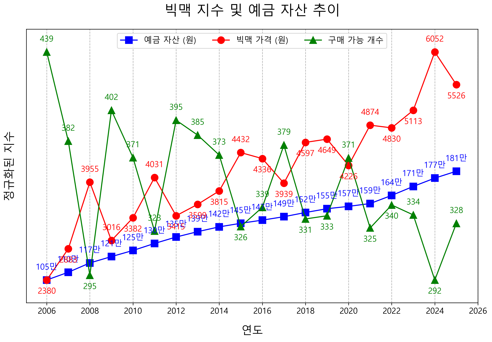
채권은 국가나 기업이 돈을 빌리면서 이자를 지급하는 구조다. 비교적 안정적인 수익을 제공하지만, 역시 수익률은 제한적이다. 금리가 낮은 환경에서는 채권 역시 물가 상승률을 충분히 따라가지 못하는 경우가 많다. 결국 남는 것은 부동산과 주식이다. 이 두 자산은 장기적으로 경제 성장과 함께 가치가 상승해왔다. 한국의 경우를 보더라도, 지난 시간 동안 주요 부동산 가격은 몇 배 이상 상승해왔다. 주식 시장 역시 마찬가지다. 변동성은 크지만, 장기적으로 보면 꾸준히 우상향하는 흐름을 보여왔다. 이는 단순한 투기가 아니라, 경제의 성장과 기업의 이익이 반영된 결과다.
이제 선택은 단순해진다. 우리는 어떤 영역에 계속 머물 것인가를 결정해야 한다. 기대값이 낮은 곳에서 반복적으로 돈을 잃을 것인지, 기대값이 없는 곳에서 시간과 에너지를 소비할 것인지, 아니면 기대값이 높은 곳에서 꾸준히 시간을 쌓아갈 것인지 말이다. 투자의 본질은 복잡하지 않다. 어디에 돈을 넣어야 하는지가 아니라, 어떤 구조를 선택하느냐의 문제다. 기대값이 낮은 구조를 반복하면 결국 손실로 귀결되고, 기대값이 높은 구조를 반복하면 돈이 돈을 낳는 복리의 힘을 볼 수 있다.
그러니 우리는 지금 어떤 구조 속에 있는지 끊임없이 질문해야 한다.
투자를 이야기하면 대부분은 무엇을 살지부터 고민한다. 어떤 종목이 좋은지, 어떤 타이밍에 들어가야 하는지, 어떤 전략이 수익률이 높은지에 관심을 가진다. 하지만 그보다 먼저 생각해야 할 것이 있다. 바로 사람이다. 그리고 더 정확히 말하면, 나 자신이다. 이 장에서 우리는 투자 기술이 아니라 인간의 심리에 대해 먼저 이야기했다. 이유는 단순하다. 심리를 이해하지 못한 상태에서 어떤 전략을 배우더라도, 결국 같은 방식으로 무너질 가능성이 높기 때문이다. 이제 이 장에서 다룬 인간의 심리에 대해 짧게 정리해보자.
사람이 많은 곳에는 분명 이유가 있다. 하지만 그 이유가 곧 기회라는 뜻은 아니다. 오히려 많은 사람이 몰려 있다는 사실 자체가 이미 늦었음을 의미할 때가 더 많다. 군중을 따라가는 순간, 우리는 스스로 판단을 멈추고 평균으로 돌아가게 된다. 만약 군중 속에 답이 있다면, 왜 부자는 소수에 불과할까.
비교심리도 마찬가지다. 우리는 끊임없이 남과 비교하며 스스로를 평가한다. 하지만 비교는 득보다 실이 많다. 팃포텟이 주는 교훈처럼 옆 사람이 아니라 전체를 보고, 당장의 손해를 감수하더라도 마지막에 웃는 선택을 해야 한다.
우리는 종종 돈에 불필요한 의미를 부여한다. 힘들게 번 돈, 쉽게 번 돈, 운 좋게 생긴 돈. 하지만 돈은 그저 돈일 뿐이다. 돈의 출처가 아니라, 그 돈을 어떻게 다루는지가 더 중요하다. 이 단순한 기준 하나만으로도 많은 비합리적인 선택을 줄일 수 있다.
또한 우리는 스스로가 다를 것이라고 생각한다. 다른 사람은 실패했지만, 나는 아닐 것이라고 믿는다. 하지만 역사 속 수많은 사례는 그 생각이 얼마나 위험한지 보여준다. 가장 뛰어난 지성을 가진 사람들조차 이 함정에서 벗어나지 못했다.
손실에 대한 두려움을 이겨내야 한다. 우리는 이익보다 손실을 훨씬 더 크게 느낀다. 이 감정은 우리의 판단을 왜곡시키고, 작은 손실은 피하려다 더 큰 이익을 놓치게 만든다. 이는 본능적으로는 자연스럽지만, 투자에서는 치명적인 약점이 된다.
기대값이라는 기준을 가지고 멀리 봐야 한다. 단기적인 결과를 바라는 일은 투자가 아니라 투기다. 기대값이 높은 선택을 반복하여 복리의 마법을 좇는 것이 우리가 할 일이다.
결국 이 장에서 투자는 기술의 문제가 아니라, 판단의 문제라고 이야기했다. 그리고 그 판단은 결국 인간의 심리 위에서 이루어진다. 아무리 좋은 전략을 알아도, 군중을 따라가고, 비교에 흔들리고, 감정에 끌린다면 그 전략은 제대로 작동하지 않는다. 반대로 심리를 이해하고, 스스로를 통제할 수 있다면 복잡한 전략이 없어도 충분히 좋은 결과를 만들어낼 수 있다.
그래서 우리는 순서를 바꿔야 한다. 무엇을 살지 고민하기 전에, 어떻게 생각할지를 먼저 정해야 한다. 이제 여러분이 어느 정도 마음의 준비를 마쳤기를 바란다. 다음 장에서는 돈이 어떻게 움직이는지, 그리고 왜 특정 자산이 장기적으로 상승하는지에 대해 이야기할 것이다. 심리를 이해했다면, 이제는 투자에 앞서 돈의 구조를 이해할 차례다.
이전 장에서 우리는 하나의 중요한 사실을 확인했다. 빅맥 가격은 꾸준히 올라갔고, 같은 기간 동안 예금은 늘어났음에도 불구하고 실제로 살 수 있는 빅맥의 개수는 오히려 줄어들었다. 숫자는 증가했지만, 실질적인 구매력은 감소한 것이다. 그렇다면 질문이 하나 생긴다. 왜 이런 일이 발생할까. 왜 우리는 돈을 모으고 있음에도 점점 가난해지는 느낌을 받게 되는 걸까. 이 질문에 답하기 위해서는 돈이 어떻게 만들어지고, 어떻게 퍼져나가는지를 이해해야 한다.
필립 바구스의 ≪왜 그들만 부자가 되는가≫라는 책에서는 금광에 대한 이야기가 등장한다. 금이 화폐 역할을 하던 시대를 상상해 보자. 금광을 가진 사람은 단순히 자원을 가진 것이 아니라, 돈을 만들어낼 수 있는 권한을 가진 것이나 다름없었다. 금을 캐낼 수 있다는 것은 곧 새로운 화폐를 공급할 수 있다는 의미였기 때문이다.
하지만 여기서 더 중요한 점은 단순히 금광을 소유한 사람뿐 아니라, 금을 막 캐낸 사람, 즉 그 금을 가장 먼저 사용하는 사람이 큰 이익을 얻는다는 사실이다. 처음 채굴된 금은 아직 시장에 충분히 퍼지지 않은 상태다. 이때 그 금을 손에 쥔 사람은 기존 가격으로 물건을 살 수 있다. 즉, 물가는 아직 오르지 않았지만 돈은 이미 늘어난 상태다. 이 시점에서 소비를 한 사람은 더 많은 가치를 가져갈 수 있다.
그다음 단계에서는 그 금을 받은 사람들, 즉 1차 수혜자들이 등장한다. 이들도 아직 크게 오른 물가를 체감하기 전이기 때문에 유리한 조건에서 거래를 한다. 이후 2차, 3차로 금이 퍼지면서 점점 시장 전반에 영향을 미치고, 결국 물가가 상승하게 된다. 그리고 이 시점부터는 더 이상 새로운 금으로 인한 추가적인 이득을 기대하기 어려워진다. 재화나 서비스의 양은 그대로인데, 돈의 양만 늘어났기 때문에 가격이 오를 수밖에 없다.
돈도 마찬가지로 동시에, 공평하게 퍼지지 않는다. 먼저 받은 사람과 나중에 받은 사람 사이에는 분명한 차이가 생긴다. 그리고 그 차이가 결국 부의 격차로 이어진다. 이 과정이 바로 ‘칸티용 효과’다.
이제 이 구조를 현대 사회로 가져와 보자. 오늘날 금광의 역할은 중앙은행이 대신한다. 중앙은행은 필요에 따라 돈을 만들어내고, 그 돈은 시중은행을 통해 시장으로 흘러간다. 하지만 이 돈 역시 모든 사람에게 동시에 전달되지 않는다. 가장 먼저 돈을 접하는 곳은 은행과 기업, 그리고 자산시장이다. 기업은 투자와 확장을 위해 자금을 사용하고, 투자자들은 주식과 부동산을 매입한다. 이 과정에서 자산 가격은 먼저 상승한다. 그 후 시간이 지나면서 그 영향이 소비 시장으로 퍼지고, 우리가 체감하는 물가 상승으로 이어진다.
여기서 중요한 점은 우리가 월급으로 돈을 받는 시점이 이 흐름의 가장 마지막에 가깝다는 것이다. 이미 자산 가격이 오르고, 물가가 상승한 이후에야 우리는 돈을 받는다. 하지만 그 새로 찍은 돈의 혜택은 이미 먼저 돈을 접한 사람들이 상당 부분 가져간 뒤다. 그래서 우리는 같은 돈을 가지고도 이전보다 더 적은 것을 살 수 있게 된다. 그 결과 통장 잔고는 조금 늘어났을지언정, 삶은 오히려 더 팍팍해졌다고 느끼게 되는 것이다.
이전 장에서 본 빅맥 사례는 바로 이 구조를 보여준다. 예금은 꾸준히 증가했지만, 빅맥 가격은 더 빠르게 상승했고, 그 결과 우리가 실제로 살 수 있는 양은 줄어들었다. 이것은 단순한 물가 상승의 문제가 아니라, 돈이 퍼지는 순서의 문제다.
그렇다면 우리는 어떻게 해야 할까. 많은 사람들이 이 지점에서 감정적으로 반응한다. 왜 이런 구조가 존재하는지, 왜 나는 항상 뒤에 있는지에 대해 불만을 느낀다. 하지만 이 감정은 큰 도움이 되지 않는다. 왜냐하면 이 구조는 개인이 바꿀 수 있는 것이 아니기 때문이다. 이것은 사회가 선택한 시스템이고, 국가가 운영하는 게임의 규칙이다.
우리가 할 수 있는 일은 단 하나다. 이 게임의 룰을 이해하고, 그 안에서 움직이는 것이다. 단순히 돈을 모으는 것만으로는 부족하다. 돈이 어디에서 만들어지고, 어디로 먼저 흘러가는지를 이해해야 한다. 그리고 그 흐름 속에서 가능한 한 앞쪽에 서야 한다. 가만히 월급이 들어오기만을 기다린다면, 우리는 항상 마지막에 서게 된다. 그리고 그때는 이미 대부분의 기회가 지나간 뒤다.
인플레이션은 단순한 경제 현상이 아니다. 그것은 보이지 않게 작동하는 구조이며, 우리가 살아가는 게임의 룰이다. 이 룰을 이해하지 못하면, 우리는 열심히 일하면서도 점점 뒤처지게 된다. 반대로 이 룰을 이해하면, 왜 어떤 자산은 계속 오르는지, 왜 어떤 사람들은 점점 더 부자가 되는지 자연스럽게 보이기 시작한다.
결국 결론은 단순하다. 돈을 모으는 것만으로는 부족하고, 돈이 먼저 흐르는 곳으로 이동해야 한다. 그것이 이 게임에서 살아남는 방법이다.
금리는 돈을 빌리는 데 드는 비용이다. 돈을 빌릴 때는 이자를 지불하는데, 이때 적용되는 비율이 바로 금리다. 하지만 금리는 모두에게 똑같이 적용되지 않는다. 그리고 이러한 금리의 차이가 우리의 삶 자체를 완전히 바꿔놓을 수 있다. 그래서 금리는 단순한 숫자가 아니라, 우리의 일상생활을 결정하는 핵심 요소다.
사람들은 지금 당장 없는 돈을 미래의 소득을 담보로 미리 쓰기 위해서 돈을 빌린다. 집을 사기 위해, 사업을 시작하기 위해, 혹은 더 큰 기회를 잡기 위해 우리는 돈을 빌린다. 다시 말해, 금리는 단순한 비용이 아니라 시간과 기회의 교환이다. 미래의 돈을 현재로 끌어오는 대가라고 볼 수 있다.
이 과정이 가능하려면 한 가지 전제가 필요하다. 바로 신뢰다. 돈을 빌려주는 사람은 이 돈이 다시 돌아올 것이라고 믿어야 하고, 빌리는 사람은 미래에 그 돈을 갚을 수 있다고 믿어야 한다. 현대 자본주의 시스템은 바로 이 신뢰 위에 쌓여 있다. 은행이 돈을 빌려주고, 기업이 투자하고, 개인이 대출을 받는 모든 과정은 결국 서로에 대한 신뢰가 전제되어야만 작동한다.
그래서 금리는 단순한 숫자가 아니라, 신뢰의 가격이기도 하다. 누군가를 더 신뢰할수록 낮은 금리를 적용하고, 신뢰가 낮을수록 더 높은 금리를 요구한다. 이 점을 이해하면, 왜 같은 돈을 빌리더라도 누구는 싸게, 누구는 비싸게 빌리게 되는지 자연스럽게 이해할 수 있다.
그렇다면 이 금리는 어떻게 결정될까. 기본적으로 각 나라의 중앙은행이 정하는 기준금리가 있고, 여기에 가산금리가 붙는다. 기준금리는 말 그대로 금융 시장의 기준이 되는 금리다. 하지만 실제로 우리가 대출을 받을 때 적용되는 금리는 이 기준금리 그대로가 아니다. 은행은 여기에 각 개인이나 기업의 상황에 따라 여러 요소를 반영해 금리를 조정한다. 이때 붙는 것이 가산금리다.
가산금리는 신용도에 따라 크게 달라진다. 신용도가 높은 사람이나 기업은 낮은 가산금리를 적용받는다. 돈을 빌려줘도 떼일 가능성이 낮기 때문이다. 반대로 개인, 특히 신용도가 낮거나 소득이 불안정한 경우에는 높은 가산금리가 붙는다. 같은 돈을 빌리더라도 누구는 3퍼센트로 빌리고, 누구는 7퍼센트, 10퍼센트에 가깝게 빌리는 일이 벌어지는 이유다.
이 구조는 단순한 차이를 넘어 결과의 격차를 만든다. 금리가 낮은 사람은 돈을 빌려 더 많은 기회를 잡을 수 있고, 금리가 높은 사람은 같은 기회를 잡더라도 훨씬 더 큰 비용을 감당해야 한다. 시간이 지나면 이 차이는 점점 더 벌어진다. 금리는 단순한 비용이 아니라, 부의 흐름을 결정짓는 중요한 장치다. 은행과 기관은 여기서도 가장 먼저 돈을 접하는 위치에 있다. 낮은 금리로 자금을 조달하고, 그 자금을 바탕으로 더 큰 자산에 투자한다. 반면 개인은 이 구조의 뒤쪽에 있다. 더 높은 금리로 돈을 빌리고, 이미 가격이 오른 자산에 접근하게 된다. 같은 시장에서 움직이고 있지만, 출발선 자체가 다르다.
그래서 금리는 중립적인 숫자가 아니다. 겉으로는 누구에게나 동일하게 적용되는 것처럼 보이지만, 실제로는 자산이 많은 사람과 기관에 훨씬 유리하게 작동한다. 돈을 싸게 빌릴 수 있는 사람은 더 많은 기회를 얻고, 비싸게 빌릴 수밖에 없는 사람은 그만큼 불리한 조건에서 시작하게 된다. 이 사실이 불공평하게 느껴질 수도 있다. 하지만 앞서 이야기했듯이, 이 시스템은 개인이 바꿀 수 있는 것이 아니다. 우리가 할 수 있는 일은 하나뿐이다. 이 구조를 이해하고, 그 안에서 유리한 위치를 찾는 것이다.
금리에 대해서는 한 가지 더 중요한 기능이 있다. 금리는 단순히 돈의 가격을 결정하는 것을 넘어, 시장에 풀리는 돈의 양, 즉 통화량을 조절하는 역할을 한다. 앞서 금광의 예를 통해 살펴봤듯이, 금이 시장에 많이 공급되면 물가가 상승한다. 금과 마찬가지로 현대 사회에서도 통화량이 증가하면 물가는 상승한다. 돈이 많아질수록 같은 물건을 사기 위해 더 많은 돈이 필요해지기 때문이다.
이제 금리가 이 과정에 어떻게 영향을 미치는지 생각해 보자. 당신이 돈을 활용해 연 10퍼센트의 수익을 낼 수 있는 사람이라고 가정해 보자. 만약 금리가 낮아 2퍼센트에 돈을 빌릴 수 있다면 어떨까. 단순 계산으로도 8퍼센트의 차익이 남는다. 이 경우 가능한 한 많은 돈을 빌려 사업을 확장하는 것이 합리적인 선택이 된다. 실제로 시장에서도 이런 상황이 벌어진다. 금리가 낮아지면 기업과 개인은 더 많은 돈을 빌리고, 그 돈은 투자와 소비로 이어지며 시장에 더 많이 풀리게 된다.
반대로 금리가 올라가면 상황은 달라진다. 같은 사람이 6퍼센트의 금리로 돈을 빌려야 한다면, 기대 수익과의 차이는 4퍼센트로 줄어든다. 여기에 인건비나 기타 비용까지 고려하면 사업 자체가 성립하지 않을 수도 있다. 이 경우 사람들은 돈을 덜 빌리게 되고, 기존에 빌린 돈도 줄이려고 한다. 결국 시장에 풀리던 돈이 다시 은행으로 돌아가게 된다. 이 과정이 반복되면서 시장의 통화량은 자연스럽게 조절된다. 금리가 낮을 때는 돈이 풀리고, 금리가 높을 때는 돈이 회수된다. 그리고 이 통화량의 변화는 결국 물가에 영향을 미친다. 정확히 말하면, 통화량의 증가 속도가 빨라지면 물가 상승이 가속화되고, 증가 속도가 둔화되면 물가 상승도 함께 둔화된다.
일부 사람들은 돈을 더 이상 만들지 않으면 이러한 불평등이 사라지지 않을까 생각할 수도 있다. 하지만 자본주의 시스템에서는 인플레이션을 막는 것이 거의 불가능하다는 점이다. 그 이유는 이자 구조 때문이다. 누군가 100만 원을 빌리면, 100만 원에 이자를 쳐서 갚아야 한다. 하지만 시장 전체로 보면 처음에 존재했던 돈은 100만 원뿐이다. 이 차이를 메우기 위해서는 결국 추가적인 돈이 계속해서 공급되어야 한다. 반대로 이자가 없다면 누가 돈을 빌려주려 하겠는가. 즉, 자본주의는 구조적으로 통화량의 증가를 필요로 하고, 그 결과로 인플레이션을 동반할 수밖에 없다.
결국 자본주의는 태생적으로 불평등을 안고 있다. 그리고 그 중심에는 금리가 있다. 이 구조를 이해하느냐, 이해하지 못하느냐에 따라 결과는 완전히 달라진다.
앞선 글에서 우리는 인플레이션과 금리가 어떻게 작동하는지 살펴봤다. 돈은 동시에 공평하게 퍼지지 않고, 먼저 접근한 사람에게 유리하게 작동한다. 금리는 신뢰의 가격으로 작용하며, 낮은 금리를 적용받는 사람일수록 더 많은 기회를 잡을 수 있다. 이 두 가지 구조가 결합되면 어떤 일이 벌어질까. 이미 유리한 위치에 있는 사람은 더 빠르게 자산을 늘릴 수 있고, 그렇지 못한 사람은 점점 뒤처지는, 소위 말해 '빈익빈 부익부' 현상이 발생한다. 그렇다면 실제로 이러한 현상이 발생하고 있는지 데이터를 통해 확인해볼 필요가 있다.
불평등의 정도를 측정하는 방법은 여러 가지가 있다. 우리가 흔히 접하는 방식은 상위 몇 퍼센트가 전체 자산의 몇 퍼센트를 차지하고 있는지를 보는 것이다. 예를 들어 상위 1퍼센트가 전체 자산의 절반을 가지고 있다면, 그 사회는 상당히 불평등하다고 판단할 수 있다. 보다 객관적인 지표로는 지니계수가 있다. 지니계수는 소득이나 자산이 얼마나 고르게 분배되어 있는지를 나타내는 지표로, 0에 가까울수록 평등하고 1에 가까울수록 불평등한 상태를 의미한다. 다만 지니계수는 계산 방식이 복잡하고, 장기간의 데이터를 확보하기 어려운 경우가 많기 때문에 이번 글에서는 보다 직관적인 상위 1퍼센트의 소득과 자산 점유율을 중심으로 살펴보려 한다.
아래의 두 그래프는 주요 국가들의 소득 상위 1퍼센트 점유율과 자산 상위 1퍼센트 점유율을 보여준다. World Inequality Database의 데이터를 기반으로 구성한 이 그래프를 보면 한 가지 공통된 흐름이 보인다. 대부분의 국가에서 상위 1퍼센트의 점유율이 시간이 지날수록 증가하는 우상향을 그리고 있다는 점이다. 이는 단순한 일시적 현상이 아니라, 장기적으로 불평등이 확대되고 있다는 명확한 증거다. 즉, 부자는 더 많은 비중을 차지하게 되고, 그 외의 사람들은 상대적으로 점점 더 적은 몫을 가지게 된다.
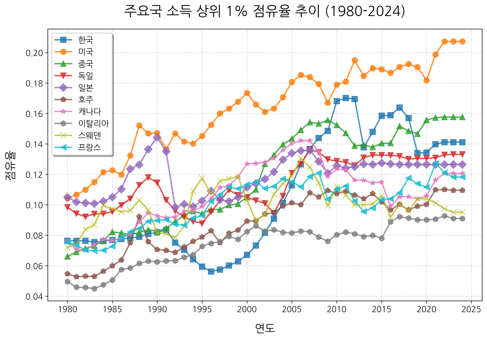
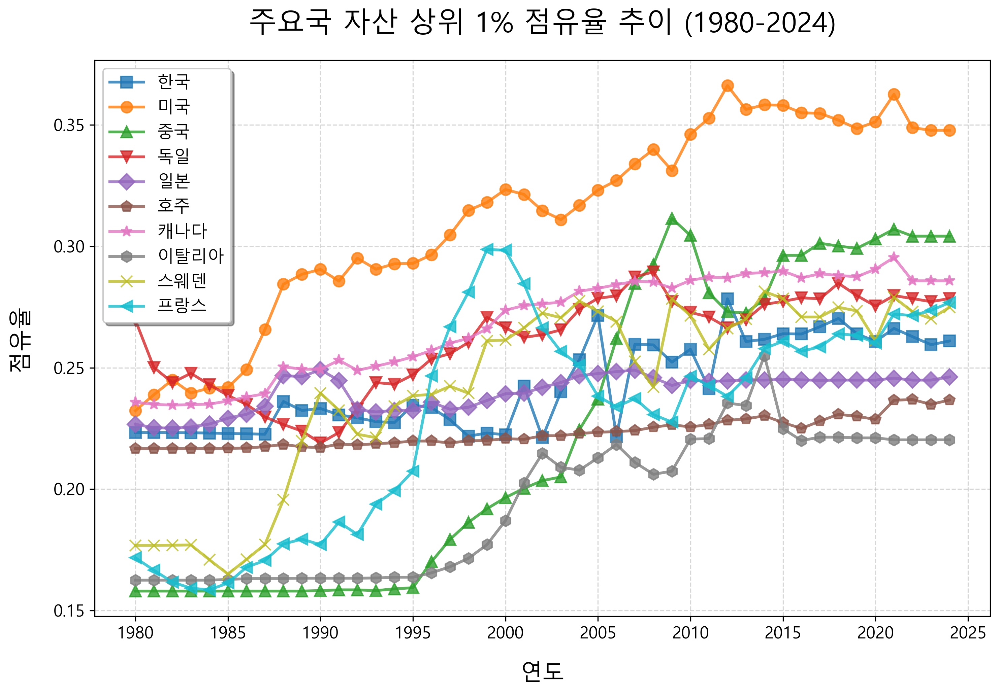
여기서 한 가지 더 중요한 지표를 살펴볼 필요가 있다. 바로 1인당 GDP다. 1인당 GDP는 단순한 경제 규모가 아니라, 한 사람이 평균적으로 어느 정도의 경제적 수준을 누리고 있는지를 보여주는 지표다. 다시 말해, 우리가 실제로 체감하는 삶의 수준과 가장 밀접하게 연결된 수치다. 아래의 그래프는 주요 국가들의 1인당 GDP 추이를 나타낸다. 이 그래프에서 중요한 것은 단순한 절대적인 수치가 아니라 상승 속도다. 경제가 얼마나 빠르게 성장하고 있는지를 보여주기 때문이다.
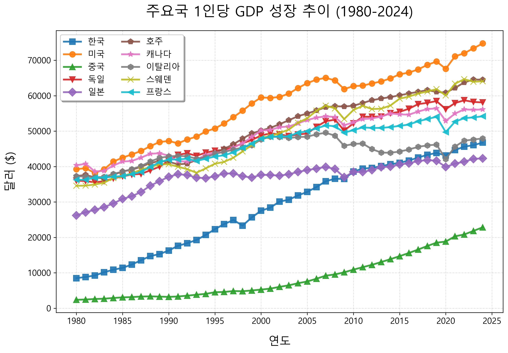
이를 더 명확하게 보기 위해 미국을 기준으로 비교한 것이 아래의 그래프다. 미국을 1로 놓고 각 국가가 어느 수준에 있는지를 나타낸 것이다. 이 그래프를 보면 몇 가지 중요한 사실을 확인할 수 있다. 한국과 같은 국가는 빠른 속도로 성장하며 미국과의 격차를 줄여왔지만, 2010년 이후부터는 그 속도가 눈에 띄게 둔화되고 있다. 반면 대부분의 선진국들은 이미 1990년대부터 미국 대비 상대적인 비율이 감소하는 흐름을 보인다. 즉, 절대적으로는 성장하고 있지만, 상대적으로는 미국과의 격차가 벌어지고 있는 것이다.
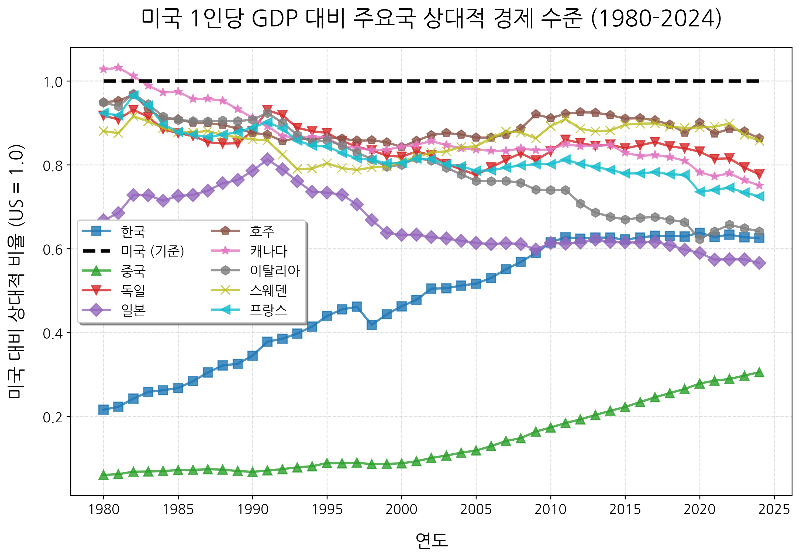
여기서 눈에 띄는 국가는 중국이다. 중국은 여전히 미국 대비 빠른 상승 흐름을 보이고 있다. 이는 제조업 중심의 성장, 국가 주도의 투자 확대, 그리고 글로벌 자본과 노동력의 결합이 만들어낸 결과다. 저렴한 노동력을 바탕으로 세계의 공장 역할을 수행했고, 이를 통해 축적된 자본을 다시 인프라와 산업에 재투자하는 구조가 빠른 성장을 만들어냈다. 하지만 이러한 모습은 과거에도 한 번 등장한 적이 있다. 소련이 급격히 성장하던 시기, 많은 학자들조차 소련식 계획경제가 자본주의보다 더 효율적이고 우월한 체제라고 믿었다. 실제로 일정 기간 동안은 놀라운 성장 속도를 보여주기도 했다. 하지만 그 결과는 우리가 알고 있듯이 붕괴였다.
중국 역시 지금은 빠른 성장의 한가운데에 있지만, 이 흐름이 장기적으로 지속될 수 있을지는 여전히 논쟁의 대상이다. 이 문제를 조금 더 깊이 있게 이해하고 싶다면, 대런 애쓰모글루의 ≪국가는 왜 실패하는가≫를 참고할 수 있다. 이 책에서는 국가의 성장을 결정짓는 핵심 요소로 ‘포용적 제도(Inclusive Institutions)’와 ‘착취적 제도(Extractive Institutions)’를 제시한다. 포용적 제도는 개인의 권리와 창의를 보호하며 지속적인 성장을 가능하게 하지만, 착취적 제도는 특정 집단이 권력을 독점하며 장기적으로 성장을 제한한다고 설명한다.
반대로 위엔위엔 앙의 ≪부패한 중국은 왜 성장하는가≫는 조금 다른 시각을 제시한다. 이 책은 중국의 성장 과정에서 나타난 부패가 단순히 비효율을 낳는 것이 아니라, 오히려 경제 활동을 촉진하는 역할을 했다는 점을 강조한다. 즉, 동일한 현상을 두고도 전혀 다른 해석이 가능하다는 것이다. 이처럼 중국의 성장에 대해서는 학자들 사이에서도 의견이 크게 갈린다. 그렇기 때문에 이 문제에 관심이 있다면 한쪽 시각에만 치우치기보다는, 다양한 자료를 통해 균형 잡힌 시각을 갖는 것이 중요하다.
다시 본론으로 돌아가서 방금 살펴본 미국 대비 1인당 GDP의 그래프를 통해 우리는 한 가지 중요한 사실을 알 수 있다. 부익부 빈익빈은 단순히 개인의 문제나 한 사회 내부의 문제가 아니라, 국가 간에도 동일하게 발생하고 있다는 점이다. 그리고 그 중심에는 우리가 앞서 살펴본 구조가 자리 잡고 있다. 세계 경제는 사실상 달러를 중심으로 돌아간다. 미국의 통화 정책, 특히 금리 정책은 전 세계에 영향을 미친다. 미국이 금리를 낮추면 글로벌 자본은 더 많은 수익을 찾아 움직이고, 금리를 올리면 다시 미국으로 자본이 돌아온다. 이러한 흐름 속에서 자본은 자연스럽게 더 강한 시장, 더 많은 기회를 제공하는 곳으로 이동하게 된다.
우리는 데이터를 통해 국가도, 그리고 세계 경찰을 자처했던 미국도, 그 어느 누구도 빈자의 편에 서 있지 않다는 사실을 확인했다. 가만히 있으면 자연스럽게 뒤처지는 구조라는 점이다. 이 구조 속에서는 가만히 앉아 있는 것 자체가 뒤처지는 선택이 된다. 그렇다면 결론은 명백하다. 가능한 한 빨리, 그리고 의식적으로 자본이 흐르는 방향에 올라타야 한다. 즉, 어떻게든 자본주의의 혜택을 받을 수 있는 방향으로 하루라도 빨리 움직여야 한다.
앞선 글에서 우리는 한 가지 중요한 사실을 확인했다. 자본주의라는 시스템 속에서 돈은 공평하게 퍼지지 않는다는 점이다. 돈은 항상 먼저 접근할 수 있는 곳으로 흘러가고, 그 흐름 속에 있는 사람과 그렇지 못한 사람 사이에는 시간이 지날수록 격차가 벌어진다. 월급을 받는 대부분의 사람들은 이 구조에서 뒤쪽에 위치한다. 돈이 풀릴 때 가장 마지막에 받는 위치에 있기 때문이다. 그 사이에 자산 가격은 이미 올라 있고, 우리는 더 비싼 가격으로 그 결과를 따라가게 된다. 이러한 현상은 한 사회 안에서만 일어나는 것이 아니다. 국가 간에도 동일하게 발생한다. 자본은 더 강한 시장, 더 높은 수익을 기대할 수 있는 곳으로 이동한다. 그리고 그 중심에는 항상 기업과 금융 시스템이 있다.
여기서 질문을 하나 던져보자. 그렇다면 이 구조 속에서 우리는 어떻게 해야 할까. 답은 의외로 단순하다. 자본이 흐르는 곳에 올라타면 된다. 돈이 풀리면 가장 먼저 가는 곳은 은행과 기업이다. 그리고 이 기업들은 가장 낮은 금리로 돈을 조달할 수 있는 위치에 있다. 다시 말해, 자본주의 시스템에서 가장 유리한 위치는 부가가치를 창출해 내는 기업이다.
아, 물론 돈을 찍어내는 국가는 예외로 하자. 참고로, 정확히 말하자면 돈을 찍어내는 건 중앙은행이다. 중앙은행은 국채를 매입하거나 시중은행에 자금을 공급하는 방식으로 새로운 돈을 만들어낸다. 예를 들어 정부가 국채를 발행하면 중앙은행이 이를 사들이고, 그 대가로 새로운 돈이 시장에 공급된다. 또는 시중은행에 돈을 빌려주면서 유동성을 늘리기도 한다. 이렇게 만들어진 돈은 개인에게 바로 가지 않는다. 먼저 금융 시스템을 통해 은행과 기업으로 흘러가고, 이후에야 시장 전체로 퍼진다.
이를 고려한다면 우리에게 선택지는 두 가지가 있다. 직접 회사를 운영하거나 회사의 일부를 소유해야 한다. 대부분의 사람들에게 전자는 현실적으로 어렵다. 하지만 후자는 쉽게 가능하다. 그리고 그 수단이 바로 주식이다. 주식은 단순히 가격이 오르고 내리는 종이가 아니다. 주식은 기업의 지분이다. 즉, 기업의 일부를 소유하는 권리다. 기업이 성장하면 그 이익은 결국 주주에게 돌아온다.
주식이 처음 등장한 것도 이러한 필요 때문이었다. 17세기 네덜란드에서 설립된 동인도회사는 대규모 무역을 위해 막대한 자금이 필요했다. 개인이 감당하기 어려운 규모였기 때문에, 여러 사람에게 자금을 나누어 받고 그 대가로 지분을 나누어주었다. 이것이 현대 주식 시장의 시작이다. 즉, 주식은 처음부터 ‘자본의 흐름에 일반인이 참여할 수 있게 만든 장치’였다.
지금까지의 내용을 잘 따라왔다면, 자본주의 시스템에서 부를 만들기 위해서는, 단순히 돈을 모으는 것이 아니라 기업의 성장에 참여해야 한다는 점을 알 수 있다. 그렇다면 어떤 기업에 투자해야 할까. 개별 기업을 고르기 전에, 먼저 국가 단위에서 큰 흐름을 보는 것이 중요하다. 앞선 글에서 우리는 주요 국가들의 성장 데이터를 살펴봤다.
대부분의 선진국들은 일정 수준까지 성장한 이후에는 성장 속도가 확연히 둔화되는 경향을 보였다. 이미 충분히 산업이 발달했고, 인구 구조나 생산성 측면에서도 여러 한계에 부딪혔기 때문이다. 혁신이 정체되거나, 새로운 성장 동력이 부족해지는 경우도 많다. 그에 비해 미국은 이러한 한계를 극복하고 여전히 꾸준한 성장세를 유지하고 있다. 이는 단순히 경제 규모라기보다, 자본이 지속적으로 미국으로 흘러들어가고 있다는 신호로도 볼 수 있다. 다음 장에서 더 자세히 다루겠지만, 이 흐름의 중심에는 결국 사람이 있다. 어떤 사람이 모이고, 어떤 사람이 가치를 만들어내느냐에 따라 자본의 방향은 결정된다.
물론 중국 역시 빠른 성장세를 보이고 있다. 하지만 이 부분에 대해서는 조금 더 신중하게 접근할 필요가 있다. 개인적인 의견이지만, 나는 장기적으로 미국이 여전히 우위를 유지할 가능성이 높다고 본다. 과거 소련과 미국의 경쟁에서도 결국 승자는 미국이었다. 이것은 단순히 성장 추세의 문제가 아니라 제도의 문제였다. 나는 아직 중국이 충분히 포용적인 제도를 갖추지 못했다고 생각한다. 국가 주도의 강력한 지원을 통해 빠른 성장을 이루고 있지만, 이것이 장기적으로 지속 가능한 구조인지에 대해서는 의문이 남는다. 마치 스테로이드를 맞고 빠르게 성장하는 것처럼 보일 수 있다. 물론 이는 하나의 관점일 뿐이며, 다양한 의견이 존재한다. 따라서 이 부분은 참고로 받아들이는 것이 좋다.
결국 다시 본론으로 돌아가자. 우리가 해야 할 일은 자본이 흐르는 방향을 이해하고, 그 흐름에 올라타는 것이다. 단순히 월급을 모으는 것만으로는 부족하다. 우리는 스스로가 자본주의의 근간이라 할 수 있는 부가가치를 창출할 수 있는 기업의 일부가 되어야 한다. 그리고 가장 현실적이고 쉬운 방법은 주식을 사는 것이다.
조금 더 구체적으로, 그리고 장기적인 관점에서 말하자면 하나의 방향은 분명하다. 자본이 가장 강하게 흐르고 있는 곳, 미국 시장에 올라타는 것이다. 이 책의 남은 부분에서 더욱 구체적으로 어떻게 그 흐름에 올라탈 수 있는지, 그리고 어떤 방식으로 접근해야 하는지를 보다 구체적으로 다룬다.
세상에는 다양한 투자 수단이 존재한다. 부동산, 주식, 채권, 금, 원자재, 그리고 최근에는 암호화폐까지. 누군가는 땅에 투자하고, 누군가는 기업에 투자하며, 또 누군가는 기술에 투자한다. 또한 많은 사람들이 투자 대상을 분석할 때 숫자와 구조에 집중한다. 각각의 투자 대상이 가지는 수익률, 가격, 지표, 정책, 기술은 물론 중요하지만 그보다 더 중요한 요소가 있다. 그 모든 것의 중심에는 결국 사람이 있다는 점이다. 어떤 사람이 모여 있고, 어떤 방향으로 움직이고 있는지를 이해하지 못하면, 아무리 좋은 자산도 제대로 판단하기 어렵다.
마이크 버드의 ≪부동산은 어떻게 권력이 되었나≫는 부동산의 관점에서 이를 잘 보여준다. 이 책은 부동산이 단순한 자산을 넘어 어떻게 권력이 되었는지를 설명한다. 과거에는 토지가 생산 수단의 핵심이었다. 농사를 짓기 위해서는 땅이 필요했고, 그 땅을 소유한 사람이 자연스럽게 권력을 가지게 되었다. 시간이 지나 산업 구조는 바뀌었지만, 토지의 힘은 사라지지 않았다. 오히려 도시화와 함께 더 강력해졌다.
지금도 그 구조는 크게 다르지 않다. 예를 들어 상가를 하나 생각해보자. 가게 주인이 열심히 장사를 해서 매출을 올리고, 그로 인해 상권이 활성화된다. 주변에 사람이 몰리고, 지역이 살아난다. 하지만 그 결과로 가장 큰 혜택을 보는 사람은 누구일까. 바로 건물주다. 장사를 잘한 것은 가게 주인이지만, 임대료를 올릴 수 있는 권한은 건물주에게 있다. 결국 가게 주인이 만들어낸 부가가치의 일부가 부동산 소유자에게 이전되는 구조다. 부동산은 스스로 가치를 만들어내지 않지만, 그 위에서 만들어지는 가치를 흡수하는 구조를 가지고 있다. 부동산이 투자 자산으로서 매력적인 이유가 여기에 있다.
또한 부동산은 가격 상승뿐만 아니라 담보, 즉 레버리지로 활용할 수 있다. 예를 들어 10억 원짜리 집을 4억 원의 자기자본과 6억 원의 대출로 샀다고 가정해보자. 대출 금리가 5퍼센트이고 집값 상승률이 평균 8퍼센트라면, 단순 계산으로도 자기자본 수익률은 더 높아진다. 내 돈뿐 아니라 빌린 돈까지 자산 가격 상승의 영향을 받기 때문이다. 이렇게 자본 대비 더 큰 수익률을 올릴 수 있다. 하지만 부동산에도 분명한 한계가 있다. 필요할 때 즉시 현금화하기 어렵고, 거래 비용이 크며, 세금과 규제, 즉 정책 변화의 영향을 강하게 받는다. 무엇보다 정보의 비대칭성이 크고, 좋은 매물을 찾는 것 자체가 쉽지 않다.
이 책에서 주로 다루겠지만 나는 부동산 외에 주식이라는 자산에 주목할 필요가 있다고 생각한다. 이유는 단순하다. 회사 그 자체인 주식은 결국 사람에게 투자하는 것이기 때문이다. 회사는 그 '모일 회(會)'자와 '모일 사(社)'자의 한자어가 암시하듯 결국 사람이 모인 곳, 즉 사람들 그 자체라고도 할 수 있다. 그리고 그 조직은 끊임없이 새로운 가치를 만들어낸다. 앞서 말한 부동산이 가치를 흡수하는 구조라면, 기업은 가치를 창출하는 주체다. 좋은 기업은 시간이 지날수록 더 많은 가치를 만들어내고, 그 결과는 주주에게 돌아간다. 그래서 장기적으로 보면, 우수한 기업은 부동산 이상의 수익을 만든다 한다. 특히 혁신을 기반으로 성장하는 기업은 시장 자체를 확장시키며, 기존에 없던 가치를 만들어낸다. 이는 단순한 가격 상승이 아니라, 구조적인 성장이다.
그렇다면 최근 많은 관심을 받고 있는 암호화폐는 어떨까. 나는 이 영역에서도 결국 사람을 봐야 한다고 생각한다. 블록체인 기술을 이해하는 것도 중요하다. 하지만 기술만으로는 충분하지 않다. 그 기술을 믿고 사용하는 사람들이 얼마나 존재하는지, 그리고 앞으로 얼마나 더 늘어날지를 보는 것이 더 중요하다. 암호화폐는 기존 화폐 시스템과 다른 특징을 가지고 있다. 탈중앙화라는 개념이다. 기존의 화폐는 국가와 중앙은행이 발행하고 통제한다. 돈의 공급과 금리는 중앙에서 결정된다. 하지만 암호화폐는 그 권한을 분산시키려는 시도다. 특정 기관이 아닌 네트워크 참여자들이 시스템을 유지한다.
이러한 구조는 기존 시스템에 대한 불신이 있는 사람들에게 매력적으로 다가갈 수 있다. 정부와 중앙은행의 통제에서 벗어나고 싶어 하는 사람들이 존재하는 한, 암호화폐는 일정한 수요를 유지할 가능성이 있다. 물론 변동성이 크고, 규제 리스크도 존재한다. 하지만 이 역시 하나의 흐름이다. 어떤 사람들이 그 흐름을 만들어가고 있는지를 본다면, 그 방향을 조금 더 잘 이해할 수 있다.
어떤 자산이든, 그 가치를 만들어내는 주체는 사람이다. 사람이 모이는 곳에 돈이 모이고, 사람이 떠나는 곳에서는 돈도 함께 빠져나간다. 그래서 투자할 때는 숫자만 보지 말고, 그 숫자를 만들어내는 사람을 봐야 한다. 그것이 결국, 더 오래 살아남는 투자 방법이다.
2장에서 우리는 돈이 움직이는 구조를 살펴봤다. 결론부터 말하면, 자본주의는 그저 성실하게 일하고 월급을 모은다고 자연스럽게 부자가 되는 구조가 아니다. 물론 성실함은 중요하다. 하지만 성실함만으로는 부족하다. 돈이 어떻게 만들어지고, 어디로 먼저 흘러가며, 누구에게 유리하게 작동하는지를 이해하지 못하면 우리는 계속해서 뒤쪽에 서 있게 된다.
돈은 계속 풀린다. 그리고 그 돈은 동시에, 공평하게 퍼지지 않는다. 새로 만들어진 돈은 먼저 은행과 기업, 자산시장으로 흘러간다. 그 과정에서 자산 가격은 먼저 오르고, 우리는 한참 뒤에 월급이라는 형태로 그 영향을 받는다. 통장에 찍힌 숫자는 늘어날 수 있지만, 그 돈으로 살 수 있는 것은 오히려 줄어든다. 인플레이션은 단순히 물가가 오르는 현상이 아니라, 돈이 퍼지는 순서가 만들어내는 구조적 결과다.
금리 역시 이 구조를 더 분명하게 보여준다. 금리는 돈을 빌리는 비용이자, 신뢰의 가격이다. 신용도가 높고 자산이 많은 사람이나 기관은 낮은 금리로 돈을 빌릴 수 있다. 반면 평범한 개인은 더 높은 금리로 돈을 빌린다. 같은 돈을 빌리더라도 출발선이 다르다. 낮은 금리로 자금을 조달할 수 있는 사람은 더 많은 기회를 잡고, 높은 금리를 감당해야 하는 사람은 그만큼 불리한 위치에서 시작한다.
그 결과 빈익빈 부익부는 단순한 느낌이 아니라 실제로 지금도 우리 삶 속에서 일어나는 현상이다. 한 사회 안에서도 상위 1퍼센트의 소득과 자산 점유율은 커지고 있고, 국가 간에도 비슷한 흐름이 나타난다. 자본은 더 강한 시장, 더 높은 수익, 더 많은 기회가 있는 곳으로 이동한다. 가만히 있으면 중립이 아니라 후퇴가 된다. 이 구조 속에서는 움직이지 않는 것 자체가 뒤처지는 선택이 될 수 있다.
그렇기에 자본이 흐르는 방향을 이해하고, 그 흐름 위에 올라타야 한다. 직접 회사를 운영하기 어렵다면, 회사의 일부를 소유하면 된다. 그것이 주식이다. 주식은 단순히 오르내리는 숫자가 아니라, 기업의 성장에 참여하는 가장 현실적인 방법이다. 특히 장기적으로 자본이 강하게 흘러가는 시장을 선택하는 것은 중요한 판단이 된다.
그리고 이 모든 판단의 중심에는 결국 사람이 있다. 부동산도, 주식도, 암호화폐도 겉으로는 서로 다른 투자 대상처럼 보이지만, 그 가치를 만들고 유지하는 것은 결국 사람이다. 사람이 모이는 곳에 돈이 모이고, 사람이 떠나는 곳에서는 돈도 빠져나간다. 어떤 사람들이 모여 있는지, 그들이 어떤 가치를 만들어내고 있는지를 보지 못하면 투자도 제대로 보이지 않는다.
핵심은 돈을 이해해야 게임이 보인다는 것이다. 자본주의는 감정적으로 받아들일 대상이 아니라, 돈을 벌기 위해 반드시 이해해야 할 구조이며 우리가 지금 살고 있는 시스템이다. 불공평하다고 느끼는 데서 멈추면 아무것도 바뀌지 않는다. 중요한 것은 그 구조를 이해하고, 그 안에서 내가 설 위치를 바꿔야 한다는 점이다.
투자라는 말을 들으면 어떤 생각이 드는가. 도전감이 샘솟는가 아니면 위험하다는 느낌이 먼저 드는가. 그렇다면 이렇게 질문을 바꿔보자. 이 자본주의 사회에서 정말 안전한 것은 무엇인가. 현금이 안전하다고 생각하는가. 통장에 넣어두면 지킬 수 있다고 믿는가. 하지만 우리는 이미 알고 있다. 시간이 지나면 돈의 가치는 떨어진다. 빅맥의 가격이 보여주듯, 같은 돈으로 살 수 있는 것은 점점 줄어든다. 가만히 있는 것이 안전한 선택이 아니라는 사실이 이미 증명되었다. 투자에 대한 두려움은 자연스럽다. 하지만 그 두려움은 우리가 반드시 넘어야 할 첫 번째 장벽이다. 아무것도 하지 않는 것이 가장 안전하다는 믿음이 오히려 가장 위험하다.
돈이 되는 곳에는 반드시 진입 장벽이 존재한다. 쉽게 들어갈 수 있는 곳에는 경쟁이 많고, 결국 평균적인 결과로 수렴한다. 반대로 진입이 어려운 곳일수록 기회는 남아 있다. 고학력 전문직을 생각해보자. 의사, 변호사, 연구자와 같은 직업은 누구나 쉽게 가질 수 없다. 오랜 시간과 노력이 필요하다. 그만큼 높은 보상을 받는다. 장인이라 불리는 사람들도 마찬가지다. 오랜 시간 쌓아온 기술이 있기에 누구나 대체할 수 없고, 그 가치가 인정된다. 사회적으로 꺼리는 직업도 비슷한 구조를 가진다. 심리적 장벽이 존재하기 때문에 사람들이 쉽게 선택하지 않는다. 그 결과 상대적으로 더 높은 보상이 주어진다.
부동산도 같은 원리다. 가격이 오르는 이유는 여러 가지가 있지만, 그중 하나는 진입 장벽이다. 초기 자본이 있어야 한다. 특히 비싼 부동산일수록 더 큰 자본이 필요하다. 누구나 접근할 수 없는 구조이기 때문에 그 안에서 기회가 발생한다. 정보에도 장벽이 있다. 예를 들어 어떤 지역에 지하철이 새로 들어온다는 계획이 있다고 해보자. 이 사실이 뉴스에 나오고 많은 사람들이 알게 되는 순간, 가격은 이미 상당 부분 반영되어 있다. 하지만 그보다 앞서 도시계획 자료를 보고, 개발 흐름을 읽고, 인구 이동을 분석해 미리 판단한 사람들은 훨씬 유리한 위치에 서게 된다.
주식 시장에도 마찬가지로 여러 장벽이 존재한다. 기업은 재무제표, 공시, 보고서 등을 통해 수많은 정보를 공개하고 있다. 하지만 현실적으로 대부분의 사람들은 이 자료들을 하나하나 읽고 분석할 시간도, 그것을 정확히 해석할 능력도 부족하다. 숫자는 넘쳐나지만, 그 숫자가 의미하는 바를 이해하는 것은 또 다른 문제다. 예를 들어 매출이 증가했다는 사실만으로 좋은 기업이라고 판단할 수 있을까. 그 매출이 일시적인 것인지, 구조적인 성장인지, 비용 구조는 어떻게 변하고 있는지까지 함께 봐야 한다. 결국 단순한 정보의 유무가 아니라, 그 정보를 해석하고 연결할 수 있는 능력 자체까지도 장벽이 된다.
하지만 이러한 정보의 장벽보다 내가 생각하는 더 거대한 장벽은 바로 인내다. 주식 시장에는 "무릎에 사서 어깨에 팔라"는 격언이 있다. 적당히 싸게 사서 적당히 비싸게 팔라는 의미다. 말은 쉽지만, 실제로 그렇게 행동하는 사람은 많지 않다. 상승장에서는 사람들이 몰린다. 주변에서 돈을 벌었다는 이야기가 들리고, 차트는 계속 올라간다. 그때 우리는 불안해진다. 지금이라도 들어가야 할 것 같은 조급함이 생긴다. 그리고 대부분 그 시점이 어깨다. 하락장에서는 반대가 벌어진다. 가격이 떨어지기 시작하면 처음에는 버틴다. 하지만 하락이 길어지면 공포가 커진다. 더 떨어질 것 같다는 생각에 결국 손절하게 된다. 그리고 그 시점이 무릎이다.
싸게 사고 비싸게 팔면 되는 이 간단한 원리를, 사람은 본능적으로 반대로 행동한다. 상승할 때 사고, 하락할 때 판다. 그래서 대부분의 투자자는 시장보다 낮은 수익률을 기록한다. 이 장벽을 넘는 방법은 단순하다. 시간을 아군으로 만드는 것이다. 뒤에서 더 자세히 다루겠지만 존 보글은 그의 저서 ≪모든 주식을 소유하라≫에서 시장 전체를 사서 오래 들고 있으라고 말했다. 개별 종목의 등락을 맞추려 하지 말고, 전체 시장의 성장에 올라타라는 것이다. 이 방식의 핵심은 인내다.
시간이 지나면 시장은 결국 우상향한다. 단기적으로는 변동성이 있지만, 장기적으로는 성장한다. 이 과정을 견디는 것 자체, 즉 인내가 장벽이다. 대부분의 사람들은 이 장벽을 넘지 못하기에 기회를 놓친다. 전문 투자자가 아닌 이상, 결국 투자에서 중요한 것은 세련된 투자 기술 혹은 방대한 정보의 양이 아니다. 인내의 장벽을 넘을 수 있느냐가 중요하다. 두려움, 조급함, 그리고 시간을 견디는 것. 이 세 가지가 투자에서의 진짜 진입 장벽이다.
그리고 이러한 장벽을 넘는 사람만이 단 과실을 맛볼 자격이 있다.
예금은 1년 내내 돈을 묶어두어도 4퍼센트를 받을까 말까 한데, 주식은 하루에도 예금과 비교가 되지 않을 정도로 요동칠 때가 많다. 하지만 이를 분석하는 데는 시간과 노력이 너무 많이 든다. 그래서 사람들은 기업을 공부하고 분석하기보다 차트를 보며 타이밍을 맞추는, 소위 단타나 트레이딩에 욕심내곤 한다. 차트를 보고 있으면 왠지 나도 저 흐름을 맞출 수 있을 것만 같다. 하지만 이 방식이 왜 어려운지부터 생각해볼 필요가 있다.
상장된 기업에 대한 정보는 대부분 공개되어 있다. 재무제표, 공시, 사업보고서 등 수많은 자료를 누구나 볼 수 있다. 하지만 가장 먼저 마주하는 문제는 그 자료를 읽는 것 자체가 쉽지 않다는 점이다. 주식 투자를 하면서도 기업의 경영 성과와 재무 상태를 보여주는 공식 문서인 재무제표를 제대로 읽을 줄 아는 사람은 많지 않다. 내부 정보는 둘째 치더라도, 세상에 공개되어 있는 정보조차 해석하지 못한 채 그 회사의 주식을 사는 것이 대다수 개인 투자자의 현실이다.
또 다른 문제는 이 정보가 숫자로만 표현되어 있다는 점이다. 숫자는 결과를 보여줄 뿐, 그 과정과 맥락을 충분히 설명해주지 않는다. 기업을 제대로 이해하기 위해서는 단순히 숫자를 보는 것을 넘어, 그 숫자가 만들어진 이유를 알아야 한다. 이를 흔히 ‘행간을 읽는다’고 표현한다. 매출이 왜 증가했는지, 비용이 왜 줄었는지, 이익이 일시적인지 구조적인지 판단하려면 한두 번의 확인이 아니라 꾸준한 관찰과 깊은 이해가 필요하다.
설령 한 기업을 분석했다고 치자. 하지만 세상에는 기업이 너무 많다. 한국 주식시장에 상장된 기업만 해도 약 2,500개가 넘는다. 여기에 미국 시장까지 포함하면 수천 개가 아니라 수만 개의 기업이 존재한다. 그리고 투자 대상은 주식만 있는 것이 아니다. ETF처럼 여러 주식을 묶어놓은 상품도 있고, 채권, 파생상품, 원자재 등 선택지는 끝없이 늘어난다. 이 많은 기업과 자산을 모두 이해한 뒤, 그중에서 단기적으로 가격이 움직일 대상을 골라낸다는 것은 현실적으로 매우 어려운 일이다.
설령 운 좋게 기업을 잘 이해했다고 하더라도 수수료라는 산도 넘어야 한다. 트레이딩은 사고파는 횟수가 많다. 거래가 많아질수록 수수료는 계속 쌓인다. 한 번의 거래에서는 크게 느껴지지 않을 수 있지만, 수십 번, 수백 번이 반복되면 그 비용은 무시할 수 없는 수준이 된다. 결국 수익을 내기 위해서는 시장뿐 아니라 수수료와 세금, 그리고 잦은 판단 실수까지 함께 이겨내야 한다. 이미 시작부터 불리한 게임을 하고 있는 셈이다.
물론 이런 삶을 실제로 살아가는 사람도 있다. 일본의 개인 투자자 후지모토 시게루는 그 대표적인 사례다. 그는 하루에도 수십, 수백 번씩 거래를 하며 단타 매매로 큰돈을 번 사람이다. 그의 저서 ≪주식 투자의 기쁨≫에는 시장과 싸우며 살아가는 트레이더의 일상이 담겨 있다. 하지만 그 삶을 자세히 들여다보면, 단순히 ‘돈을 버는 기술’ 이상의 것이 요구된다. 극도의 집중력, 끊임없는 긴장감, 그리고 하루도 쉬지 않고 시장을 쳐다봐야 하는 삶이다. 많은 사람이 단타를 ‘빠르게 돈 버는 방법’으로 상상하지만, 실제로는 하루의 대부분을 정보의 홍수 속에서 헤엄치는 고강도 노동에 가깝다.
나는 개인적으로 이런 삶에 굉장히 회의적이다. 단순히 취향의 문제일 수도 있지만, 결국 세상에 무엇을 남기는가에 대한 더 근본적인 의문이 남는다. 나는 세상에 득이 되고, 내가 배운 것을 나누는 삶을 지향한다. 단타로 얻은 수익은 개인이 각고의 노력 끝에 얻은 전리품일 수는 있다. 그러나 그 방식이 사회에 어떤 가치를 더하는지에 대해서는 여전히 의문이 든다. 내가 생각하는 투자는 누군가 혹은 어떤 기업을 믿고 지지하는 행위에 가깝다. 기업이 만들어내는 가치와 성장 가능성에 동참하는 것이지, 하루하루 예상되는 가격 변동에 따라 돈을 이리저리 옮기는 것만이 투자의 본질은 아니라고 생각한다.
물론 트레이딩 자체가 무조건 잘못되었다고 말하려는 것은 아니다. 시장에는 다양한 참여자가 필요하고, 단기 매매를 통해 유동성이 공급되는 측면도 있다. 다만 개인 투자자가 단타를 쉽게 돈 버는 방법처럼 받아들이는 것은 위험하다. 단타는 정보 해석 능력, 빠른 판단력, 감정 통제, 비용 부담, 시간 투입을 모두 요구한다. 그리고 그렇게까지 해도 성공이 보장되지 않는다. 오히려 대부분의 사람에게는 기업을 이해하고, 좋은 자산을 오래 보유하며, 자신의 삶을 더 생산적인 일에 쓰는 편이 훨씬 현실적이고 건강한 선택일 수 있다. 투자에서 중요한 것은 매일 시장을 이기는 것이 아니라, 시간이 지나도 후회하지 않을 방식으로 돈과 삶을 대하는 태도라고 생각한다.
이전 글에서 기업의 정보를 이해하는 일이 얼마나 어려운지에 대해 이야기했다. 그런데 개별주 투자의 어려움은 여기서 끝나지 않는다. 주식을 산다는 것은 법적으로 그 회사의 일부를 소유한다는 뜻이다. 그래서 우리는 주주라고 불린다. 하지만 현실에서 대부분의 개인 투자자는 회사의 경영 방향에 실질적인 영향력을 행사하기 어렵다. 주주총회에 참석할 수 있고 의결권을 행사할 수는 있지만, 소액주주의 목소리가 기업의 전략이나 인사, 투자 결정에 직접 반영되는 경우는 많지 않다.
더 큰 문제는 내부 정보의 벽이다. 회사 안에서 어떤 논의가 오가고 있는지, 경영진이 실제로 무엇을 고민하고 있는지, 특정 사업이 겉으로 보이는 것만큼 잘 진행되고 있는지 일반 투자자가 정확히 파악하기는 어렵다. 공시는 이미 정리되고 걸러진 결과물에 가깝다. 사업보고서도 회사가 세상에 내놓을 수 있는 언어로 쓰인 문서다. 그 안에 중요한 정보가 담겨 있는 것은 맞지만, 그것만으로 기업의 현실을 온전히 알 수 있다고 믿는 것은 위험하다.
결국 개별주 투자는 처음부터 정보의 비대칭 속에서 출발한다. 기업 내부자, 기관투자자, 애널리스트, 업계 관계자들은 일반 개인보다 더 많은 정보와 해석 능력을 가지고 있을 가능성이 높다. 개인 투자자는 이미 공개된 자료를 뒤늦게 읽고, 뉴스와 보고서를 따라가며, 제한된 정보 안에서 판단해야 한다. 물론 이 한계를 극복하는 뛰어난 투자자도 있다. 하지만 적어도 개별주 투자가 단순히 좋아 보이는 회사 하나를 고르는 일이 아니라는 점은 분명하다.
여기에 한국 주식시장 특유의 테마주 문화가 더해지면 문제는 훨씬 복잡해진다. 테마주는 기업의 본질적인 실적이나 장기 경쟁력보다 특정 사건, 정책, 인물, 사회적 분위기에 따라 주가가 움직이는 주식을 말한다. 물론 어떤 정책이나 산업 변화가 기업의 실적에 실제 영향을 줄 수는 있다. 하지만 많은 테마주는 그 연결고리가 지나치게 약하거나, 실체보다 기대와 소문이 앞서는 경우가 많다.
대표적인 예가 남북 경협주다. 남북 관계가 화해 분위기로 흐를 때마다 철도, 건설, 시멘트, 비료, 개성공단 관련 기업들이 주목받곤 했다. 특히 남북 철도 연결이나 북한 인프라 개발 가능성이 언급되면, 실제 사업 수주 여부가 확인되지 않았는데도 관련주로 묶인 기업들의 주가가 급등하는 일이 있었다. 대아티아이, 부산산업 같은 철도 관련주들이 남북 철도 연결 기대감 속에서 주목받았던 것이 그 사례다. 이때 투자자들이 산 것은 기업의 현재 실적이라기보다 언젠가 북한으로 철도가 연결될지도 모른다는 기대였다.
정치 테마주는 더 극단적이다. 특정 정치인이 선거에서 유리해 보이면 그 정치인과 학연, 지연, 인맥, 과거 경력 등으로 연결된 기업들이 함께 움직인다. 실제로 안랩은 안철수 의원이 창업자이자 대주주라는 이유로 정치적 이벤트 때마다 주가가 출렁였고, 써니전자 역시 안철수 테마주로 분류되며 가격제한폭까지 오른 사례가 보도된 바 있다.
다른 정치인들도 마찬가지다. 윤석열 전 대통령과 관련해서는 NE능률, 서연 등이 테마주로 거론된 적이 있고, 홍준표 전 대구시장과 관련해서는 경남스틸, 휴맥스홀딩스, 보광산업 등이 정치 테마주로 움직인 사례가 있다. 이재명 대통령과 관련해서는 에이텍, 동신건설, 형지 계열주, 오리엔트정공 등이 시장에서 관련주로 언급되곤 했다. 중요한 것은 이 기업들이 실제로 해당 정치인의 당선이나 정책으로 얼마나 이익을 얻을지 명확하지 않은 경우가 많다는 점이다.
이런 현상은 개별주 투자의 본질적인 어려움을 더 악화시킨다. 원래도 기업을 분석하는 일은 어렵다. 그런데 테마주가 되면 분석의 대상이 기업이 아니라 분위기가 된다. 재무제표보다 여론조사가 중요해지고, 사업보고서보다 정치 뉴스가 중요해지며, 실적보다 후보자의 말 한마디가 더 크게 작용한다. 투자자는 기업의 가치를 판단하는 것이 아니라, 다른 사람들이 무엇에 흥분할지를 예측하는 게임에 들어가게 된다.
문제는 이런 게임일수록 감정이 개입되기 쉽다는 점이다. 내가 종사하는 산업의 기업이면 더 좋게 보인다. 내가 좋아하는 브랜드면 더 믿고 싶어진다. 내가 지지하는 정치인과 연결된 주식이면 그 기업의 약점보다 가능성을 먼저 보게 된다. 반대로 내가 싫어하는 정치인이나 산업과 관련된 기업은 과소평가하기 쉽다. 투자는 숫자와 논리로 해야 한다고 말하지만, 실제 투자자는 감정에서 자유롭지 않다.
하지만 주식시장은 내 감정을 보상해주지 않는다. 내가 어떤 회사를 좋아한다고 해서 그 회사의 이익이 늘어나는 것은 아니다. 내가 어떤 정치인을 지지한다고 해서 그와 관련된 기업의 가치가 올라가는 것도 아니다. 설령 단기적으로 주가가 오르더라도, 그것이 기업의 실제 가치 상승이 아니라 기대와 소문에 의한 것이라면 언젠가 그 기대는 식을 수밖에 없다. 테마주는 오를 때는 이유가 많아 보이지만, 떨어질 때는 그 이유들이 순식간에 사라진다.
개별주 투자가 불가능하다는 뜻은 아니다. 충분한 시간과 전문성을 갖춘 사람에게 개별주 투자는 분명 의미 있는 선택이 될 수 있다. 그러나 본업이 따로 있는 일반 투자자에게 개별주 투자는 생각보다 훨씬 어려운 일이다. 기업을 깊이 이해해야 하고, 제한된 정보 속에서 판단해야 하며, 무엇보다 자신의 감정까지 경계해야 하기 때문이다.
세상에는 투자 상품을 권하는 사람들이 많다. 은행 창구에서도, 증권사 앱에서도, 유튜브 영상에서도, 뉴스 기사에서도 끊임없이 말한다. 지금은 예금만 해서는 안 된다고, 돈을 굴려야 한다고, 좋은 상품을 골라야 한다고. 그 말 자체가 틀린 것은 아니다. 돈은 가만히 두면 인플레이션에 의해 가치가 줄어들고, 자산을 제대로 배분하는 일은 분명 중요하다. 하지만 여기서 한 가지 질문을 던져봐야 한다. 과연 그들은 정말 우리를 위해서 그런 상품을 권하는 걸까.
EBS 다큐멘터리 ≪자본주의≫에는 금융회사가 어떻게 고객에게 상품을 권하고, 그 과정에서 어떤 이해관계가 작동하는지 잘 드러난다. 금융회사는 자선단체가 아니다. 은행, 증권사, 보험사, 자산운용사는 모두 이익을 내야 하는 기업이다. 그들이 상품을 만들고, 판매하고, 광고하는 이유는 고객의 미래를 걱정해서만은 아니다. 그 안에는 수수료가 있고, 운용보수가 있고, 판매수당이 있고, 회사의 실적이 있다.
물론 모든 금융 상품이 나쁘다는 뜻은 아니다. 예금, 적금, 펀드, ETF, 연금, 채권, 리츠 같은 상품들은 각자의 목적과 기능이 있다. 어떤 사람에게는 예금이 필요하고, 어떤 사람에게는 연금저축펀드가 필요하며, 어떤 사람에게는 저비용 ETF가 좋은 선택이 될 수도 있다. 문제는 상품 자체가 아니라, 그 상품이 누구에게 더 큰 이익을 주도록 설계되어 있는가를 보지 못하는 데 있다.
예를 들어 펀드를 생각해보자. 펀드는 여러 사람의 돈을 모아 전문가가 대신 투자해주는 상품이다. 투자 지식이 부족한 사람에게는 편리해 보인다. 하지만 펀드에는 운용보수와 판매보수가 붙는다. 내가 수익을 내든 못 내든 일정한 비용은 계속 빠져나간다. 수익률이 좋을 때는 크게 느껴지지 않지만, 장기간 투자하면 이 작은 비용 차이가 큰 차이를 만든다. 결국 나는 시장의 위험을 감수하고, 금융회사는 비교적 안정적으로 수수료를 가져간다.
건물에 투자한다고 하면 안정적인 임대수익이 떠오른다. 실제로 좋은 자산에 잘 투자하면 꾸준한 현금흐름을 얻을 수도 있다. 하지만 부동산도 공실, 금리 상승, 자산 가격 하락, 유동성 부족이라는 위험을 가진다. 게다가 내가 직접 건물을 소유하는 것이 아니라 상품을 통해 간접적으로 투자한다면, 그 사이에는 운용사와 판매사, 각종 비용 구조가 존재한다. 내가 부동산에 투자한다고 생각했지만, 실제로는 여러 이해관계자가 설계한 구조 안에 들어가는 것일 수 있다.
이 구조를 금융회사 입장에서 보면 더 분명해진다. 금융회사는 사람들의 돈을 모으고 싶어 한다. 고객의 예금, 보험료, 펀드 가입금, 연금 자금은 모두 금융회사 입장에서는 운용할 수 있는 자본이다. 개인에게는 노후자금이고, 비상금이고, 평생 모은 돈이지만, 금융회사 입장에서는 굴릴 수 있는 돈이다. 그래서 그들은 끊임없이 상품을 만든다. 안정형 상품, 중위험 중수익 상품, 글로벌 분산투자 상품, 월지급식 상품, 절세 상품, 노후 대비 상품. 이름은 다양하지만 결국 당신의 돈을 자신들의 시스템 안으로 끌어들이려 하는 것이다.
조금 거칠게 말하면, 그들은 먹음직스러운 자본이 가만히 있는 꼴을 보고만 있지 못한다. 누군가의 통장에 큰돈이 쌓여 있다면 그것은 금융회사에게 기회다. 누군가의 퇴직금 또한 기회다. 누군가가 집을 팔아 현금을 보유하고 있다면, 누군가가 상속을 받았다면, 누군가가 목돈을 모았다면, 그 돈은 곧 여러 상품의 대상이 된다. 그냥 두면 아깝다는 말은 맞을 수 있다. 하지만 그 말을 하는 사람이 왜 그렇게 말하는지도 함께 봐야 한다. 그들은 당신의 돈을 필요로 한다. 당신이 가진 돈은 당신이 생각하는 것보다 훨씬 큰 가치를 지니고 있다.
문제는 많은 사람들이 자기 돈의 가치를 과소평가한다는 점이다. '나는 투자에 대해 잘 모르니까 전문가에게 맡기는 게 낫겠지', '은행에서 추천한 상품이니 괜찮겠지', '다들 가입한다니까 나도 해야겠지'라고 생각한다. 하지만 그렇게 맡기는 순간, 내 돈이 만들어낼 수 있는 가치의 일부는 다른 사람에게 넘어간다. 수수료라는 이름으로, 보수라는 이름으로, 사업비라는 이름으로, 판매수당이라는 이름으로 빠져나간다.
물론 모든 것을 혼자 해야 한다는 뜻은 아니다. 전문가의 도움은 필요할 수 있다. 금융 상품도 잘 활용하면 삶에 도움이 된다. 예금은 안전한 현금 관리 수단이 될 수 있고, 보험은 큰 위험을 막아줄 수 있으며, 연금 상품은 노후 준비에 도움을 줄 수 있다. ETF나 인덱스 펀드는 장기 투자자에게 효율적인 도구가 될 수도 있다. 중요한 것은 상품을 무조건 거부하는 것이 아니라, 그 상품이 누구를 위해 만들어졌고, 비용은 얼마이며, 위험은 무엇이고, 내가 직접 했을 때와 무엇이 다른지를 따져보는 일이다.
투자 상품은 포장지가 화려할수록 더 조심해야 한다. '안정적 수익', '절세 효과', '전문가 운용', '월급처럼 받는 현금흐름', '예금보다 높은 수익' 같은 말은 듣기 좋다. 하지만 좋은 말이 많을수록 그 뒤의 구조를 봐야 한다. 누가 돈을 버는가. 나는 어떤 위험을 지는가. 중간에서 빠져나가는 비용은 얼마인가. 손실이 났을 때 책임은 누구에게 있는가. 이 질문에 답하지 못한다면, 나는 투자한 것이 아니라 판매된 것이다.
결국 돈은 힘이다. 내가 가진 돈은 누군가에게는 운용 자산이고, 누군가에게는 수수료의 원천이며, 누군가에게는 더 큰 수익을 만들기 위한 지렛대다. 그래서 내 돈을 남에게 맡길 때는 조심해야 한다. 그들이 내 돈을 소중히 여긴다고 해서, 반드시 나의 이익을 최우선으로 생각하는 것은 아니다.
돈은 그냥 숫자가 아니다. 내가 일해서 번 시간이고, 내가 미룬 소비이며, 내가 지켜야 할 미래다. 그 돈의 가치를 가장 잘 지켜야 할 사람은 결국 나 자신이다.
투자를 하다 보면 마음이 쉽게 급해진다. 누군가는 몇 달 만에 몇십 퍼센트를 벌었다고 하고, 누군가는 특정 종목으로 자산을 몇 배로 불렸다고 말한다. 그런 이야기를 듣고 있으면 나만 뒤처지는 것 같고, 지금보다 더 공격적으로 투자해야 할 것 같은 불안이 생긴다. 하지만 투자를 오래 하기 위해 가장 먼저 버려야 할 것은 조급함이고, 그다음으로 버려야 할 것은 과도한 욕심이다.
당신이 아직 큰 부자가 아니라면, 헤지펀드나 사모펀드 같은 말에 쉽게 흔들릴 필요가 없다. 그런 상품이 무조건 나쁘다는 뜻은 아니다. 다만 그 세계는 대체로 정보, 자본, 네트워크가 있는 사람들이 접근하는 영역이다. 많은 돈을 가진 사람들은 자본의 장벽을 넘을 수 있고, 손실을 감당할 여력도 있으며, 좋은 조건의 상품에 접근할 가능성도 높다. 무엇보다 누군가 정말 좋은 투자 기회를 알고 있다면, 그것을 굳이 아무 대가 없이 당신에게 알려줄 이유가 없다. 투자의 세계에서 '좋은 소스'라는 말은 대개 위험하다. 남들이 모르는 기회처럼 들리지만, 실제로는 내가 이해하지 못하는 위험에 가깝다.
또한 옆 사람이 투자로 돈을 벌었다는 말에도 너무 귀 기울일 필요가 없다. 특히 그 사람이 어떤 분석을 했는지, 어떤 위험을 감수했는지, 그 수익이 운이었는지 실력이었는지 알 수 없다면 더욱 그렇다. 사람들은 결과만 말한다. "이 종목으로 얼마 벌었다", "코인으로 몇 배 먹었다", "부동산으로 크게 벌었다"는 이야기는 쉽게 들리지만, 그 과정에서 얼마나 흔들렸는지, 얼마나 많은 손실을 봤는지, 지금도 같은 방식으로 돈을 벌 수 있는지는 잘 말하지 않는다.
투자는 단지 옆 사람을 지나치면 끝나는 단기 레이스가 아니라, 끝도 없이 달려야 하는 장기 레이스다. 내가 아는 사람 중에도 한때 투자로 돈을 벌었다고 말하던 사람들이 있었다. 함께 모여서 식사하는 그 한두 시간 사이에도 계좌가 수십만 원이 올랐다고 하는 이도 있었다. 하지만 나는 그들이 앞으로도 계속해서 그렇게 벌 수 있는 가능성이 그리 높지 않다고 본다. 그리고 무엇보다 사람들은 잘 될 때만 이야기한다. 수익이 났을 때는 자신 있게 말하고 주변에 자랑한다. 하지만 손실이 커졌을 때, 물려 있을 때, 팔지 못하고 버티고 있을 때, 잘못된 선택을 후회하고 있을 때는 조용해진다. 그래서 우리가 듣는 투자 이야기는 대부분 편향되어 있다.
이 편향을 모르면 평정심을 잃는다. 남들은 다 돈을 버는 것 같고, 나만 기회를 놓치는 것 같다. 그러다 보면 원칙 없이 투자하게 된다. 잘 모르는 상품에 들어가고, 이해하지 못하는 종목을 사고, 감당하기 어려운 위험을 진다. 하지만 시장에서 오래 살아남는 사람은 흥분한 사람이 아니라 평정심을 지킨 사람이다. 남의 수익률에 흔들리지 않고, 내가 이해할 수 있는 범위 안에서, 내가 감당할 수 있는 위험만 지는 사람이 오래 간다.
그렇다면 어디까지가 합리적인 기대이고, 어디서부터가 과도한 욕심일까. 그 기준점 중 하나로 S&P500을 주목해 볼 필요가 있다. S&P500은 미국의 대표적인 500개 대형 기업으로 구성된 지수로 미국 시장 그 자체로 봐도 무방하다. 세계에서 가장 많은 투자자와 전문가들이 이 지수를 기준으로 자신의 성과를 비교한다. 그런데 장기적으로 이 지수의 수익률을 꾸준히 넘어서는 투자자는 많지 않다.
2024년 연말 SPIVA, 즉 S&P Indices Versus Active 미국 스코어카드에 따르면, 2024년 한 해 동안 S&P500보다 낮은 수익률을 기록한 전문 투자자의 비율은 65.2퍼센트였다. 다시 말해 그해 S&P500을 이긴 전문 투자자는 34.8퍼센트에 그쳤다. 기간을 길게 보면 차이는 더 벌어진다. 5년 누적으로는 76.3퍼센트가 S&P500을 넘지 못했고, 10년 누적으로는 84.3퍼센트, 15년 누적으로는 92.5퍼센트, 20년 누적으로는 94퍼센트가 S&P500보다 낮은 성과를 기록했다. 반대로 말하면 20년 동안 S&P500을 이긴 전문 투자자는 6퍼센트에 불과했다. 이처럼 수많은 전문가들이 시간과 인력과 정보를 쏟아붓지만, 시장 전체를 지속적으로 이기는 일은 생각보다 훨씬 어렵다.
그렇다면 일반 투자자가 가져야 할 태도는 분명하다. 시장의 평균에서 크게 벗어나려고 무리하지 않는 것이다. 평균이 시시해 보여도, 장기적으로 좋은 시장의 평균을 꾸준히 따라가는 것은 매우 강력한 전략이다. 오히려 문제는 평균을 무시하고, 더 빠른 길을 찾다가 길을 잃는 데 있다. 투자는 화려한 한 번의 성공보다 꾸준한 생존이 중요하다.
투자에는 흔히 말하는 ‘72 법칙’이라는 것이 있다. 72를 연수익률로 나누면 자산이 두 배가 되는 데 걸리는 시간을 대략 알 수 있다는 법칙이다. 예를 들어 연 12퍼센트의 수익률을 꾸준히 낼 수 있다면 자산은 약 6년마다 두 배가 된다. 1억 원이 6년 뒤 2억 원이 되고, 12년 뒤 4억 원이 되며, 18년 뒤 8억 원이 되는 식이다.
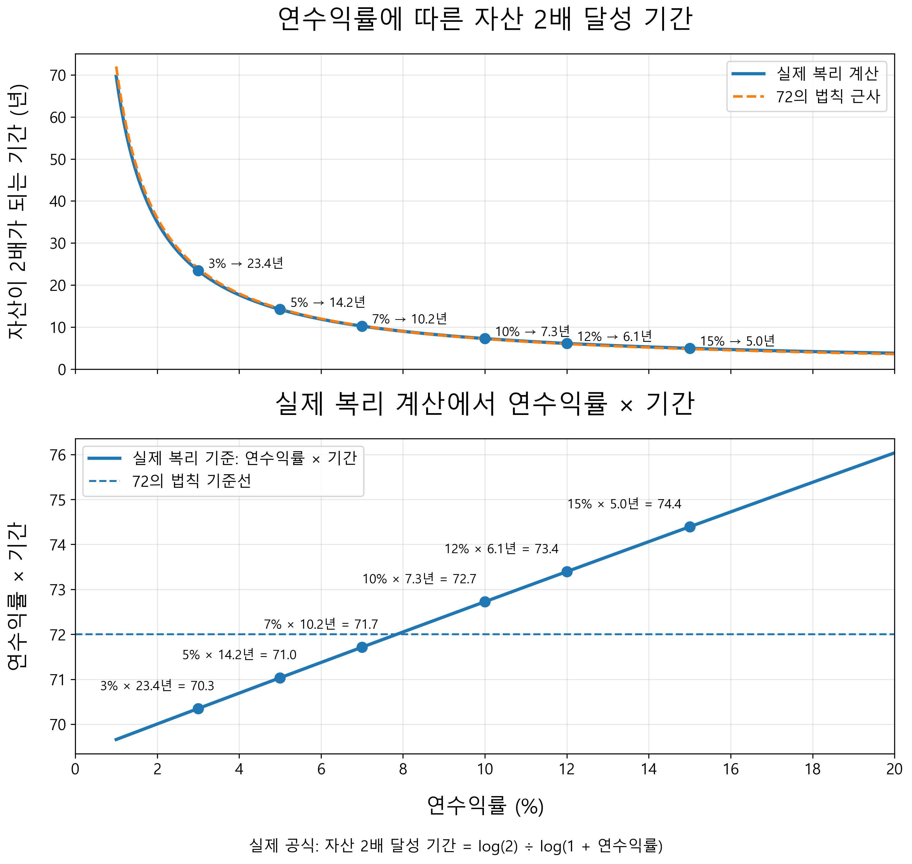
위쪽 그래프는 연수익률이 높아질수록 자산이 두 배가 되는 데 걸리는 시간이 얼마나 빠르게 줄어드는지를 보여준다. 연 3퍼센트 수익률에서는 23.4년이 걸리지만, 연 10퍼센트에서는 약 7.3년, 연 12퍼센트에서는 약 6.1년이면 자산이 두 배가 된다. 수익률이 조금만 달라져도 장기적으로는 자산이 불어나는 속도가 크게 달라진다는 점을 직관적으로 확인할 수 있다.
아래쪽 그래프는 72 법칙이 실제 복리 계산과 얼마나 가까운지를 보여준다. 72 법칙은 연수익률과 자산이 두 배가 되는 기간을 곱했을 때 대략 72가 된다는 경험적 법칙이다. 특히 연 8퍼센트 수익률에서는 자산이 두 배가 되는 기간이 약 9년으로, 8과 9를 곱하면 거의 72에 가깝다. 하지만 그보다 수익률이 낮거나 높아질수록 실제 복리 계산값은 72에서 조금씩 벗어난다. 그래도 여전히 편리하게 계산할 때 매우 유용하다.
만약 S&P500의 장기 평균 수익률을 약 10퍼센트로 본다면, 72 법칙에 따라 자산은 약 7.2년마다 두 배가 된다. 아무 공부도 안 하고 그저 인내만 하면 되는 투자치고는 결코 작은 성과가 아니다. 그런데 많은 사람들은 이 정도 수익률에도 만족하지 못한다. 자신이 가졌다고 생각하는 아주 작고 편향된 정보로 더 빠르게, 더 크게 벌고 싶어 한다. 그래서 남들이 잘 모르는 투자처를 찾고, 특별한 정보를 찾고, 고수익 상품을 찾는다.
누군가가 좋은 기회가 있다고 말하면 마음이 흔들리고, 일반인은 모르는 투자라는 말이 붙으면 더 솔깃해진다. 하지만 과도한 욕심은 언제나 투자를 망친다. 욕심은 판단을 흐리게 만들고, 위험을 작게 보이게 만들며, 남의 말에 쉽게 흔들리게 만든다. 더 벌 수 있을 것 같아서 팔지 못하고, 더 빨리 벌고 싶어서 무리하고, 남들이 벌었다는 말에 늦게 뛰어든다. 그러다 손실이 나면 원칙은 사라지고 감정만 남는다.
과도한 욕심을 버린다는 것은 꿈을 포기하라는 뜻이 아니다. 남보다 빨리 가려는 마음을 내려놓고, 끝까지 살아남을 수 있는 길을 선택하는 것이다. 투자 역시 생존과 비슷한 면이 많다. 내 상황을 객관적으로 판단하고 더 단단한 방식으로 부자가 되라는 뜻이다. 그 사실을 잊지 않을 때 우리는 비로소 시장 앞에서 평정심을 가질 수 있다.
3장에서는 투자에서 성공하기 위해 필요한 태도에 대해 이야기했다. 많은 사람들은 투자를 잘하려면 특별한 정보, 빠른 판단력, 남들이 모르는 기회를 가져야 한다고 생각한다. 하지만 나는 오히려 그 반대에 가깝다고 생각한다. 대부분의 일반인에게 투자에서 정말 중요한 것은 화려한 기술이 아니라 기본을 지키는 힘이고, 남보다 빨리 움직이는 능력이 아니라 오래 버티는 인내심이다.
먼저 투자에는 반드시 진입 장벽이 있다는 점을 살펴보았다. 돈이 되는 곳에는 쉽게 접근할 수 없는 이유가 있다. 부동산에는 자본의 장벽이 있고, 개별주에는 정보 해석의 장벽이 있으며, 장기 투자에는 인내의 장벽이 있다. 많은 사람들은 투자에서 정보가 가장 중요하다고 생각하지만, 실제로 더 어려운 것은 그 정보를 해석하고, 시장의 흔들림 속에서도 자신의 판단을 지켜내는 일이다. 결국 투자에서 넘어야 할 가장 큰 장벽은 시장이 아니라 나 자신일지도 모른다.
단타와 트레이딩의 현실도 마찬가지다. 차트를 보고 있으면 왠지 나도 가격의 흐름을 맞힐 수 있을 것처럼 느껴진다. 하지만 단기 매매는 생각보다 훨씬 어려운 일이다. 기업을 이해해야 하고, 수많은 정보 속에서 빠르게 판단해야 하며, 거래 비용과 세금, 그리고 감정의 흔들림까지 이겨내야 한다. 하루하루 시장을 이기려는 삶은 겉으로는 자유로워 보일지 몰라도, 실제로는 시장에 하루 종일 묶여 있는 고강도 노동에 가깝다. 대부분의 사람에게는 매일 시장을 맞히는 것보다 좋은 자산을 오래 보유하는 편이 훨씬 현실적인 선택일 수 있다.
개별주 투자 역시 쉽게 볼 일이 아니다. 주식을 산다는 것은 한 기업의 일부를 소유한다는 뜻이지만, 일반 투자자가 그 기업의 경영에 실질적으로 참여하기는 어렵다. 내부 정보는 제한되어 있고, 공개된 자료조차 제대로 해석하기 쉽지 않다. 여기에 테마주와 정치 관련주처럼 감정과 기대가 강하게 개입되는 종목까지 더해지면, 투자는 분석이 아니라 이야기에 베팅하는 일이 되기 쉽다. 내가 정말 기업을 보고 있는지, 아니면 내가 믿고 싶은 이야기를 따라가고 있는지 끊임없이 점검해야 한다.
금융 상품을 대할 때도 마찬가지다. 은행, 증권사, 보험사, 자산운용사가 권하는 상품이 모두 나쁘다는 뜻은 아니다. 예금, 펀드, ETF, 연금, 리츠 같은 상품들은 각자의 기능과 목적이 있다. 그러나 금융회사는 자선단체가 아니다. 그들이 상품을 만들고 판매하는 이유에는 언제나 수수료, 보수, 판매수당, 회사의 실적이 있다. 그러므로 투자 상품을 볼 때는 겉으로 보이는 수익률보다 그 뒤의 구조를 봐야 한다. 누가 돈을 버는지, 나는 어떤 위험을 지는지, 중간에서 빠져나가는 비용은 얼마인지 이해하지 못한다면, 나는 투자한 것이 아니라 판매된 것일 수 있다.
마지막으로 과도한 욕심을 버려야 한다는 점을 이야기했다. 투자를 하다 보면 주변의 성공담이 크게 들린다. 누군가는 몇 달 만에 큰돈을 벌었다고 하고, 누군가는 특정 종목으로 자산을 몇 배로 불렸다고 말한다. 하지만 사람들은 잘될 때만 이야기한다. 손실이 났을 때, 물려 있을 때, 잘못된 선택을 후회할 때는 조용해진다. 그래서 우리가 듣는 투자 이야기는 대부분 편향되어 있다. 그 편향에 흔들리면 평정심을 잃고, 평정심을 잃으면 원칙도 함께 사라진다.
S&P500은 이런 욕심을 조절하는 하나의 기준점이 될 수 있다. 수많은 전문가들도 장기적으로 시장 평균을 꾸준히 이기기 어렵다. 그렇다면 본업이 따로 있는 일반 투자자가 시장을 압도적으로 이기겠다고 생각하는 것은 매우 조심스러운 일이어야 한다. 시장의 평균이 시시해 보여도, 장기적으로 좋은 시장의 평균을 꾸준히 따라가는 것은 결코 약한 전략이 아니다. 오히려 오래 살아남을 수 있다는 점에서 가장 강력한 전략일 수 있다.
종합하자면 투자는 남을 이기는 게임이 아니라, 끝까지 살아남는 게임이라는 점이다. 더 빠르게 돈을 벌겠다는 욕심, 남들이 모르는 기회를 잡겠다는 조급함, 주변 사람의 성공담에 흔들리는 마음은 모두 우리를 위험한 방향으로 끌고 간다. 반대로 내가 이해할 수 있는 것에 투자하고, 감당할 수 있는 위험을 감수하며, 시간을 내 편으로 만드는 태도는 우리를 오래 버티게 해준다.
앞선 글들에서 나는 투자를 어렵게 만드는 여러 요소에 대해 이야기했다. 개별 기업을 분석하는 일은 쉽지 않고, 단타와 트레이딩은 높은 집중력과 감정 통제를 요구하며, 금융 상품에는 판매자의 이해관계가 숨어 있다. 또한 과도한 욕심은 투자자를 쉽게 무리하게 만든다. 그렇다면 평범한 개인 투자자는 어떻게 해야 할까. 나는 그 질문에 대한 가장 단순하면서도 강력한 대답이 시장 전체를 사는 것이라고 생각한다.
이 생각을 가장 설득력 있게 설명한 사람 중 한 명이 존 보글이다. 존 보글은 미국 자산운용사 뱅가드(Vanguard)의 창립자이자, 일반 투자자를 위한 인덱스 펀드 투자를 대중화한 인물이다. 그는 투자자가 시장을 이기려고 애쓰기보다, 낮은 비용으로 시장 전체를 보유하고 오래 기다리는 것이 훨씬 합리적이라고 주장했다. 그의 철학은 복잡하지 않다. 좋은 기업을 맞히려 하지 말고, 자본주의 전체의 성장에 올라타라는 것이다.
존 보글의 책 ≪모든 주식을 소유하라≫의 초반에는 아주 인상적인 비유가 나온다. ‘갓락스 가족’이라는 부유한 가족 이야기다. 이 가족은 미국의 모든 주식을 100퍼센트 소유하고 있다. 미국 기업들이 벌어들이는 이익, 배당, 성장의 열매는 모두 이 가족에게 돌아간다. 어떤 기업은 잘되고, 어떤 기업은 부진하겠지만, 전체로 보면 이 가족은 미국 기업 전체가 만들어내는 부를 그대로 누린다. 특별히 사고팔 것도 없다. 누군가를 이길 필요도 없다. 그저 전체를 보유하고 있으면 된다.
그런데 어느 날 이 가족에게 ‘도와주는 사람들’이 찾아온다. 그들은 전체를 들고 있는 것보다 더 나은 방법이 있다며 자신들이 도와주겠다고 나선다. 처음에는 그럴듯하게 들린다. 조금만 더 잘 고르면 남들보다 수익이 더 좋아질 것처럼 보인다. 남들보다 더 벌어야겠다는 욕심이 생긴 가족 구성원들은 서로 주식을 사고팔기 시작한다. 어떤 사람은 이기고, 어떤 사람은 진다. 하지만 가족 전체로 보면 여전히 같은 주식들을 가지고 있을 뿐이다. 달라진 것은 중간에서 수수료와 비용이 빠져나가기 시작했다는 점이다.
시간이 지나자 더 많은 조언자들이 나타난다. 매니저, 브로커, 컨설턴트, 세무 전문가들이 가족의 투자에 끼어든다. 그들은 더 나은 수익을 약속하지만, 그 과정에서 비용은 계속 늘어난다. 가족이 원래 온전히 누리던 기업의 이익 중 일부가 이제는 이 ‘도와주는 사람들’에게 흘러간다. 결국 가족 전체의 몫은 줄어든다. 이 비유가 말하는 바는 단순하다. 시장 전체가 만들어내는 수익은 정해져 있는데, 그 안에서 서로 사고팔고, 조언자를 끼우고, 비용을 지불할수록 투자자에게 남는 몫은 줄어든다는 것이다.
이 이야기는 투자에서 가장 중요한 사실을 보여준다. 모두가 시장을 이기려고 하지만, 투자자 전체는 시장 그 자체다. 누군가가 시장보다 더 벌면, 누군가는 시장보다 덜 벌어야 한다. 그런데 여기에 수수료, 세금, 거래 비용이 붙으면 전체 투자자의 평균 수익은 시장 수익률보다 낮아진다. 그래서 존 보글은 시장을 이기려는 게임이 비용을 고려하면 패자의 게임이 되기 쉽다고 보았다. 반대로 낮은 비용으로 시장 전체를 보유하는 인덱스 펀드는 투자자가 시장이 주는 몫을 최대한 온전히 가져갈 수 있게 해준다.
물론 개별 주식은 잘될 수도 있다. 어떤 회사는 몇 년 만에 몇 배, 몇십 배 성장하기도 한다. 그런 회사를 일찍 발견해 오래 보유한 투자자는 큰 수익을 얻을 수 있다. 하지만 반대의 가능성도 있다. 기업은 경쟁에서 밀릴 수 있고, 경영에 실패할 수 있으며, 산업 변화에 적응하지 못할 수 있다. 심한 경우 상장폐지될 수도 있다. 개별 주식에 투자한다는 것은 그 회사의 성장을 온전히 가져갈 수 있는 대신, 그 회사가 실패할 위험도 함께 떠안는 일이다. 또한 3장에서도 다뤘지만 어떤 기업이 잘될지 판단하는 일에는 막대한 시간과 노력이 요구된다.
하지만 시장 전체를 사는 방식은 다르다. 지수를 추종하는 인덱스 펀드는 한 번 정해진 기업을 영원히 붙잡고 있는 것이 아니다. 기업의 규모와 조건이 달라지면 구성 종목도 바뀐다. 성장하고 영향력이 커진 기업은 들어오고, 경쟁력을 잃거나 기준에 맞지 않게 된 기업은 빠져나간다. 즉, 시장 전체를 사는 방식 안에는 자연스러운 교체 구조가 들어 있다. 물론 이것이 손실이 전혀 없다는 뜻은 아니다. 시장 전체가 하락하면 인덱스 펀드도 함께 하락한다. 하지만 적어도 한 기업이 망해서 내 투자 전체가 무너질 위험은 크게 줄어든다.
시장 전체를 산다는 것은 일부 욕심을 내려놓는 일이기도 하다. 개별 주식에 투자하면 운이 좋을 때 특정 기업의 폭발적인 성장을 온전히 누릴 수 있다. 하지만 어떤 기업이 그렇게 될지 미리 아는 것은 어렵다. 반대로 인덱스 펀드를 사면 특정 기업 하나의 모든 열매를 독차지할 수는 없다. 대신 여러 기업이 만들어내는 열매를 고르게 나눠 받을 수 있다. 어떤 기업은 크게 성장하고, 어떤 기업은 사라지며, 또 다른 기업은 새롭게 시장의 중심으로 들어온다. 인덱스 펀드는 계란을 한 바구니에 담지 말라는 분산 투자의 철학을 자동으로 실행토록 해준다.
이것이 시장 전체를 사는 투자의 핵심이다. 나는 어떤 기업이 최후의 승자가 될지 정확히 모른다. 하지만 자본주의가 계속 작동하고, 좋은 기업들이 이익을 내고, 새로운 기업들이 성장하며, 시장이 장기적으로 발전할 것이라고 믿는다면, 굳이 단 하나의 승자를 맞히려고 애쓸 필요가 없다. 승자를 맞히는 대신, 승자들이 포함될 수밖에 없는 시장 전체를 보유하면 된다.
시장 전체를 사라는 말은 게으르게 투자하라는 뜻이 아니다. 오히려 자신의 능력과 한계를 냉정하게 본 뒤, 가장 상식적인 선택을 하라는 뜻이다. 투자에서 상식은 때로 지루하다. 낮은 비용, 넓은 분산, 장기 보유. 이 세 가지는 화려하지도 않고, 남에게 자랑하기도 어렵다. 하지만 장기적으로는 이 단순한 원칙이 많은 복잡한 전략보다 강력할 수 있다.
나는 이것이야말로 투자에서 말하는 상식에 가장 가까운 길이라고 생각한다. 존 보글의 ≪모든 주식을 소유하라≫의 영어 원제 또한 ≪투자 상식에 관한 작은 책 (Little Book of Common Sense Investing)≫이다. 남보다 더 똑똑해지려 하기보다, 시장 전체의 힘을 인정하는 것. 최고의 종목을 맞히려 하기보다, 좋은 기업들이 자라나는 밭 전체를 소유하는 것. 그리고 조급하게 사고팔기보다, 그 밭이 오랜 시간 열매 맺기를 기다리는 것. 그것이 존 보글이 말한 상식적인 투자이고, 평범한 개인 투자자가 오래 살아남을 수 있는 가장 현실적인 방법이다.
앞선 글에서 나는 시장 전체를 사라고 말했다. 개별 기업 하나를 고르기보다, 시장 전체의 성장에 올라타는 것이 평범한 개인 투자자에게 더 현실적인 방법일 수 있다고 이야기했다. 그렇다면 여기서 자연스럽게 이런 질문이 생긴다. 시장 전체를 산다는 것은 실제로 어떻게 가능한가. 미국의 수백 개 기업을 일일이 사야 할까. 애플, 마이크로소프트, 엔비디아, 아마존, 구글 같은 기업을 하나하나 골라서 비율까지 맞춰야 할까. 그 일을 개인이 직접 하기는 어렵다. 기업은 너무 많고, 비율을 맞추기도 어렵고, 시간이 지나면서 어떤 기업은 커지고 어떤 기업은 작아진다. 새로운 기업이 성장하고, 기존 기업이 밀려나기도 한다. 이 모든 변화를 개인이 직접 따라가며 관리하기는 쉽지 않다. 그래서 등장하는 것이 ETF다.
ETF는 Exchange Traded Fund의 줄임말이다. 우리말로는 보통 상장지수펀드라고 부른다. 이름을 풀어보면 의미가 조금 더 분명해진다. ‘Exchange Traded’는 거래소에서 주식처럼 사고팔 수 있다는 뜻이고, ‘Fund’는 여러 자산을 한 바구니에 담아놓은 펀드라는 뜻이다. 즉 ETF는 여러 주식이나 자산을 묶어놓은 펀드이면서, 동시에 주식시장에 상장되어 있어 주식처럼 쉽게 사고팔 수 있는 상품이다.
예를 들어 S&P500을 추종하는 ETF를 산다고 해보자. 그러면 나는 미국의 대표적인 대형 기업 500개에 한 번에 투자하는 효과를 얻는다. 내가 애플을 몇 주 사고, 마이크로소프트를 몇 주 사고, 엔비디아를 몇 주 사는 식으로 직접 계산할 필요가 없다. ETF 한 주를 사는 것만으로 그 안에 들어 있는 여러 기업을 일정한 비율로 함께 보유하게 된다. 여기서 중요한 개념이 지수 추종이다. 지수란 시장의 움직임을 보여주기 위해 여러 종목을 일정한 기준으로 묶어 만든 숫자다. S&P500, 나스닥100, 코스피200 같은 것들이 대표적인 지수다. 지수 추종이란 ETF가 이런 지수의 움직임을 최대한 비슷하게 따라가도록 설계되어 있다는 뜻이다.
S&P500은 미국을 대표하는 500개 대형 기업으로 구성된 지수다. 단순히 500개 기업에 똑같이 나누어 투자하는 방식은 아니다. 일반적으로 S&P500은 시가총액 가중 방식을 따른다. 시가총액이란 회사의 전체 주식 가치다. 쉽게 말해 시장에서 그 회사가 얼마짜리 회사로 평가받고 있는지를 나타낸다. 주가에 발행 주식 수를 곱해 계산한다. 그래서 시가총액이 큰 기업일수록 S&P500 안에서 차지하는 비중도 커진다. 예를 들어 애플이나 마이크로소프트처럼 시가총액이 큰 기업은 S&P500 안에서 큰 비중을 차지한다. 반대로 S&P500에 포함되어 있더라도 상대적으로 작은 기업은 비중이 작다.
따라서 잘나가는 기업이 커질수록 자연스럽게 그 비중이 커지고, 경쟁력이 약해져 지수에서 비중이 쪼그라든다. 또한 S&P500에 포함된 기업들은 고정이 아니다. 새로운 강자가 등장하면 언젠가 지수에 들어올 수 있고, 예전의 강자가 힘을 잃으면 비중이 줄고 지수에서 제외될 수 있다. 개인이 직접 모든 기업을 분석해 교체하지 않아도, 지수 자체가 시장의 변화를 어느 정도 반영한다. 또한 S&P500과 같은 대표 인덱스 펀드에 포함된 기업들을 분석하는 것만으로도 해당 국가가 어떤 산업에 집중되어 있는지 알 수 있다.
기존의 전통적인 펀드는 여러 투자자의 돈을 모아 펀드매니저가 직접 어떤 종목을 사고팔지 판단하며 운용한다. 이 회사는 앞으로 좋아질 것 같으니 사고, 저 회사는 전망이 나빠 보이니 팔고, 시장 상황에 따라 비중을 조절한다. 말 그대로 사람이 적극적으로 운용하는 방식이다. 반면 많은 ETF, 특히 대표적인 인덱스 ETF는 정해진 지수를 따라가는 데 집중한다. 그래서 ETF는 대체로 구조가 단순하고 투명하다. 내가 S&P500 ETF를 산다면 대략 어떤 기업들에 투자하는지 알 수 있고, 나스닥100 ETF를 산다면 기술주 중심의 대형 성장기업에 투자한다는 것도 알 수 있다.
ETF에는 종류가 매우 많다. 가장 대표적인 것은 시장 전체를 따라가는 ETF다. 미국 시장을 대표하는 S&P500 ETF, 미국 기술주 중심의 나스닥100 ETF, 한국 시장을 대표하는 코스피200 ETF 같은 것들이 여기에 해당한다. 이런 ETF는 특정 기업 하나가 아니라 시장이나 특정 지수 전체에 투자한다. 산업별 ETF도 있다. 반도체 ETF, 2차전지 ETF, 헬스케어 ETF, 금융 ETF, 에너지 ETF처럼 특정 산업에 투자하는 상품이다. 예를 들어 반도체 산업이 장기적으로 성장할 것이라고 생각하지만, 삼성전자와 SK하이닉스 중 무엇을 살지, 혹은 엔비디아와 AMD 중 무엇을 살지 고르기 어렵다면 반도체 ETF를 통해 산업 전체에 투자할 수 있다. 특정 기업을 고르는 부담은 줄이고, 그 산업의 성장에 참여하는 방식이다. 국가별 ETF, 자산별 ETF도 존재한다.
주식 시장에서는 지수인 S&P500이나 나스닥100, 코스피200를 추종하는 ETF 상품을 매매할 수 있다. QQQ는 나스닥100을 추종하는 대표적인 ETF 중 하나이고, VOO나 SPY, IVV 같은 것은 S&P500을 추종하는 ETF다. 코스피200은 지수이고, KODEX 200이나 TIGER 200 같은 것은 코스피200을 추종하는 ETF다. 지수는 시장을 측정하는 기준이고, ETF는 그 기준을 실제 투자 상품으로 만든 것이라고 이해하면 된다.
ETF의 장점은 분명하다. 한 종목만 사도 여러 기업이나 자산에 나누어 투자하는 효과를 얻을 수 있고, 어떤 지수나 산업을 따라가는지 알면 투자 대상이 비교적 명확하다. 그러나 ETF를 더욱 강력하게 만드는 가장 큰 요소 중 하나는 장기 투자에 적합하다는 점이다. 개별 주식을 장기 보유할 때 가장 큰 걱정은 과연 이 기업이 10년, 20년, 혹은 그보다 더 오래 살아남을 수 있는지다. 아무리 좋은 기업처럼 보여도 경영진의 잘못된 판단, 산업 구조의 변화, 기술의 발전, 경쟁사의 등장처럼 우리가 통제할 수 없는 이유로 기업은 흔들릴 수 있다. 심한 경우 시장에서 사라질 수도 있다. 하지만 앞서 언급했듯, ETF는 정해진 기준에 따라 기업이 새로 들어오고 빠지는 구조를 가지고 있다. 경쟁력을 잃은 기업은 비중이 줄거나 제외되고, 새롭게 성장한 기업은 편입될 수 있다.
결국 ETF는 평범한 개인 투자자에게 시장 전체를 살 수 있게 해주는 매우 강력한 도구다. 과거에는 여러 기업에 분산투자하려면 많은 돈과 노력이 필요했다. 하지만 이제는 ETF 한 주만으로도 미국 대형주, 기술주, 한국 시장, 특정 산업, 채권, 금 같은 다양한 자산에 투자할 수 있다. 이 점에서 ETF는 투자자의 선택지를 넓혀준 혁신적인 상품이다. 그렇다 하더라도 ETF는 투자를 쉽게 만들어주는 도구이지, 생각하지 않아도 되게 만들어주는 마법은 아니다.
이전 글에서 ETF가 무엇인지 살펴보았다. ETF는 여러 주식이나 자산을 한 바구니에 담아놓은 펀드이면서, 동시에 주식처럼 거래소에서 사고팔 수 있는 상품이다. 그렇다면 이제 자연스럽게 이런 질문이 생긴다. ETF가 좋은 도구라는 것은 알겠는데, 그 많은 ETF 중에서 무엇을 골라야 할까. 이 글과 앞으로의 글에서는 주로 미국의 ETF를 이야기한다. 그 이유는 2장에서도 보았듯이 돈이, 그리고 더 중요한 인재가 여전히 미국으로 몰리고 있기 때문이다.
ETF를 고를 때 가장 먼저 해야 할 일은 무엇을 살 것인가보다 무엇을 피할 것인가를 정하는 것이다. 투자 초보자나 중장기 투자를 하려는 사람이라면 특히 그렇다. 시장에는 ETF가 너무나도 많다. 인공지능 ETF, 반도체 ETF, 2차전지 ETF, 고배당 ETF, 월배당 ETF, 커버드콜 ETF, 레버리지 ETF, 인버스 ETF까지 종류가 끝이 없다. 하지만 선택지가 많다는 것은 자유이기도 하지만, 동시에 실수할 가능성이 많다는 뜻이기도 하다. 가장 먼저 피해야 할 것은 인버스 ETF다. 인버스는 말 그대로 어떤 지수의 움직임을 거꾸로 따라가도록 설계된 ETF다. 예를 들어 S&P500이 하루 동안 1퍼센트 하락하면, S&P500 인버스 ETF는 대략 1퍼센트 상승하도록 만들어진다. 반대로 S&P500이 하루 동안 1퍼센트 오르면, 그 인버스 ETF는 대략 1퍼센트 하락한다. ProShares의 SH는 S&P500의 하루 수익률을 -1배로 따라가려는 ETF이고, PSQ는 나스닥100의 하루 수익률을 -1배로 따라가려는 ETF다. 문제는 이런 상품이 장기 투자에 맞지 않는다는 점이다. 하루 이틀 시장 하락에 베팅하는 도구로는 쓰일 수 있지만, 몇 년씩 들고 가며 자산을 불리는 도구로 보기 어렵다. 장기적으로 주식시장이 성장한다고 믿고 투자하는 사람이라면, 시장이 떨어져야 돈을 버는 구조에 오래 머무르는 것은 애초의 투자 철학과 맞지 않는다.
그다음으로 살펴볼 것은 가장 기본적인 시장 대표 ETF다. 미국 시장을 대표하는 S&P500 ETF가 여기에 해당한다. VOO, SPY, IVV는 모두 S&P500을 추종하는 대표적인 ETF다. VOO는 S&P500 지수의 투자 성과를 추종하며, 지수와 같은 시가총액 비중으로 모든 종목을 보유하는 방식을 사용한다고 설명한다. SPY 역시 S&P500 지수의 성과를 가능한 한 가깝게 복제하는 것을 목표로 한다. S&P500보다 더 넓게 미국 시장 전체를 사고 싶다면 VTI 같은 ETF도 있다.
그다음 많은 사람들이 주목하는 것이 QQQ다. QQQ는 나스닥100 지수를 추종하는 대표적인 ETF다. 나스닥100은 나스닥에 상장된 대형 비금융 기업 100개로 구성되어 있고, 기술주와 혁신 기업의 비중이 높다. QQQ를 통해 기술 혁신, 인공지능, 클라우드, 반도체, 플랫폼 기업 등 현대 경제를 이끄는 성장 기업에 집중적으로 투자할 수 있다. 실제로 지난 수십 년 동안 미국의 대형 기술 기업들은 시장을 이끄는 중요한 역할을 해왔다. 앞으로도 AI와 디지털 전환이 계속된다면 QQQ는 강력한 선택지일 수 있다. 하지만 QQQ에는 약점도 있다. 특정 산업과 성장주에 대한 비중이 높기 때문에 S&P500보다 변동성이 클 수 있다.
AI 시대를 생각하면 반도체 ETF도 눈에 들어온다. AI가 발전할수록 데이터를 처리하는 칩, 서버, 장비, 설계 소프트웨어의 중요성은 커진다. 반도체 산업에 관심이 있지만 엔비디아, AMD, TSMC, ASML, 브로드컴 중 무엇을 고를지 어렵다면 반도체 ETF는 좋은 대안이 될 수 있다. 예를 들어 SOXX는 미국 상장 반도체 기업들로 구성된 지수를 추종하는 ETF이고, SMH는 반도체 생산과 장비 관련 기업들의 성과를 추종하는 ETF다.
이 외에도 ETF의 종류는 셀 수 없을 정도로 많다. 하지만 이를 일일이 열거하는 건 불필요하다. 다만 배당 ETF에 대해서는 잠시 짚고 가면 좋다. 배당은 기업이 벌어들인 이익의 일부를 주주에게 나누어주는 돈이다. 배당 ETF는 이런 배당을 많이 주거나 꾸준히 주는 기업들을 묶어놓은 상품이다. 투자자에게 현금흐름을 만들어준다는 점에서 분명 매력적이고, 특히 은퇴를 앞두었거나 정기적인 현금 수입이 필요한 사람에게는 심리적 안정감을 줄 수 있다. 하지만 나는 개인적으로 배당 ETF를 그다지 선호하지 않는다. 좋은 기업이 꾸준히 이익을 내고 그 일부를 주주에게 돌려주는 것은 건강한 일이지만 장기적으로 자산을 키우는 단계에 있는 투자자라면, 배당을 받는 것보다 그 돈이 기업 안에서 다시 성장에 쓰이거나 주가 상승으로 반영되는 편이 더 효율적일 수 있다고 생각한다.
나는 앞으로도 기술이 인류의 삶을 바꾸고 산업의 중심을 이끌어갈 것이라고 믿기에, 개인적으로 나스닥 추종 ETF를 좋게 본다. 인공지능, 반도체, 클라우드, 플랫폼, 소프트웨어 같은 분야는 이미 세계 경제의 핵심이 되었고, 앞으로도 그 영향력은 쉽게 줄어들지 않을 가능성이 크다. 물론 S&P500도 충분히 강력한 ETF다. 지금까지 꾸준히 투자의 기준이 되어 온 것만 봐도 알 수 있다. 다만 지금까지의 흐름을 보면 나스닥100은 S&P500보다 역사적으로 더 높은 상승률을 보여준 시기가 많았다. 그래서 시장의 평균에 충실하게 따라가고 싶다면 S&P500이 좋은 선택이고, 기술의 성장을 믿고 한 발 더 앞서가고 싶다면 QQQ 같은 나스닥100 ETF를 고려해볼 수 있다.
어떤 ETF를 골라야 할지에는 정답이 없다. 하지만 S&P500이나 나스닥100처럼 오랜 기간 성과를 충분히 입증한 지수를 추종하는 ETF로 시작하는 것이 여러모로 합리적인 선택임은 분명하다.
주식 투자를 하는 사람들이 가장 두려워하는 것은 어쩌면 수익률 하락보다 상장폐지일지 모른다. 주가가 떨어지는 것은 시간이 지나면 회복될 가능성이라도 있다. 하지만 상장폐지는 다르다. 상장폐지란 기업의 주식이 거래소에서 퇴출되어 더 이상 정상적으로 거래되지 못하는 것을 말한다. 주가가 일정 기준 아래로 오래 머물거나, 시가총액과 주주 수 요건을 충족하지 못하거나, 재무제표를 제때 제출하지 못하거나, 공시와 지배구조 기준을 위반하는 경우 등이 그 이유가 될 수 있다.
상장폐지가 된다고 해서 주주의 권리가 곧바로 사라지는 것은 아니다. 경우에 따라 장외시장에서 거래될 수도 있고, 회사가 회복할 가능성이 완전히 사라지는 것도 아니다. 하지만 현실적으로는 유동성이 크게 줄고, 정보를 얻기도 어려워지며, 거래 비용도 커진다. 특히 회사가 파산 절차에 들어가면 보통주 주주의 몫은 거의 남지 않을 수 있다. 그래서 투자자들은 상장폐지된 주식을 두고 흔히 '종이 쪼가리가 되었다'고 표현한다.
기업이 위기에 빠지는 이유는 다양하다. 계속된 적자와 부채 부담으로 재무 상태가 악화될 수도 있고, 회계 부정이나 공시 위반으로 시장의 신뢰를 잃을 수도 있다. 산업 구조가 바뀌거나, 경쟁자가 예상보다 빠르게 성장하거나, 정부 규제와 정치적 환경이 특정 산업을 흔들 수도 있다. 때로는 오너나 경영진의 사생활, 부적절한 발언, 도덕적 문제, 무리한 확장, 내부 갈등 같은 지배구조 문제가 주가에 큰 충격을 주기도 한다.
이것이 개별 주식 투자의 어려움이다. 내가 아무리 열심히 분석해도 모든 위험을 미리 알 수는 없다. 재무제표를 읽고, 산업 전망을 공부하고, 경영진의 인터뷰를 찾아보아도 회사 내부에서 실제로 무슨 일이 벌어지고 있는지 전부 알 수는 없다. 더구나 기업의 위기는 항상 숫자에서만 시작되지 않는다. 한 번의 잘못된 판단, 한 번의 스캔들, 한 번의 규제 변화, 한 번의 기술 변화가 회사를 완전히 다른 방향으로 밀어 넣을 수 있다.
ETF는 이 위험을 상당 부분 줄여준다. ETF는 여러 기업을 한꺼번에 담고 있기 때문이다. 특정 기업 하나에 투자했다면 그 기업의 위기가 내 투자 전체를 흔들 수 있다. ETF에 투자했다면 한 기업의 실패가 전체에 미치는 영향은 제한적이다. 나머지 수백 개 기업이 함께 포트폴리오를 구성하고 있기 때문이다. 또한 지수를 추종하는 ETF는 정해진 기준에 따라 구성 종목을 바꾼다. 성장한 기업은 새롭게 들어오고, 경쟁력을 잃은 기업은 비중이 줄거나 지수에서 빠질 수 있다. 물론 상장폐지가 된 기업들도 당연히 ETF에서 빠지게 된다.
장기적으로 보면 한 해의 성과보다 중요한 것은 오랜 기간 일관된 성과를 냈는가이다. 하노 백은 ≪부자들의 생각법≫에서 펀드매니저의 수익률을 볼 때 특정한 한 해만 보아서는 안 된다고 말한다. 어떤 펀드매니저는 특정 해에 놀라운 수익률을 기록할 수 있다. 운 좋게 시장의 흐름을 잘 탔을 수도 있고, 특정 종목에 집중한 결과가 크게 맞아떨어졌을 수도 있다. 하지만 중요한 것은 그 성과를 여러 해 동안 반복할 수 있느냐다.
앞서 3.5장에서 살펴봤듯이 펀드 매니저라도 시장을 장기적으로 이기는 일은 쉽지 않다. 이 자료가 말하는 바는 단순하다. 단기적으로 시장을 이기는 사람은 있을 수 있다. 하지만 그 성과를 오랫동안 반복하는 것은 전혀 다른 문제다. 상승장에서는 운 좋게 특정 종목을 잘 고른 사람이 천재처럼 보일 수 있다. 그러나 시간이 길어질수록 우연의 힘은 약해지고, 비용과 일관성의 영향은 커진다. 장기 투자에서 중요한 것은 특정한 해의 승리가 아니라 오래 살아남는 구조다.
과거의 수익률만 보고 미래를 예측하는 것도 조심해야 한다. 특히 역사가 짧은 회사나 자산일수록 더욱 그렇다. 비트코인이나 테슬라처럼 과거에 폭발적인 상승률을 보인 자산을 보면 앞으로도 같은 일이 반복될 것처럼 느껴진다. 하지만 가격에는 이미 사람들의 기대와 실망이 반영되어 있다. 앞으로도 성장할 수는 있지만, 과거처럼 같은 속도로 오를 것이라고 기대하는 것은 별개의 문제다.
반면 잘 알려진 지수를 추종하는 ETF는 이런 불확실성을 어느 정도 줄여준다. 첫째, 지수는 개별 기업보다 긴 역사를 가진 경우가 많다. S&P500은 현대적인 형태로 1957년에 출범했고, 이후 미국 대형주 시장을 대표하는 지표로 사용되어 왔다. 더 넓은 장기 주식시장 데이터까지 함께 보면, 특정 기업 하나보다 훨씬 긴 기간의 시장 흐름을 살펴볼 수 있다. 긴 기록이 있다는 것은 단순히 오래되었다는 뜻이 아니다. 고금리, 저금리, 인플레이션, 경기 침체, 버블, 전쟁, 금융위기, 기술 혁신 같은 다양한 환경을 지나왔다는 뜻이다.
둘째, 지수 투자는 사람의 판단을 줄여준다. 인간은 쉽게 흔들린다. 잘될 때는 더 사고 싶고, 떨어질 때는 팔고 싶어진다. 최근에 많이 오른 종목은 더 좋아 보이고, 오래 부진한 종목은 끝난 것처럼 느껴진다. 하지만 지수 추종 ETF는 매번 내가 어떤 기업을 사고팔지 결정하지 않아도 된다. 정해진 규칙과 기준을 따라간다. 장기 투자에서 이것은 큰 장점이다. 많은 실패는 잘못된 상품보다 잘못된 행동에서 나오기 때문이다.
그래서 ETF는 장기 투자에 적합하다. ETF는 개별 기업의 상장폐지 위험을 분산시키고, 지수의 자동 교체 구조를 통해 시장의 변화를 반영하며, 긴 역사와 풍부한 데이터를 바탕으로 더 신뢰할 수 있는 판단을 가능하게 한다. 무엇보다 투자자가 매번 모든 결정을 내리지 않아도 되게 해준다.
결국 장기 투자자는 한 기업의 생존을 맞히려 하기보다, 시장 전체의 생존과 성장에 올라타야 한다. 어떤 기업은 사라지고, 어떤 기업은 새롭게 등장할 것이다. 하지만 자본주의가 계속 작동하고, 좋은 기업들이 계속 가치를 만들어낸다면, 시장 전체는 그 변화를 흡수하며 앞으로 나아간다. 내가 모든 기업의 미래를 맞힐 수 없다면, 미래의 승자들이 포함될 수밖에 없는 시장 전체를 보유하는 편이 더 현명하다. ETF는 바로 그 흐름에 올라탈 수 있게 해주는 도구다.
장기적 자산 투자라는 점에서 부동산을 빼놓을 수 없다. 한국에서 부동산은 단순한 투자 대상이 아니라, 오랫동안 가장 익숙하고 강력한 자산 형성 수단이었다. 실제로 많은 사람들이 집을 통해 자산을 만들었고, 특히 서울의 핵심 지역 아파트는 긴 시간 동안 놀라운 가격 상승을 보여주었다. 그래서 주식, 특히 ETF에 투자하는 이야기를 하면 자연스럽게 부동산에 투자하는 것이 더 낫지 않나 하는 질문이 따라온다.
이 질문에 답하려면 비교의 기준을 먼저 정해야 한다. 당신이 남들이 모르는 알짜배기 정보를 알고 있을 수도 있다. 앞으로 개발될 지역을 미리 알고 있거나, 남들보다 좋은 가격에 매수할 기회를 잡을 수도 있다. 혹은 이미 마용성처럼 많은 사람들이 선호하는 지역의 아파트를 보유하고 있을 수도 있다. 이런 경우라면 개인의 실제 수익률은 평균보다 훨씬 높을 수 있다.
하지만 이 글에서 비교하려는 것은 특정 개인의 예외적인 사례가 아니다. 부동산에서도 좋은 지역과 나쁜 지역이 있고, 주식에서도 좋은 종목과 나쁜 종목이 있다. 마용성의 아파트와 S&P500을 비교하는 것은 최근의 엔비디아와 전국 아파트 평균을 비교하는 것만큼이나 공정하지 않을 수 있다. 따라서 보다 객관적으로 보기 위해서는 서울 부동산 전체의 평균적인 흐름과 미국 S&P500의 장기 수익률을 비교하는 편이 더 적절하다.
물론 현실의 투자는 훨씬 복잡하다. 부동산을 살 때는 취득세와 중개수수료가 들고, 보유하는 동안에는 재산세와 종합부동산세가 발생할 수 있다. 매도할 때는 양도소득세도 고려해야 한다. 반대로 주식에도 ETF 운용보수, 배당소득세, 양도소득세, 환율 변동 같은 요소가 있다. 하지만 여기서는 큰 흐름을 보기 위한 단순 비교를 해보려 한다. 세금과 거래비용은 제외하고, 서울 주택은 연 6퍼센트 상승하고, S&P500 ETF는 배당금을 재투자해 연 10퍼센트 상승한다고 가정해보자.
부동산의 경우에는 10억 원짜리 주택을 산다고 가정한다. 이때 자기 돈은 40퍼센트인 4억 원을 넣고, 나머지 60퍼센트인 6억 원은 대출을 받는다고 하자. 그리고 집을 사는 경우 대출 이자를 내야 하고, 주식을 사는 경우 월세를 내야 한다. 여기서는 단순화를 위해 대출 이자는 집에서 발생하는 월세와 같다고 본다. 집 또한 대출 원금은 30년에 걸쳐 균등하게 상환한다고 가정한다. 이렇게 하면 부동산은 단순히 집값 전체만 보는 것이 아니라, 집값에서 아직 갚지 않은 대출금을 뺀 순자산으로 계산할 수 있다. S&P500 ETF는 같은 자기자본 4억 원을 매년 10퍼센트씩 불리는 구조로 본다.
즉 비교식은 다음과 같다.
부동산 순자산 = 10억 × (1.06)^n - 남은 대출금 S&P500 ETF 자산 가치 = 4억 × (1.10)\^n
여기서 n은 투자 기간(년)이며, 남은 대출금은 6억 원을 30년에 걸쳐 균등하게 갚는다고 단순화했다. 즉 n년 후 남은 대출금은 6억 × (30 - n) / 30으로 계산한다.
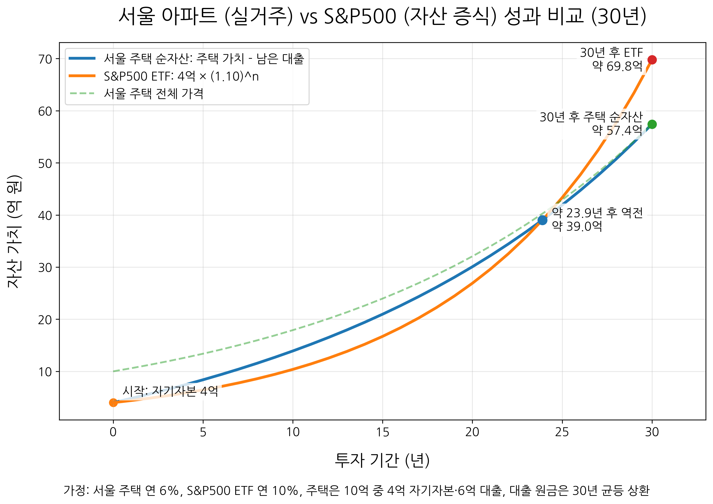
그래프를 보면 두 투자는 모두 자기자본 4억 원에서 출발한다. 부동산은 10억 원짜리 집을 보유하지만, 그중 6억 원은 은행 돈이기 때문에 처음 순자산은 4억 원이다. S&P500 ETF 역시 처음 투자금은 4억 원이다. 초반에는 부동산의 순자산 증가 속도가 상당히 빠르다. 이유는 두 가지다. 첫째, 집값 상승은 4억 원이 아니라 10억 원짜리 자산 전체에 적용된다. 둘째, 시간이 지나면서 대출 원금이 줄어들기 때문에 순자산은 집값 상승분과 원금 상환 효과를 함께 반영한다. 이것이 부동산이 가진 강력한 장점이다. 적은 자기자본으로 더 큰 자산을 보유하고, 시간이 지나며 부채를 줄여가면서 순자산을 키울 수 있다.
하지만 시간이 길어질수록 S&P500 ETF의 복리 효과도 강하게 나타난다. 서울 주택이 연 6퍼센트씩 상승하고, S&P500 ETF가 연 10퍼센트씩 상승한다면, 수익률 차이는 시간이 지날수록 누적된다. 그래프에서는 약 24년 전후가 되면 S&P500 ETF의 가치가 서울 주택의 순자산을 넘어서는 모습을 확인할 수 있다. 처음에는 부동산의 레버리지 효과와 원금 상환 효과가 강하게 작용하지만, 시간이 충분히 길어지면 더 높은 수익률의 복리 효과가 그 격차를 따라잡는 것이다.
이 비교가 말해주는 바는 단순하다. 부동산은 레버리지와 원금 상환의 힘이 강하고, S&P500 ETF는 장기 수익률과 복리의 힘이 강하다. 부동산은 4억 원으로 10억 원짜리 자산을 보유할 수 있다는 점에서 큰 장점이 있다. 반면 S&P500 ETF는 처음부터 4억 원만 투자되기 때문에 초반에는 상대적으로 불리해 보일 수 있다. 그러나 연 10퍼센트라는 수익률이 오랜 기간 유지된다면, 시간이 지날수록 복리의 힘이 커지고 결국 부동산의 초기 레버리지 효과를 넘어설 수 있다. 부동산 보유자라면 이 차이가 크게 벌어지는 10년에서 20년 사이의 구간을 자산 재배분 시점으로 검토해 볼 수도 있겠다.
혹자는 이렇게 물을 수도 있다. "하지만 부동산은 30년이 지나면 결국 내 집이 되지 않느냐." 맞는 말이다. 대출을 모두 갚고 나면 집은 온전히 내 자산으로 남는다. 게다가 그 집을 세놓으면 월세를 받을 수도 있다. 실거주한다면 매달 월세나 전세 비용을 내지 않아도 되는 효과도 있다. 부동산이 가진 장점은 분명하다.
하지만 주식도 마찬가지다. 30년이 지나면 주식이 사라지는 것이 아니다. S&P500 ETF 역시 그동안 성장한 가치 그대로 남아 있다. 그리고 배당을 지급하는 ETF라면 배당을 통해 월세와 비슷한 현금흐름을 만들 수도 있다. 배당을 재투자하면 자산을 더 크게 키울 수 있고, 필요할 때는 일부를 매도해 현금흐름을 만들 수도 있다. 즉, 부동산만 시간이 지나 자산으로 남는 것이 아니다. 좋은 주식 자산도 시간이 지나면 더 큰 자산으로 남는다.
이러한 단순화된 시뮬레이션으로 강조하고 싶은 것은 부동산만이 유일한 답은 아니라는 점이다. 많은 사람들은 부동산을 가장 안정적이고 확실한 자산으로 생각한다. 실제로 한국에서 부동산은 오랫동안 강력한 자산 형성 수단이었다. 하지만 미국 S&P500과 같은 넓은 시장에 장기 투자하는 방식 역시 충분히 강력한 선택지다. 특히 긴 시간 동안 꾸준히 투자할 수 있다면, 복리의 힘은 생각보다 훨씬 크다.
4장에서 우리는 평범한 개인 투자자가 장기적으로 자산을 키우기 위해 어떤 선택을 해야 하는가라는 주제를 다루었다. 개별 주식을 고르고, 시장을 예측하고, 남보다 더 좋은 정보를 찾아 움직이는 방식은 분명 매력적으로 보일 수 있다. 하지만 앞선 장들에서 살펴보았듯이 그 길은 결코 쉽지 않다. 기업을 분석하는 일은 어렵고, 정보에는 한계가 있으며, 사람의 감정은 쉽게 흔들린다. 그래서 나는 그 대안으로 시장 전체를 사는 방법을 이야기했다.
시장 전체를 산다는 것은 단 하나의 기업을 맞히려는 욕심을 내려놓는 일이다. 어떤 기업이 앞으로 가장 크게 성장할지, 어떤 기업이 시장에서 밀려날지 우리는 정확히 알 수 없다. 하지만 자본주의가 계속 작동하고, 좋은 기업들이 계속 이익을 내고, 새로운 기업들이 시장에 등장한다면 시장 전체는 그 변화를 흡수하며 앞으로 나아간다. 인덱스 펀드와 ETF는 바로 이 흐름에 참여할 수 있게 해주는 도구다.
ETF 한 주를 사는 것만으로도 우리는 수백 개 기업에 나누어 투자하는 것과 같은 효과를 누릴 수 있다. 게다가 개별 기업 하나를 고르지 않아도 되고, 시간이 지날 때마다 어떤 기업을 사고팔지, 즉 포트폴리오에 대한 고민을 하지 않아도 된다. 지수의 기준에 따라 기업은 들어오고 빠지며, 시장의 변화는 ETF 안에 어느 정도 반영된다.
물론 모든 ETF가 장기 투자에 적합한 것은 아니다. 인버스 ETF처럼 시장 하락에 베팅하는 상품은 장기적으로 시장이 성장한다고 믿는 투자자에게 맞지 않는다. 지나치게 좁은 테마 ETF나 소수 종목에 집중된 ETF도 조심해야 한다. ETF라는 이름이 붙었다고 해서 모두 안전하거나 좋은 상품은 아니다. 중요한 것은 어떤 지수를 추종하는지, 얼마나 넓게 분산되어 있는지, 내가 장기적으로 이해하고 보유할 수 있는 구조인지 확인하는 일이다.
이 관점에서 보면 S&P500이나 나스닥100처럼 검증된 넓은 지수는 평범한 개인 투자자에게 현실적인 선택지가 될 수 있다. S&P500은 미국 시장의 대표성을 가진 지수이고, 나스닥100은 기술과 혁신 기업의 비중이 높은 지수다. 안정적으로 시장의 평균에 올라타고 싶다면 S&P500이 좋은 기준이 될 수 있고, 기술의 장기 성장을 믿는다면 나스닥100도 충분히 고려할 만하다. 다만 더 높은 기대수익에는 더 큰 변동성이 따른다는 점을 잊어서는 안 된다.
부동산과 비교해보아도 마찬가지다. 한국에서 부동산은 오랫동안 강력한 자산 형성 수단이었다. 특히 서울 아파트는 많은 사람들에게 가장 익숙하고 믿을 만한 투자 대상으로 여겨져 왔다. 하지만 단순한 시뮬레이션을 통해 살펴보았듯이, 미국 S&P500 ETF에 장기 투자하는 방식도 결코 약한 선택지가 아니다. 부동산은 레버리지와 원금 상환의 힘이 강하고, ETF는 장기 수익률과 복리의 힘이 강하다. 두 자산은 서로 다른 장점을 가진다. 중요한 것은 부동산만이 유일한 답이라고 생각하지 않는 것이다.
시장 전체를 산다는 것은 욕심을 버리는 일이기도 하지만, 동시에 가장 큰 흐름을 놓치지 않겠다는 선택이기도 하다. 최고의 기업 하나를 맞히지 못해도 괜찮다. 미래의 승자들이 포함될 수밖에 없는 시장 전체를 보유하면 된다. 그것이 ETF가 가진 힘이고, 장기 투자에서 시장 전체를 사야 하는 이유다. 기억하라. 무엇보다도 여러분은 항상 시장 안에 있어야 한다.
앞선 글들에서 우리는 ETF가 무엇인지 살펴보았다. ETF 중에는 지수의 움직임을 그대로 따라가는 상품만 있는 것이 아니다. 지수가 하루에 1퍼센트 오르면 2배인 2퍼센트 오르도록, 혹은 3배인 3퍼센트 오르도록 설계된 ETF도 있다. 이런 상품을 레버리지 ETF라고 한다. 레버리지란 쉽게 말해 지렛대다. 작은 힘으로 더 큰 물체를 움직이게 해주는 도구가 지렛대이듯, 투자에서 레버리지는 내 돈보다 더 큰 투자 효과를 내는 구조를 말한다.
예를 들어 S&P500이 하루 동안 1퍼센트 상승했다고 해보자. S&P500을 2배로 추종하는 레버리지 ETF는 대략 2퍼센트를, 3배 레버리지 ETF라면 대략 3퍼센트 상승하는 것을 목표로 한다. 반대로 S&P500이 하루 동안 1퍼센트 하락하면, 2배 레버리지 ETF는 대략 2퍼센트 하락하고, 3배 레버리지 ETF는 대략 3퍼센트 하락한다. 레버리지 ETF와 반대 방향으로 움직이는 ETF도 있다. 이것이 인버스 ETF다. 인버스 ETF는 지수가 하락할 때 수익이 나도록 설계된 상품이다. 여기에 레버리지를 더한 인버스 레버리지 ETF도 있다. 지수가 하루에 1퍼센트 하락하면 2퍼센트 또는 3퍼센트 상승하는 것을 목표로 하는 식이다. 반대로 지수가 상승하면 그만큼 손실도 확대된다. 하지만 주식은 장기적으로 우상향하기에 장기투자로는 어느 인버스 상품이라도 절대 권하지 않는다.
대표적인 레버리지 ETF를 몇 가지 살펴보자. S&P500을 추종하는 일반 ETF로는 VOO, SPY, IVV가 있다. 이들은 S&P500의 움직임을 거의 1배로 따라간다. 여기에 레버리지를 적용한 대표적인 상품이 SSO와 UPRO다. SSO는 S&P500의 하루 수익률을 2배로 추종하는 ETF이고, UPRO는 S&P500의 하루 수익률을 3배로 추종하는 ETF다. 나스닥100을 기준으로 보면 일반 ETF로는 QQQ가 대표적이다. QQQ는 나스닥100 지수를 1배로 추종한다. 여기에 2배 레버리지를 적용한 ETF가 QLD이고, 3배 레버리지를 적용한 ETF가 TQQQ다. 즉, QQQ가 나스닥100을 그대로 따라가는 상품이라면, QLD는 그 하루 움직임을 2배로, TQQQ는 3배로 확대해 따라가려는 상품이다. 반도체 분야에도 레버리지 ETF가 있다. 대표적으로 USD는 미국 반도체 관련 지수의 하루 수익률을 2배로 추종하는 ETF다. 반도체 산업이 장기적으로 성장할 것이라고 믿는 투자자에게는 매우 매력적으로 보일 수 있다. 다만 반도체 산업 자체가 경기 변동과 기술 변화에 민감하기 때문에, 여기에 레버리지까지 더해지면 변동성은 훨씬 커질 수 있다.
이게 가능한 이유에 대해 아주 자세히 알 필요는 없지만 짧게 설명하자면, 레버리지 ETF는 보통 선물, 스왑, 옵션 같은 파생상품과 단기 금융상품을 활용해 목표한 배율의 노출을 만든다. 물론 이것은 공짜가 아니다. 레버리지 ETF는 일반 ETF보다 운용 구조가 복잡하다. 파생상품을 활용해야 하고, 매일 목표 배율을 맞추기 위해 포트폴리오를 조정해야 한다. 그래서 운용보수도 일반 ETF보다 높은 편이다. 예를 들어 QQQ의 총보수는 0.18퍼센트 수준인 반면, SSO, UPRO, QLD, TQQQ, USD 같은 대표적인 레버리지 ETF들은 대체로 0.9퍼센트 안팎의 운용보수를 가진다. 수수료만 놓고 본다면 일반 인덱스 ETF에 비해 비싼 편이지만 주식은 장기적으로 우상향하기에 단순히 수수료가 높으니 더 나쁘다고만 볼 수는 없다.
레버리지는 방향을 맞혔을 때 수익을 키워주지만, 방향을 틀렸을 때 손실도 키운다. 시장은 오르기만 하지 않고, 중간중간 크게 흔들린다. 특히 레버리지 ETF는 그 흔들림까지 확대해서 경험하게 만든다. 일반 지수를 추종하는 ETF에 투자한 사람에 비해 주가가 하락할 때 손실이 두 배, 세 배로로 커질 수 있으니 부담이 더할 수밖에 없다.
이 책에서 레버리지 ETF를 다루는 이유는 그것이 무조건 좋은 상품이기 때문이 아니다. 오히려 많은 사람들이 레버리지 ETF를 위험하다는 이유만으로 피하거나, 반대로 단기간에 큰돈을 벌 수 있다는 이유만으로 접근한다. 둘 다 충분한 이해 없이 내리는 판단이다. 이번 장에서는 레버리지 ETF에 대한 대중들의 오해를 다루고, 어떻게 운용하는 것이 좋은지 자세히 파고들 것이다.
레버리지 ETF를 이야기하면 거의 항상 따라오는 말이 있다. "장기 투자하지 마라." 실제로 많은 전문가와 투자 콘텐츠에서 레버리지 ETF는 장기 투자에 적합하지 않다고 말한다. 유명 유튜버인 슈카월드의 영상에서도 "레버리지 ETF 장기 투자하지 말아야 하는 이유"라는 취지로 이 문제를 다룬 적이 있다. 그렇다면 왜 이렇게 많은 사람들이 레버리지 ETF를 위험하다고 말하는 걸까.
가장 큰 이유는 아무래도 데일리 리밸런싱 때문이다. 앞서 말했듯 레버리지 ETF는 장기 수익률을 2배, 3배로 만들어주는 상품이 아니다. 하루 단위의 수익률을 2배, 3배로 따라가도록 설계된 상품이다. 이 말은 매일 장이 끝날 때마다 다음 날에도 다시 2배, 3배 노출을 유지하도록 포트폴리오를 조정한다는 뜻이다.
이 구조는 시장이 한 방향으로 꾸준히 움직일 때는 강력하게 작동한다. 하지만 시장이 오르락내리락하며 횡보할 때는 문제가 생긴다. 예를 들어 100원이 있다고 해보자. 첫날 10퍼센트 오르면 100원은 110원이 된다. 다음 날 10퍼센트 떨어지면 다시 100원이 되는 것이 아니라 99원이 된다. 왜냐하면 둘째 날의 10퍼센트 하락은 처음의 100원이 아니라, 오른 뒤의 110원을 기준으로 계산되기 때문이다. 반대로 첫날 10퍼센트 떨어지면 100원은 90원이 되고, 다음 날 10퍼센트 오르면 99원이 된다. 순서가 오르고 내리든, 내리고 오르든 결과는 같다. 10퍼센트 상승과 10퍼센트 하락이 서로 상쇄되는 것처럼 보이지만 실제로는 1퍼센트 손실이 남는다.
일반 ETF에서도 이런 현상은 발생한다. 그런데 레버리지 ETF에서는 이 효과가 더 커진다. 같은 상황에서 2배 레버리지 ETF를 생각해보자. 기초 지수가 10퍼센트 오르면 2배 ETF는 대략 20퍼센트 오른다. 100원은 120원이 된다. 다음 날 기초 지수가 10퍼센트 떨어지면 2배 ETF는 대략 20퍼센트 하락한다. 120원에서 20퍼센트가 빠지면 96원이 된다. 지수는 10퍼센트 오르고 10퍼센트 내렸을 뿐인데, 2배 ETF는 4퍼센트 손실을 본다. 3배 레버리지 ETF에서는 더 극단적이다. 기초 지수가 10퍼센트 오르면 3배 ETF는 대략 30퍼센트 상승해 100원이 130원이 된다. 다음 날 기초 지수가 10퍼센트 하락하면 3배 ETF는 대략 30퍼센트 하락한다. 130원에서 30퍼센트가 빠지면 91원이 된다. 결국 9퍼센트 손실이다. 반대로 먼저 10퍼센트 하락하고 다음 날 10퍼센트 상승해도 결과는 비슷하다. 100원이 70원이 되었다가, 다시 30퍼센트 올라 91원이 된다.
사람들은 이를 횡보장에서 자산이 녹는다고 말하기도 하고 변동성 손실이라고도 부른다. 시장이 제자리걸음을 하더라도 중간에 등락이 크면 레버리지 ETF의 자산은 서서히 줄어들 수 있다. 기초 지수가 결국 제자리로 돌아왔는데도, 레버리지 ETF는 제자리로 돌아오지 못할 수 있기 때문이다. 그래서 횡보장이 나올 가능성이 높은 장기 투자에서 레버리지 ETF가 적합하지 않다고 말한다.
이 설명은 틀린 말이 아니다. 레버리지 ETF를 이해하려면 반드시 알아야 하는 핵심이다. 실제로 레버리지 ETF를 운용하는 회사들도 이 점을 명확히 밝힌다. ProShares는 TQQQ가 나스닥100의 하루 수익률 3배를 목표로 하는 상품이며, 하루를 넘겨 보유할 경우 실제 수익률은 목표 배율보다 높거나 낮을 수 있고 그 차이가 상당할 수 있다고 설명한다. 특히 작은 지수 움직임과 높은 변동성은 목표 배율보다 나쁜 결과를 만들 수 있다고 경고한다.
하지만 여기서 한 가지를 더 생각해야 한다. 이 설명은 주로 횡보장이나 변동성이 큰 시장을 전제로 한다. 만약 시장이 장기적으로 우상향한다면 이야기는 완전히 달라진다. 주식시장은 하루하루 보면 오르내리지만, 긴 시간으로 보면 우상향해왔다. 특히 미국의 기술주 중심 지수인 나스닥100은 지난 수십 년 동안 강한 상승 흐름을 보여주었다. 그렇다면 레버리지 ETF는 정말 장기적으로 무조건 불리했을까.
나스닥100을 추종하는 대표 ETF들을 비교해보면 흥미로운 결과가 나온다. QQQ는 나스닥100을 1배로 추종하는 ETF이고, QLD는 나스닥100을 2배로 추종하는 ETF이며, TQQQ는 나스닥100을 3배로 추종하는 ETF다. TQQQ가 상장된 2010년 2월 11일부터 2026년 6월 10일까지 배당 재투자를 포함해 비교하면, 16년 동안 레버리지 없는 QQQ는 주가가 약 17배 상승했고, 2배 레버리지인 QLD는 약 106배 상승했으며, 3배 레버리지인 TQQQ는 약 335배 상승했다. 16년이라는 꽤 긴 시간 동안 결과가 어떠한가. 여전히 레버리지 ETF가 장기 투자에 적합하지 않다는 생각이 드는가.
레버리지 ETF는 장기 투자하면 무조건 안 된다는 말은 지나치게 단순한 결론이다. 슈카월드가 설명한 횡보장에서의 손실 구조는 분명 맞다. 하지만 결과가 증명하듯 실제 시장이 오랜 기간 강하게 상승하면, 그 부정적인 복리 효과를 넘어서 레버리지 효과가 더 크게 작동할 수 있다. 다만 주의할 점이 있다. 현재 책을 쓰는 시점인 2026년 6월은 미국 주식시장이 전반적으로 상승세를 보이고 있는 시기다. 특히 기술주 부문의 상승폭이 매우 크다. 이럴 때일수록 레버리지 ETF는 더 빛을 발한다. 그렇기에 지금의 결과만 보고 곧바로 TQQQ나 3배 레버리지 ETF를 구입하는 것은 성급한 판단일 수 있다. TQQQ는 높은 수익률을 보여준 기간도 있었지만, 엄청난 하락을 겪은 기간도 있었다. 2022년에는 한 해 동안 약 79퍼센트 하락했고, 2021년 고점 이후 2022년 말까지 최대 낙폭은 80퍼센트를 넘었다. 이런 하락을 견디는 것은 말처럼 쉽지 않다. 계좌가 1억 원에서 2천만 원 가까이로 줄어드는 상황에서도 계속 보유할 수 있는 사람은 많지 않다.
이쯤 되면 여러분은 오히려 더 혼란스러울지도 모른다. 과거의 데이터만 믿지 말라고 하고, 335배라는 경이로운 수익을 낸 TQQQ도 큰 하락을 맞을 수 있으니 조심하라고 한다면, 도대체 무엇을 사라는 말인가. 모든 사람에게 꼭 맞는 옷이 없듯이 주식도 마찬가지다. 중요한 것은 자신이 처한 상황과 자신의 한계를 알고 뛰어드는 것이다. 2배와 3배는 단순히 숫자 하나 차이가 아니다. 변동성과 회복 기간, 투자자의 심리적 부담에서 완전히 다른 상품이 된다. 이 부분은 다음 장에서 더 자세히 다룰 것이다.
또한 레버리지 ETF를 두고 상장폐지를 걱정하는 사람들도 있다. 이 걱정 역시 완전히 근거 없는 것은 아니다. 이론적으로 보면 2배 레버리지 ETF는 기초 지수가 하루에 50퍼센트 하락하면 자산 가치가 거의 0에 가까워질 수 있고, 3배 레버리지 ETF는 기초 지수가 하루에 약 33.3퍼센트 하락하면 거의 전액 손실에 가까워질 수 있다. 하지만 미국 주식시장에는 시장 전체가 급락할 때 거래를 일시적으로 멈추는 서킷브레이커 제도가 있다. S&P500이 전일 종가 대비 7퍼센트, 13퍼센트, 20퍼센트 하락하면 시장 전체 거래가 단계적으로 중단된다. 이러한 서킷브레이커 제도뿐만 아니라 넓은 지수를 기초로 한 2배, 3배 레버리지 ETF가 하루 만에 상장폐지 수준의 손실을 입는 상황은 현실적으로 거의 불가능에 가깝다.
레버리지 ETF는 위험하다. 이 말은 반은 맞고 반은 부족하다. 위험하다는 말만으로는 충분하지 않다. 왜 위험한지, 어떤 상황에서 위험한지, 그리고 그 위험이 실제보다 과장되어 있지는 않은지 함께 살펴봐야 한다. 로버트 기요사키는 그의 저서 ≪부자 아빠 가난한 아빠≫에서 위험을 무릅쓰지 못하면 가난한 생활에서 벗어나기 어렵다는 취지의 이야기를 했다. 물론 위험을 감수한다는 것이 무작정 뛰어든다는 뜻은 아니다. 중요한 것은 위험을 피하는 것이 아니라, 위험의 정체를 이해하는 것이다.
이 책에서 하고 싶은 일은 둘 중 어느 한쪽으로 기울어지는 것이 아니다. 레버리지 ETF를 무조건 위험하다고 몰아붙이고 싶지도 않고, 무조건 좋은 투자라고 말하고 싶지도 않다. 공포도 과신도 걷어내고, 레버리지 ETF를 있는 그대로 이해하는 것. 그것이 이 장에서 우리가 해야 할 일이다.
지금까지 레버리지 ETF를 해야 하는 이유에 대해 설명해왔다. 레버리지 ETF는 시장이 장기적으로 우상향한다는 믿음 위에서 수익률을 더 크게 키울 수 있는 도구다. 하지만 여기서 자연스럽게 다음 질문이 생긴다. 그렇다면 그 수많은 레버리지 ETF 중에서 어떤 지수를 추종하고 어떤 배율을 가진 것을 선택해야할까. 단순히 수익률만 생각하면 답은 쉬워 보인다. 시장이 오른다면 어찌 되었든 3배가 가장 많이 오를 것이다. 하지만 고려해야 할 점이 몇가지 더 있다. 레버리지 배율이 높아질수록 기대수익도 커지지만, 동시에 변동성도 커지기 때문이다. 게다가 이전 장에서 다루었듯이 횡보장에서 자산이 줄어드는 현상 또한 고려해야 한다.
이번 글에서는 과거 나스닥 데이터를 바탕으로 간단한 백테스팅을 해보았다. 백테스팅이란 과거 데이터를 이용해 어떤 투자 전략이 실제로 어떻게 작동했는지 확인해보는 방법이다. 물론 과거의 결과가 미래를 보장하지는 않는다. 하지만 적어도 특정 전략이 어떤 환경에서 강했고, 어떤 위험을 가지고 있었는지 살펴보는 데는 도움이 된다. 분석 방법은 다음과 같다. 먼저 나스닥의 과거 일별 종가 데이터를 가져온다. 그리고 하루하루 지수가 얼마나 올랐는지, 혹은 얼마나 떨어졌는지를 계산한다. 예를 들어 어제 지수가 100이었고 오늘 지수가 101이라면 하루 수익률은 1퍼센트다. 반대로 100에서 99로 떨어졌다면 하루 수익률은 -1퍼센트다. 이렇게 과거의 일별 수익률을 모두 구한 뒤, 여기에 레버리지 배율을 곱한다. 실제로 나스닥을 추종하는 ETF가 있지만 이들의 역사가 짧기에 나스닥 자체로 가상의 지수추종 ETF를 만들어 보았다. 이는 가상의 QQQ (1배), QLD (2배), TQQQ (3배)에 해당한다.
실제 레버리지 ETF에는 운용보수가 있기에 이를 고려했다. 그다음에는 과거 데이터에서 4년 이상의 긴 투자 기간을 무작위로 여러 번 뽑았다. 한 번만 특정 기간을 골라 비교하면 결과가 왜곡될 수 있기 때문이다. 예를 들어 닷컴버블 직후를 시작점으로 잡는지, 금융위기 이후를 시작점으로 잡는지, 코로나 이후를 시작점으로 잡는지에 따라 결과는 크게 달라질 수 있다. 그래서 이 분석에서는 과거 데이터에서 충분히 긴 구간을 무작위로 뽑고, 이를 1,000번 반복했다. 그리고 각 구간에서 레버리지 배율별 연복리 수익률을 계산했다. 여기서 연복리 수익률이란 단순히 최종 수익률을 보는 것이 아니라, 매년 평균적으로 몇 퍼센트씩 성장한 것과 같은지를 나타내는 지표다. 투자 기간이 서로 다를 수 있기 때문에, 단순 수익률보다 연복리 수익률을 보는 편이 더 공정하다. 이렇게 계산한 뒤, 각 레버리지 배율마다 평균 연복리 수익률과 표준편차를 구했다. 평균 연복리 수익률은 기대할 수 있는 평균 성과를 보여주고, 표준편차는 결과가 얼마나 흔들리는지를 보여준다. 쉽게 말해 표준편차가 클수록 수익률의 변동성이 크다는 뜻이다.
아래 그래프는 표준 편차를 2배로 하여 95%퍼센트 신뢰구간을 나타낸 결과를 보여준다.
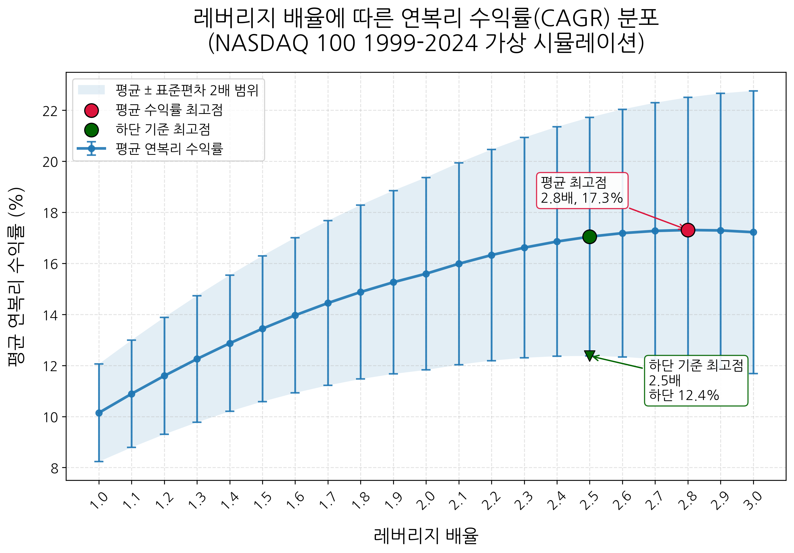
그래프를 보면 레버리지 배율이 높아질수록 평균 연복리 수익률도 함께 증가한다. 1배에서는 평균 연복리 수익률이 약 10퍼센트 수준이고, 배율이 올라갈수록 수익률도 점차 높아진다. 단순히 수익률만 놓고 보면 가장 높은 지점은 약 2.8배 부근이다. 이 구간에서 평균 연복리 수익률이 가장 높게 나타난다. 하지만 그래프에서 수익률만 보면 안 된다. 세로로 길게 표시된 막대는 표준편차를 나타낸다. 즉, 같은 레버리지 배율이라도 실제 결과가 얼마나 크게 흔들릴 수 있는지를 보여준다. 배율이 높아질수록 평균 수익률은 올라가지만, 동시에 표준편차도 커진다. 다시 말해 기대수익이 커지는 만큼 투자자가 견뎌야 할 변동성도 함께 커진다. 최악의 상황을 가정한 그래프의 하단을 기준으로 놓고 보았을 때는 2.5배가 최적으로 보여진다. 또한 1배부터 시작해서는 수익률 트렌드가 급격히 증가하지만 2배 이후부터는 수익률 증가폭이 점점 둔화되는 모습을 볼 수 있다. 반면 그래프의 상하단이 나타내는 변동성은 계속 커진다. 이것이 중요한 지점이다. 투자에서는 단순히 가장 높은 수익률을 주는 지점을 고르는 것이 아니라, 추가로 감수하는 위험에 비해 충분한 보상이 있는지를 봐야 한다.
이 관점에서 보면 최적의 배율은 조금 달라진다. 수익률만 놓고 본다면 약 2.8배가 가장 좋아 보인다. 하지만 증가폭과 변동성까지 함께 고려하면 약 2배에서 2.5배 사이가 더 적당한 균형점으로 보인다. 작은 문제는 실제 시장에 2.x배 레버리지 ETF가 존재하지 않는다는 점이다. 따라서 원하는 배율을 만들려면 QQQ, QLD, TQQQ를 섞어야 한다. 예를 들어 QLD는 2배 레버리지 ETF이고, TQQQ는 3배 레버리지 ETF다. 두 상품을 절반씩 섞으면 평균 레버리지 배율은 2.5배가 된다. 두 개를 섞는다는 것은 두 가지의 다른 상품을 사는 방법이라고 말했다. 그렇기에 한 상품은 변동성이 조금 적더라도 다른 상품은 변동성 영향을 크게 맞는다. 이런 의미에서 레버리지 ETF를 섞어서 배율을 맞추는 것은 엄밀한 의미에서 최적의 배율을 찾았다고 하기 힘들지만 그래도 정말 수학적으로 최적의 배율을 찾고 싶다면 할 수 있는 방법이다.
사실 더 간단한 방법도 있다. 그냥 2배의 QLD만 사거나, 3배인 TQQQ만 사는 것이다. QLD의 예상 수익률은 약 15퍼센트이다. 72법칙을 적용하면 5년도 되기 전(72/15 = 4.8년)에 원금에 해당하는 수익을 가져갈 수 있다. 이 책 한 권 읽고 가져갈 수 있는 수익치고는 결코 나쁘지 않다. 더 자세한 내용은 다음 장에서 다루겠지만 3배인 TQQQ만 사는 경우 더 큰 변동성을 감당해야 한다. 하지만 TQQQ의 장점은 확실하다. 상승장에서 매우 높은 수익률을 가져갈 수 있다는 점이다. 1972년 나스닥 지수가 100으로 시작한 이래로 이 책을 쓰고 있는 2026년 6월 12일을 기준으로 본다면 가상의 QQQ는 25888, QLD는 683337, TQQQ는 1762596으로 QQQ는 259배가 되었고, QLD는 6833배, TQQQ는 17626배가 되었다. 나스닥과 QLD의 차이는 대략 26배가 나는 반면 나스닥과 TQQQ의 차이는 68배로 QLD와 TQQQ의 차이 또한 2.6배가 난다. 다만 정말로 주의해야 할 점은 지금이 매우 큰 상승장이라는 점이다. 하락장에서 TQQQ의 수익률은 QLD보다 낮을 수 있고 회복에도 더 오랜 시간이 걸린다. 예를 들어, 2009년 3월 큰 하락장 이후의 데이터를 보면 1배인 QQQ가 12배 일때, 2배인 QLD는 26배, TQQQ는 16배였다.
만약 1972년부터 QQQ, QLD, TQQQ가 있었다면 전체적인 가상 수익률은 다음의 그래프와 같다. y축은 로그축으로 그려졌기에 그래프를 읽을 때 유의해야 한다. 로그축으로 그리지 않는다면 QQQ, QLD, TQQQ의 차이가 너무 커서 한 눈에 트랜드를 파악하기 어렵다. 대체적으로 가상 QQQ보다 뭐가 되었든 QLD나 TQQQ를 선택하는 게 여러 구간에서 더 나은 선택으로 보여진다.
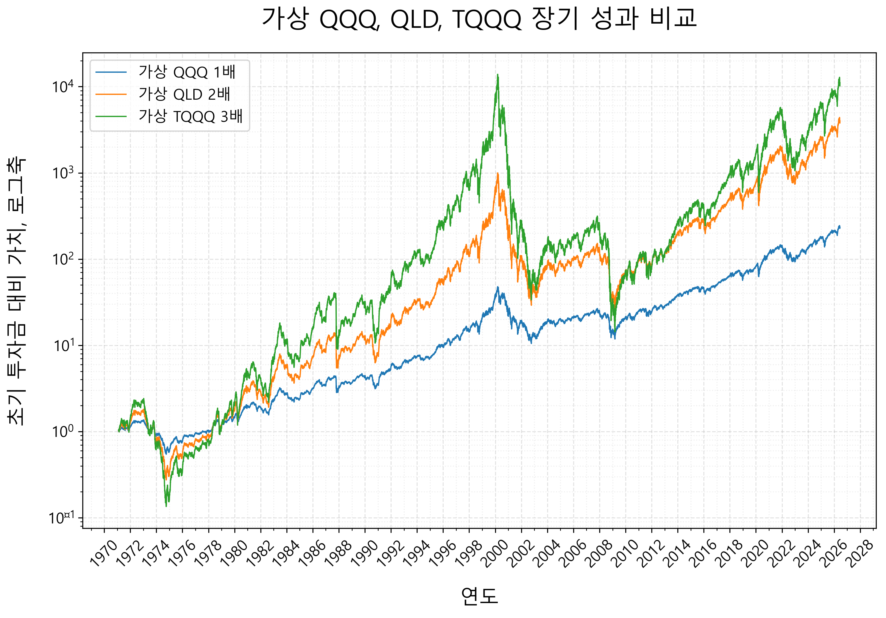
다만 이 분석은 어디까지나 과거 데이터를 바탕으로 한 시뮬레이션이다. 또한 실제 투자에서는 세금, 매매 시점, 환율, 투자자의 심리, 리밸런싱 방식 같은 요소들이 결과에 영향을 준다는 점을 염두해야 한다. 그럼에도 이 분석을 통해 레버리지는 무조건 높을수록 좋은 것이 아니 점과 레버리지 배율은 변동성과 수익률 사이의 균형을 잡아야 한다는 점을 알 수 있다. 더욱이 개개인에게 적합한 레버리지 배율은 단순히 수학적으로 결정되지 않는다. 내가 얼마나 긴 시간을 투자할 수 있는지, 큰 하락을 얼마나 견딜 수 있는지, 추가 매수 여력이 있는지, 투자 중간에 흔들리지 않을 수 있는지까지 함께 고려해야 한다. 아무리 백테스팅 결과가 좋아도 내가 견디지 못하면 의미가 없다. 투자는 수식에서 끝나는 것이 아니라 실제 계좌에서 이어지는 일이기 때문이다.
우리가 살펴보았듯이 레버리지 ETF는 변동성이 크다. 1배 ETF보다 훨씬 크게 오르고, 훨씬 크게 떨어진다. 상승장에서는 자산이 빠르게 불어나지만, 하락장에서는 계좌가 무너지는 듯한 고통을 겪을 수도 있다. 하지만 위험이 커지는 만큼 기대할 수 있는 수익도 커진다. 앞선 장에서 우리는 과거 나스닥 데이터를 이용해 가상의 지수 추종 ETF들을 만들어보았다. 그 결과 1배인 QQQ의 연평균 수익률이 약 10퍼센트라면, 2배인 QLD는 약 15.5퍼센트, 3배인 TQQQ는 약 17퍼센트 수준의 수익을 기대할 수 있었다. 물론 이는 과거 데이터를 바탕으로 한 시뮬레이션일 뿐이고, 미래에도 같은 결과가 반복된다는 보장은 없다. 그럼에도 레버리지가 장기 수익률을 크게 높일 수 있다는 점은 분명히 확인할 수 있었다.
그렇다면 이제 자연스럽게 이런 질문이 생긴다. 레버리지 ETF에 투자했을 때 원금 손실이 날 확률은 얼마나 될까. 다시 말해 내가 어느 시점에 투자를 시작했을 때, 1년 뒤에도 손실일 가능성은 얼마나 될까. 3년 뒤에는 어떨까. 5년, 10년, 20년 뒤에는 어떨까. 장기적으로 시장은 우상향해왔다. 물론 중간에는 끔찍한 하락장이 있었다. 닷컴버블 붕괴, 금융위기, 코로나 급락, 2022년 기술주 하락장처럼 투자자를 두렵게 만든 시기는 반복해서 찾아왔다. 하지만 시간이 충분히 지나면 시장은 다시 회복했고, 더 높은 곳으로 나아갔다. 문제는 "결국 회복된다"는 말만으로는 부족하다는 점이다. 투자자에게 중요한 것은 그 회복을 내가 기다릴 수 있느냐다.
그래서 다른 시뮬레이션을 구성하여 보유 기간에 따라 원금 손실 확률이 어떻게 달라지는지 살펴보려 한다. 분석 방법은 다음과 같다. 먼저 이전 장에서 했던 것과 마찬가지로 과거 나스닥 데이터를 이용해 가상의 QQQ, QLD, TQQQ를 만들었다. 그다음 과거 데이터에서 실제로 존재했던 연속 구간을 사용했다. 예를 들어 1년 보유를 계산할 때는 과거 역사 속에서 실제로 이어진 1년 구간을 본다. 1975년부터 1976년까지, 1988년부터 1989년까지, 2000년부터 2001년까지처럼 실제 시장에 존재했던 구간을 보는 것이다. 10년 보유라면 실제로 이어진 10년 구간을 보고, 20년 보유라면 실제로 이어진 20년 구간을 본다. 계산 방식은 간단하다. 처음 투자금을 1로 둔다. 그리고 특정 보유 기간이 끝났을 때 최종 자산이 1보다 크면 수익, 1보다 작으면 원금 손실로 본다. 이 과정을 1년부터 30년까지 각각의 보유 기간에 대해 반복했다. 이렇게 하면 "과거 나스닥 역사에서 아무 시점에 투자했다면, 몇 년 뒤 원금 손실을 볼 확률이 얼마나 되었는가"를 확인할 수 있다. 아래 그래프는 그 결과를 보여준다.
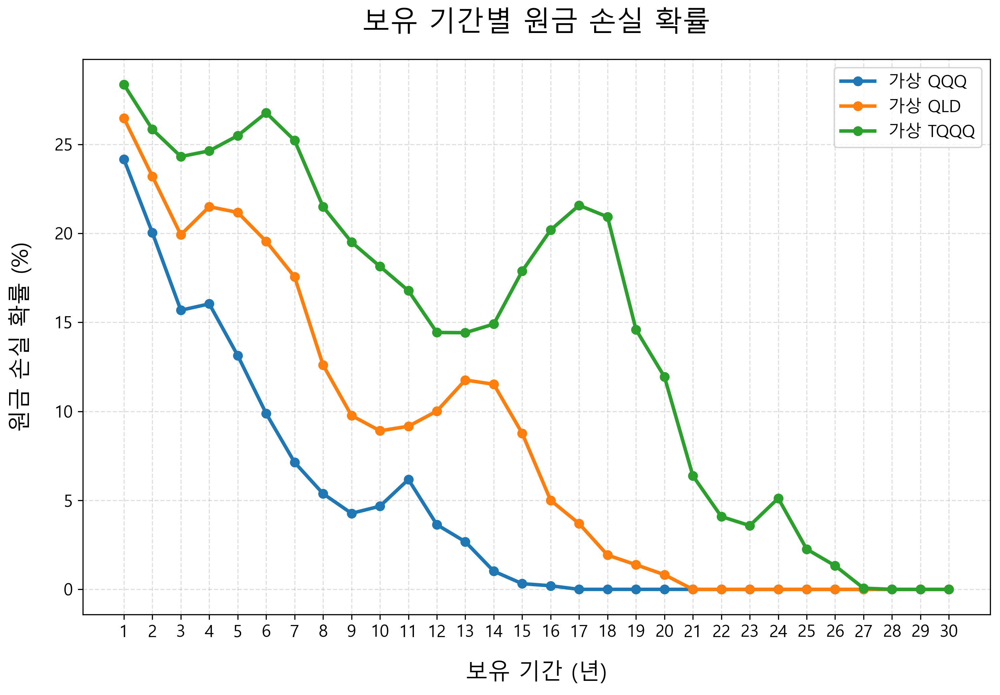
그래프에서 파란색은 가상 QQQ, 주황색은 가상 QLD, 초록색은 가상 TQQQ를 의미한다. 전체적인 흐름은 분명하다. 보유 기간이 길어질수록 원금 손실 확률은 대체로 낮아진다. 1년만 보유했을 때는 손실 확률이 꽤 높다. 시장은 1년 동안 얼마든지 하락할 수 있기 때문이다. 하지만 보유 기간이 5년, 10년, 20년으로 길어질수록 손실 확률은 점점 낮아진다. 시간이 길어질수록 시장의 장기 성장 효과가 누적되기 때문이다. 다만 세 개의 상품의 확실히 다른 트렌드를 보인다. 가상 QQQ는 비교적 빠르게 손실 확률이 낮아진다. 1배 상품이기 때문에 변동성이 가장 작고, 큰 하락장을 겪더라도 회복에 필요한 상승률이 상대적으로 낮다. 반면 가상 QLD와 가상 TQQQ는 더 오랜 시간이 필요하다. 특히 가상 TQQQ는 3배 레버리지 구조이기 때문에 단기 손실 확률이 가장 높고, 손실 확률이 충분히 낮아지기까지 더 긴 시간이 걸린다.
그래프를 보면 손실 확률이 매년 부드럽게 내려가지만은 않는다. 중간중간 다시 불룩 솟아오르는 구간이 있다. 이것은 실제 역사적 데이터를 사용했기 때문에 나타나는 현상이다. 과거 나스닥에는 매우 강한 하락장이 있었다. 대표적으로 닷컴버블 붕괴가 있다. 2000년 고점 부근에서 투자를 시작했다면 이후 몇 년 동안 매우 큰 하락을 겪어야 했다. 특히 기술주 중심의 나스닥은 이 시기에 큰 타격을 받았다. 1배 투자자도 고통스러운 시간이었지만, 2배와 3배 레버리지 투자자에게는 훨씬 더 치명적이었다. 레버리지 상품은 하락할 때 더 크게 하락하고, 큰 손실을 본 뒤에는 원금을 회복하기 위해 훨씬 더 큰 상승이 필요하다. 그래서 특정 고점에서 시작한 구간은 10년 이상 보유했더라도 손실로 남을 수 있다. 또한 보유 기간이 달라지면 포함되는 역사적 구간도 달라진다. 10년 구간과 15년 구간은 단순히 같은 투자에 5년을 더한 것이 아니다. 시작일과 종료일 조합이 달라지고, 어떤 구간에는 닷컴버블 붕괴가 포함되며, 어떤 구간에는 금융위기나 2022년 기술주 하락장이 포함된다. 따라서 실제 연속 구간을 기준으로 계산하면 손실 확률이 항상 매끄럽게 감소하지 않고, 특정 보유 기간에서 일시적으로 튀어 오를 수 있다.
그럼에도 전체적인 방향은 분명하다. 시간이 길어질수록 원금 손실 확률은 낮아진다. 가상 QQQ는 비교적 빠르게 0에 가까워지고, 가상 QLD도 시간이 지나며 손실 확률이 크게 줄어든다. 가상 TQQQ는 가장 늦게 안정되지만, 매우 긴 보유 기간에서는 손실 확률이 낮아지는 모습을 보인다. 이 결과는 레버리지 ETF가 단기 투자 상품으로만 보아야 한다는 주장과는 다른 관점을 보여준다. 문제는 레버리지 자체가 아니라, 그것을 감당할 수 있을 만큼 충분히 긴 시간을 확보했는가다. 그러니 핵심은 레버리지 ETF에 투자하려는 투자자는 더 긴 시간을 인내해야 할 수 있다는 점이다.
많은 사람들은 가장 좋은 투자 시점을 찾으려 한다. 더 떨어지면 사야지, 금리가 내려가면 사야지, 경기 침체가 끝나면 사야지, 선거가 끝나면 사야지. 하지만 완벽한 시작점은 지나고 나서야 알 수 있다. 투자자가 실제로 할 수 있는 일은 완벽한 바닥을 맞히는 것이 아니라, 충분히 긴 시간을 확보하는 것이다. 그리고 긴 시간을 확보하는 가장 확실한 방법은 하루라도 빨리 시작하는 것이다. 장기 투자의 핵심은 시장을 정확히 맞히는 데 있지 않다. 시장에 오래 머무르는 데 있다. 하루, 한 달, 1년의 결과는 운의 영향을 크게 받는다. 하지만 10년, 20년, 30년의 결과는 점점 시간과 복리의 영향을 더 크게 받는다. 레버리지 ETF처럼 변동성이 큰 자산일수록 이 원칙은 더욱 중요하다. 높은 수익률을 기대하려면 높은 변동성을 견뎌야 하고, 높은 변동성을 견디려면 충분한 시간이 필요하다.
그래서 결론은 단순하다. 시장에 있어야 한다. 그리고 가능하다면 하루라도 빨리 시작해야 한다. 기다리는 동안 위험을 피하는 것처럼 느껴질 수 있지만, 동시에 복리가 작동할 시간을 잃고 있는 것일 수도 있다. 장기 투자자에게 가장 큰 자산은 완벽한 예측력이 아니라 시간이다. 시간을 내 편으로 만들기 위해서는 결국 시작해야 한다.
5장에서는 레버리지 ETF에 대해 살펴보았다. 레버리지 ETF는 많은 논쟁을 불러일으키는 상품이다. 누군가는 절대 장기 투자해서는 안 된다고 말하고, 누군가는 인생을 바꿀 수 있는 강력한 도구라고 말한다. 양쪽 모두 일리가 있다. 변동성과 리스크를 가져가는 만큼 높은 수익률의 가능성도 가져가는 것이다.
레버리지 ETF의 기본 구조는 단순하다. 기초 지수가 하루에 1퍼센트 오르면 2배 상품은 약 2퍼센트, 3배 상품은 약 3퍼센트 오르는 것을 목표로 한다. 반대로 기초 지수가 하락하면 손실도 그만큼 커진다. 특히 레버리지 ETF는 하루 수익률을 기준으로 움직이기 때문에 (데일리 리밸런싱), 장기 수익률이 단순히 기초 지수의 2배나 3배가 되지는 않는다. 매일 목표 배율을 맞추는 구조 때문에 시장이 오르락내리락하는 횡보장에서는 자산이 서서히 줄어드는 현상이 나타날 수 있다. 이것이 사람들이 말하는 변동성 손실이다.
그렇다고 해서 레버리지 ETF가 장기 투자에 무조건 부적합하다고 단정할 수도 없다. 시장이 장기적으로 강하게 우상향한다면, 변동성 손실을 넘어서는 수익률을 볼 수 있기 때문이다. 실제로 나스닥100을 추종하는 QQQ, QLD, TQQQ의 장기 성과를 보면 레버리지 ETF가 엄청난 수익을 만들어낸 구간도 있었다. 물론 그 과정은 결코 순탄하지 않았다. TQQQ처럼 3배 레버리지 상품은 큰 상승을 보여준 만큼, 하락장에서는 계좌가 70퍼센트, 80퍼센트 이상 줄어드는 고통도 겪을 수 있다.
그래서 중요한 것은 레버리지 ETF가 좋은가 나쁜가를 단순하게 판단하는 것이 아니다. 더 중요한 질문은 어느 정도의 수익률을 목표로 하고 어느 정도의 변동성과 리스크를 감수할 수 있는지다. 2배와 3배는 단순히 숫자 하나 차이가 아니다. 변동성, 하락폭, 회복 기간, 심리적 압박이 완전히 다르다. 백테스팅 결과만 보면 3배가 가장 매력적으로 보일 수 있지만, 실제 계좌에서 80퍼센트 하락을 견딜 수 없다면 그 전략은 나에게 맞지 않는 전략이다.
우리는 나스닥 지수의 데이터를 이용하여 여러 시뮬레이션을 만들고 결과를 관찰하였다. 그 결과 최고의 수익률을 내는 것은 약 2.8배의 레버리지였지만, 변동성과 원금 회복 가능성을 놓고 본다면 2배에서 2.5배 정도가 적당하다는 점도 확인했다. 그 이상의 레버리지는 감수해야 하는 변동성과 리스크에 비해 추가로 얻을 수 있는 수익률이 한정적이었다. 또 다른 시뮬레이션으로부터 레버리지 비율이 높을수록 원금 손실의 가능성이 늘어난다는 것 또한 알 수 있었다. 그렇기에 나스닥을 기준으로 2배의 레버리지는 꽤 합리적인 선택이다. 레버리지 ETF에 투자하기로 마음먹었다면 남들보다 더 인내하는 마음가짐이 필요하다.
레버리지 ETF의 과실은 달다. 나스닥을 1배로 추종하는 QQQ의 연평균 수익률은 약 10퍼센트, 2배인 QLD는 15퍼센트, 3배인 TQQQ는 17퍼센트이다. 연간 10퍼센트의 수익 또한 결코 나쁘지 않다. 하지만 집값이나 물가 상승률과 같은 다른 요인들을 감안해서 5퍼센트를 빼고 실질 수익률을 계산한다면 QQQ는 5퍼센트, QLD는 10퍼센트, TQQQ는 12퍼센트의 실질 수익률이 나온다. 이는 부자와 가난한 사람 사이의 빈부격차가 벌어지는 이유와도 비슷하다. 부자는 600만 원을 받고 300만 원을 쓰고 300만 원을 저축한다고 하자. 가난한 사람은 200만 원을 받고 150만 원을 쓰고 50만 원을 저축한다. 월급은 3배 차이지만 저축할 수 있는 돈은 6배 차이가 난다. 이러한 차이가 레버리지 ETF를 강력하게 만드는 것이다. 레버리지 ETF에 투자한다면 남들보다 더 오랜 기간 고통스러운 구간이 이어질 수도 있다. 하지만 장기 투자의 힘을 믿고 시장 전체가 장기적으로 성장한다고 확신한다면, 그 과실을 누릴 수 있다.
최적의 레버리지 비율보다 더 중요한 것은 장기 투자이다. 시장에 머무르는 기간이 길어질수록 원금 손실 가능성은 낮아지고, 여러분이 가져갈 수 있는 실질 수익은 2~3배로 늘어날 수 있다. 그렇기에 여러분에게 지금 당장 적은 금액이라도 시작하길 권한다. 다음 장에서는 어떻게 실행해야 하는지 구체적인 전략을 제시하도록 하겠다.
지금까지 우리는 왜 투자해야 하는지, 어떤 자산에 투자해야 하는지, 그리고 시장 전체를 사는 ETF와 레버리지 ETF가 어떤 장단점을 가지는지 살펴보았다. 하지만 아무리 좋은 투자 방법을 알아도 실제로 실행하지 않으면 아무 의미가 없다. 투자는 머리로 이해하는 것에서 끝나지 않는다. 결국 내 수입에서 얼마를 떼어낼 것인지, 언제 살 것인지, 어떤 방식으로 꾸준히 이어갈 것인지가 중요하다.
일반적으로 처음 투자를 시작하는 사람이라면 무리하지 않는 선에서 시작하는 것이 좋다. 투자는 단거리 달리기가 아니라 장거리 달리기다. 한두 달 많이 넣는 것보다, 10년 이상 꾸준히 넣을 수 있어야 한다. 특히 레버리지 ETF처럼 변동성이 큰 상품에 투자한다면 더더욱 그렇다. 하락장이 왔을 때 생활비가 부족해 어쩔 수 없이 팔아야 한다면, 아무리 좋은 전략도 실패로 끝날 수 있다. 그래서 투자금은 반드시 오래 묶어둘 수 있는 돈이어야 한다.
투자를 꾸준히 하기 위한 방법으로 월급이 들어오자마자 먼저 투자금을 떼어놓는 방법이 있다. 많은 사람들이 "이번 달에 쓰고 남는 돈을 투자해야지"라고 생각하지만 사람의 심리는 그렇게 단순하지 않다. 돈이 통장에 있으면 쓸 일이 생긴다. 꼭 필요한 지출처럼 보이는 일도 생기고, 스스로에게 주는 작은 보상도 늘어난다. 그렇게 한 달이 지나고 나면 투자할 돈은 생각보다 많이 남지 않는다.
그러니 월급이 들어오면 먼저 정해둔 금액으로 ETF를 산다. 그리고 남은 돈으로 생활비, 식비, 교통비, 취미 생활비를 쓴다. 이렇게 하면 투자는 의지의 문제가 아니라 시스템의 문제가 된다. 매달 고민하지 않아도 되고, 시장 상황에 흔들리지 않아도 된다. 적금을 붓듯이 정해진 날짜에 정해진 금액을 투자하면 된다. 이런 방식을 흔히 적립식 투자라고 한다. 매달 같은 금액을 꾸준히 투자하는 것이다. 시장이 오르든 내리든 계속 사기 때문에 투자 타이밍을 맞히려고 애쓸 필요가 없다.
적립식 투자의 가장 큰 장점은 타이밍에 대한 심리적 부담이 적다는 점이다. 보통 하락장을 기분 좋게 견디기는 어렵지만지만 적립식 투자를 하고 있다면 하락장이 반드시 나쁜 것만은 아니다. 앞으로도 계속 투자 상품을 구매하는 사람에게 하락장은 더 낮은 가격에 자산을 모을 수 있는 기회가 되기 때문이다.
반대로 이미 목돈이 있는 사람은 고민이 더 클 수 있다. 예를 들어 퇴직금, 보너스, 전세금 일부, 오랫동안 모아둔 저축처럼 한 번에 투자할 수 있는 큰돈이 있다고 해보자. 이때 많은 사람들은 이런 고민을 한다. "지금 한 번에 넣어도 될까. 혹시 내가 사자마자 떨어지면 어떡하지. 조금 더 기다렸다가 사야 하지 않을까."
목돈을 한 번에 투자하는 방법은 일시 투자라고 부를 수 있다. 말 그대로 일정 금액을 여러 번 나누지 않고 한 번에 시장에 넣는 방식이다. 큰돈을 넣고 가장 걱정되는 것은 타이밍이 좋지 않아 투자 직후 하락장을 맞는 경우다. 이상하게 내가 사면 떨어지는 것처럼 느껴진다. 며칠만 기다렸다면 더 싸게 살 수 있었을 것 같고, 조금 더 신중했어야 했다는 후회가 밀려온다. 이런 경험 때문에 사람들은 투자를 미루고, 더 좋은 타이밍을 기다린다.
하지만 장기 차트로 보면 며칠, 몇 주, 몇 달의 차이는 생각보다 크지 않을 수 있다. 오늘 사고 내일 5퍼센트 떨어지면 마음이 흔들린다. 하지만 10년, 20년, 30년의 긴 시간으로 보면 그 짧은 기간의 차이는 전체 결과에서 작은 흔들림에 가까워질 수 있다. 장기 투자에서 더 중요한 것은 완벽한 진입 시점을 찾는 것이 아니라, 시장에 머무르는 기간을 최대한 길게 확보하는 것이다. 나는 주변에서 투자 조언을 구하는 사람에게 항상 하루라도 빨리 시작하라고 말한다. 그들의 대답은 한결같다. 지금은 너무 비싼 것 같다고.
하노 백은 ≪부자들의 생각법≫에서 단기적으로는 한 일을 후회하지만, 장기적으로는 하지 않은 일을 후회한다고 말했다. 투자도 그렇다. 단기적으로는 "그때 왜 샀을까" 하고 후회할 수 있다. 하지만 시간이 충분히 지나고 나면 "그때 왜 시작하지 않았을까"를 더 크게 후회할 수 있다. 시장은 늘 불안해 보인다. 지금은 너무 오른 것 같고, 나중에는 경기 침체가 올 것 같고, 또 어느 순간에는 금리가 걱정된다. 하지만 그런 이유로 계속 기다리다가, 정작 시장이 상승하는 기간을 놓칠 수 있다.
각자의 상황이 있지만 가장 고민이 적은 방법은 여윳돈이 생길 때마다 투자하는 것이다. 그렇게 자산을 팔지 않고 최대한 오래 시장에 머물게 하면 된다. 간단하지 않은가. 아직 확신이 생기지 않았을 수 있다. 그렇다 하더라도 당장 작은 금액으로 시작해보라고 권하고 싶다. 아무것도 하지 않는다면 그대로 머물지만, 하루에 1퍼센트라도 매일 전진하면 1년 후 이는 약 38배($1.01^{365}\approx37.78$)가 되고 3년이면 약 5만 4천 배($1.01^{365\times3}\approx53939$)가 된다. 여러분도 그 시작을 오늘이라도 당장 만들기를 바란다.
주식을 처음 사려고 하면 의외의 장벽을 만날 때가 있다. 바로 주식은 기본적으로 한 주 단위로 거래된다는 점이다. 우리가 마트에서 사과를 한 개씩 사듯이, 주식시장에서도 보통 주식을 한 주, 두 주, 열 주처럼 온주(온전한 한 주) 단위로 사고판다. 문제는 어떤 주식은 한 주 가격이 너무 비싸다는 것이다.
대표적인 예가 미국의 버크셔 해서웨이 A주다. 워런 버핏이 이끄는 버크셔 해서웨이는 세계적으로 유명한 기업이지만, A주는 한 주 가격이 매우 비싼 것으로도 유명하다. 한 주 가격이 수억 원에 이르는 경우도 있으니, 평범한 개인 투자자가 "한 주만 사야지" 하고 쉽게 접근하기 어렵다. 물론 버크셔 해서웨이에는 상대적으로 가격이 낮은 B주도 있지만, A주는 한 주 단위 거래의 한계를 보여주는 대표적인 사례다.
꼭 버크셔 해서웨이처럼 극단적인 경우가 아니더라도 비슷한 문제는 자주 생긴다. 미국의 대형 기술주나 고가 주식은 한 주 가격이 수십만 원, 많게는 수백만 원에 이를 수 있다. 만약 내가 매달 30만 원씩 투자하기로 했는데 사고 싶은 ETF나 주식이 한 주에 200만 원이라면 어떻게 해야 할까. 한 주를 사기 위해 두세 달을 기다려야 할까. 그 사이에 가격이 오르면 또 기다려야 할까. 이런 상황은 적립식 투자를 어렵게 만든다.
기업들도 이 문제를 알고 있다. 그래서 때때로 주식분할을 한다. 예를 들어 한 주 가격이 1,000달러인 주식을 5대1로 분할하면, 기존 주주가 가지고 있던 1주는 5주가 되고, 주당 가격은 이론적으로 200달러가 된다. 중요한 것은 전체 가치는 변하지 않는다는 점이다. 1,000달러짜리 한 주가 200달러짜리 다섯 주로 바뀌는 것일 뿐이다. 피자 한 판을 네 조각으로 자르든 여덟 조각으로 자르든 피자의 양이 달라지지 않는 것과 같다.
테슬라도 주식분할을 한 대표적인 기업이다. 테슬라는 2020년에 5대1 주식분할을 했고, 2022년에는 다시 3대1 주식분할을 했다. 만약 어떤 사람이 2020년 첫 분할 전에 테슬라 주식 1주를 가지고 있었다면, 5대1 분할 이후 5주가 되었고, 이후 3대1 분할까지 거치면 총 15주가 된 셈이다. 물론 주식 수가 늘었다고 해서 그 자체로 부자가 되는 것은 아니다. 주식 수가 늘어나는 만큼 주당 가격은 낮아지기 때문이다. 하지만 주식분할은 한 주 가격을 낮춰 더 많은 투자자가 접근하기 쉽게 만드는 효과가 있다.
그런데 요즘에는 주식분할을 기대할 필요조차 없어지고 있다. 소수점 거래가 가능해졌기 때문이다. 소수점 거래란 주식을 한 주 단위가 아니라 0.1주, 0.01주, 0.001주처럼 쪼개서 사는 방식이다. 더 쉽게 말하면 주식 수가 아니라 금액을 기준으로 살 수 있는 기능이다. 예를 들어 어떤 ETF 한 주 가격이 100만 원이라고 해보자. 예전에는 100만 원이 있어야 한 주를 살 수 있었다. 하지만 소수점 거래를 이용하면 10만 원어치만 살 수도 있다. 이 경우 나는 그 ETF 0.1주를 보유하게 된다. 5만 원어치를 사면 0.05주를 갖게 된다. 이렇게 하면 매달 정해진 금액에 딱 맞춰 투자할 수 있다.
미국에서는 대표적으로 Robinhood 같은 브로커리지 앱이 소수점 주식 매수를 지원한다. 투자자는 "몇 주를 살지"가 아니라 "몇 달러어치를 살지"를 정할 수 있다. 예를 들어 애플을 50달러어치, 테슬라를 30달러어치, QQQ를 100달러어치 사는 식이다. 주식 한 주 가격이 얼마인지와 관계없이 내가 원하는 금액만큼 투자할 수 있는 것이다.
한국에서도 해외주식 소수점 거래가 가능하다. 과거에는 해외주식도 온주 단위 거래가 기본이었지만, 이제는 여러 증권사 앱에서 미국 주식이나 미국 ETF를 소수점으로 살 수 있다. 방식은 증권사마다 조금씩 다르지만, 기본 구조는 비슷하다. 투자자가 1만 원, 5만 원, 10만 원처럼 원하는 금액을 입력하면 증권사가 여러 투자자의 주문을 모아 온주 단위로 매매하고, 각 투자자에게 소수점 지분을 나누어 반영하는 방식이다.
실제로 이용하는 방법도 어렵지 않다. 먼저 해외주식 거래가 가능한 증권사 계좌를 만든다. 그다음 앱에서 해외주식 거래 신청을 하고, 필요하다면 환전 또는 원화 주문 서비스를 설정한다. 이후 검색창에서 원하는 미국 주식이나 ETF를 찾는다. 예를 들어 QQQ, QLD, TQQQ, VOO 같은 종목을 검색할 수 있다. 그다음 일반 주문이 아니라 "소수점 주문", "금액 주문", "해외주식 소수점 거래"와 같은 메뉴를 선택한다. 여기서 내가 투자하고 싶은 금액을 입력하면 된다. 1주를 살 돈이 없어도 1만 원어치, 5만 원어치, 10만 원어치처럼 내가 정한 금액만큼 살 수 있다.
앞서 언급했듯 소수점 거래의 가장 큰 장점은 투자 금액을 깔끔하게 맞출 수 있다는 점이다. 이 기능은 적립식 투자와 매우 잘 맞는다. 적립식 투자의 핵심은 매달 일정한 금액을 꾸준히 투자하는 것이다. 그런데 한 주 단위로만 살 수 있다면 매달 같은 금액을 정확히 투자하기 어렵다. 주가가 오르면 한 주도 못 살 수 있고, 주가가 내려가면 돈이 남을 수도 있다. 반면 소수점 거래를 이용하면 주가가 얼마든 내가 정한 금액만큼 계속 살 수 있다. 적금을 붓듯이, 월급이 들어오면 정해진 금액으로 정해진 ETF를 사면 된다.
또 하나의 장점은 분산투자가 쉬워진다는 점이다. 예를 들어 투자금이 30만 원밖에 없는데 여러 종목을 사고 싶다고 해보자. 한 주 단위로만 거래해야 한다면 선택지가 제한된다. 비싼 종목은 아예 살 수 없고, 여러 종목을 나누어 사기도 어렵다. 하지만 소수점 거래를 이용하면 30만 원 안에서도 여러 ETF나 주식을 나누어 살 수 있다. 물론 지나치게 많은 종목을 잘게 나누는 것이 항상 좋은 것은 아니지만, 적은 돈으로도 분산투자를 시작할 수 있다는 점은 분명한 장점이다.
투자에서 작은 금액이라도 시간이라는 거대한 무기가 더해지면 더 이상 무시할 수 없다. 오늘의 1만 원, 5만 원, 10만 원은 당장 보기에는 미미해 보일 수 있지만 그 돈이 매달 시장에 들어가고, 시간이 지나며 복리로 불어나면 전혀 다른 결과를 만들 수 있다. 중요한 것은 주식 몇 주를 샀느냐가 아니다. 시장에 참여했느냐, 그리고 그 참여를 오래 이어갈 수 있느냐다. 소수점 거래는 평범한 개인 투자자가 그 첫걸음을 내딛게 해주는 아주 현실적인 도구다.
주식시장에 오래 머물다 보면 반드시 하락장을 만난다. 주가가 짧은 기간 안에 빠지는 일은 생각보다 흔하다. 보통 주요 지수가 최근 고점 대비 10퍼센트 이상 하락하면 조정장이라고 부르고, 20퍼센트 이상 하락하면 약세장 또는 폭락장이라고 부른다. 이름은 조금씩 다를 수 있지만 투자자가 느끼는 감정은 비슷하다. 계좌가 줄어들고, 뉴스는 불안한 이야기를 쏟아내며, 사람들은 더 큰 하락이 올 것처럼 말한다.
특히 레버리지 ETF에 투자하고 있다면 그 공포는 더 크게 느껴진다. 시장이 10퍼센트 빠질 때 2배 ETF는 단순 계산으로 약 20퍼센트, 3배 ETF는 약 30퍼센트 가까이 하락할 수 있다. 시장이 20퍼센트 빠지면 손실은 훨씬 더 커진다. 숫자로 볼 때는 이해할 수 있지만, 실제 계좌에서 그 손실을 보는 것은 전혀 다른 문제다. 머리로는 장기 투자를 해야 한다고 생각하면서도, 막상 계좌가 크게 줄어들면 "지금이라도 팔아야 하나" 하는 생각이 든다.
우리는 흔히 "무릎에 사서 어깨에 팔라"는 말을 한다. 말만 보면 너무나 당연하다. 하지만 실제 하락장에서는 이상하게도 무릎에서 사고 싶어지는 것이 아니라 무릎에서 팔고 싶어진다. 가격이 떨어졌다는 사실은 기회처럼 보이기보다 위협처럼 느껴진다. 더 떨어질 것 같고, 지금이라도 손실을 줄여야 할 것 같다. 투자에서 가장 어려운 것은 지식을 아는 것이 아니라, 그 지식을 공포 속에서도 지키는 일이다.
나도 비슷한 경험을 했다. 코로나가 한창이던 시기에 미국 시장에 주식 투자를 시작했다. 당시 미국 시장에는 국민의 생활을 지원한다는 명목으로 엄청난 유동성이 풀렸고, 금리는 하락했으며, 따라서 주식시장은 빠르게 상승했다. 처음에는 모든 것이 순조로워 보였다. 하지만 이후 물가가 크게 오르자 미국 연방준비제도, 소위 연준은 인플레이션을 잡기 위해 기준금리를 올리기 시작했다. 금리가 오르자 성장주와 기술주는 크게 흔들렸고, 주식시장은 빠르게 하락했다. 나는 레버리지 ETF에 투자하고 있었기 때문에 손실은 시장보다 훨씬 컸다.
그때는 마음이 편하지 않았다. 계좌를 확인하면 불안했고, 더 늦기 전에 팔아야 하는 것 아닌가 하는 생각도 들었다. 하지만 지나고 보니 그 시기는 시장에서 도망칠 시간이 아니라, 시장에 남아 있어야 하는 시간이었다. 시간이 지나면서 시장은 다시 회복했고, 꾸준히 버틴 투자자는 회복의 과실을 맛볼 수 있었다. 물론 모든 하락장이 똑같이 회복된다고 단정할 수는 없다. 하지만 시장 전체가 장기적으로 성장한다고 확신을 가질 수 있어야 한다.
그렇다면 하락장에 대비하는 가장 기본적인 방법은 무엇일까. 의외로 간단하다. 여러번 강조했지만 시장에 오래 머무는 것이다. 앞선 5.4장에서 우리는 보유 기간과 원금 손실 확률을 살펴보았다. 그 그래프에서 확인했듯이, 시장에 오래 머무를수록 원금 손실 확률은 대체로 낮아진다. 하락장을 정확히 피하고, 바닥에서 다시 들어가는 것은 말처럼 쉽지 않다. 사람들은 자신이 하락을 피할 수 있다고 생각하지만, 실제로는 많은 사람이 이미 그랬듯 바닥을 확인하기 전에 공포에 질려 팔고, 주변 사람들의 말에 흔들려 상승장 끝 무렵 시장에 들어온다.
그래서 하락장에 대비하는 현실적으로 가장 좋은 방법은 적립식으로 투자하는 것이다. 이 방법은 화려하지 않지만 강력하다. 무엇보다 본업을 방해하지 않는다. 투자를 위해 매일 시장을 예측하고, 공포와 탐욕 사이에서 흔들리다 보면 정작 내가 해야 할 일에 집중하지 못할 수 있다. 투자는 삶을 돕기 위해 하는 것이지, 삶을 잡아먹기 위해 하는 것이 아니다. 하락장이 올 때마다 밤잠을 설치고, 일하는 동안에도 계좌만 확인하고, 가족과 있는 시간에도 시장 관련 소식만 찾아 본다면 그 투자는 지속되기 어렵다. 좋은 전략은 수익률만 높은 전략이 아니라 오랫동안 일관되게 유지할 수 있는 전략이다. 그리고 대부분의 사람에게 오래 유지할 수 있는 전략은 단순한 전략이다.
하락장은 투자자를 시험한다. 상승장에서는 누구나 성공한 장기 투자자처럼 말할 수 있다. 하지만 진짜 장기 투자자의 실력은 하락장에서 드러난다. 계좌가 줄어들고, 뉴스가 불안하고, 주변 사람들이 팔 때에도 자신이 세운 원칙을 지킬 수 있는가. 그것이 장기 투자자의 실력이다. 그러니 폭락이 온다면 먼저 기억하자. 이것은 처음 있는 일이 아니고, 마지막 일도 아닐 것이다. 시장은 과거에도 수많은 위기를 겪었고, 그때마다 투자자들은 두려워했다. 하지만 긴 시간으로 보면 시장은 위기를 통과하며 성장해왔다.
시장 전체의 장기 성장을 믿고 투자하고 있다면, 폭락장은 도망쳐야 할 시기가 아니라 원칙을 확인해야 할 순간이다.
투자를 공부하다 보면 포트폴리오라는 말을 자주 듣게 된다. 말은 거창하지만 뜻은 가진 투자 자산의 묶음이다. 내가 QQQ만 가지고 있다면 나의 포트폴리오는 QQQ 하나로 구성되어 있는 것이다. QQQ와 QLD를 가지고 있다면 두 개의 ETF로 구성된 포트폴리오이고, 여기에 개별 주식과 현금, 채권, 금까지 더해지면 더 다양한 자산으로 구성된 포트폴리오가 된다. 즉 포트폴리오는 특별한 투자 기법이 아니다. 내가 무엇을 얼마나 가지고 있는지를 나타내는 말일 뿐이다. 하지만 이 단어가 주는 느낌 때문에 많은 사람들이 포트폴리오를 너무 어렵게 생각한다. 마치 훌륭한 포트폴리오를 만들기만 하면 저절로 돈을 벌 수 있을 것처럼 느끼기도 한다. 하지만 포트폴리오 자체가 돈을 벌어주는 것은 아니다. 돈을 벌어주는 것은 결국 내가 보유한 자산이 장기적으로 성장하느냐다.
많은 투자자들은 자신만의 비율을 정한다. 예를 들어 S&P500 ETF 40퍼센트, 나스닥100 ETF 30퍼센트, 개별 주식 10퍼센트, 채권 10퍼센트, 현금 10퍼센트처럼 나누는 식이다. 문제는 시간이 지나면 이 비율이 자연스럽게 변한다는 점이다. 예를 들어 처음에는 QQQ와 QLD를 각각 50퍼센트씩 샀다고 해보자. 시간이 지나 QLD가 더 크게 오르면 전체 자산에서 QLD가 차지하는 비중은 50퍼센트를 넘어선다. 반대로 하락장이 와서 QLD가 더 크게 떨어지면 QLD의 비중은 줄어든다. 이렇게 가격 변화에 따라 처음 정한 비율은 계속 흔들린다.
포트폴리오 리밸런싱이란 (ETF의 데일리 리밸런싱과 다름) 이 비율을 다시 원래대로 맞추는 일이다. 처음에 QQQ 50퍼센트, QLD 50퍼센트로 정했다면, 시간이 지난 뒤 QLD가 올라 70퍼센트가 되었을 때 일부를 팔고 QQQ를 더 사서 다시 50대50에 가깝게 만드는 것이다. 반대로 QLD가 크게 떨어져 30퍼센트가 되었다면 QQQ 일부를 팔거나 새 돈을 넣어 QLD를 더 사는 식이다. 이론적으로 리밸런싱에는 장점이 있다. 특정 자산이 너무 커져 포트폴리오 전체의 위험을 과도하게 키우는 것을 막을 수 있다. 또한 많이 오른 자산을 일부 팔고, 덜 오른 자산이나 떨어진 자산을 사는 방식이기 때문에 결과적으로 "비싸진 것은 줄이고, 싸진 것은 늘리는" 효과가 생길 수도 있다. 특히 주식과 채권처럼 성격이 다른 자산을 함께 보유하는 경우에는 리밸런싱이 위험 관리에 도움이 될 수 있다.
하지만 그렇다고 모든 개인 투자자가 정기적으로 리밸런싱을 해야 하는 것은 아니다. 특히 이 책에서 이야기하는 것처럼 장기적으로 미국 시장 전체나 나스닥100 같은 성장 자산을 꾸준히 모아가는 투자자라면, 보유하고 있는 주식을 사고팔면서 리밸런싱하는 과정에서 세금과 수수료 때문에 손해 볼 가능성이 크다. 단지 비율이 깨졌다는 이유만으로 이런 손해를 감수하는 것은 생각해볼 문제다. 다만 새로 들어오는 투자금으로 어느 정도 리밸런싱을 하는 건 시도해볼 만하다. 모든 건 상대적이다. 처음 정한 비율보다 비중이 줄어든 자산은 상대적으로 저렴해졌다고 볼 수도 있기 때문이다. 이런 자산을 평소보다 더 매수한다면 세금을 발생시키지 않고도 포트폴리오 비율을 천천히 조정할 수 있다.
특히 이 책의 투자 철학은 복잡한 운용보다 단순한 지속에 가깝다. 시장 전체를 사고, 적립식으로 모으고, 폭락장에서도 떠나지 않고, 가능한 한 오래 보유하는 것이다. 이런 전략에서 핵심은 잦은 매매가 아니다. 오히려 잦은 매매를 줄이고, 세금과 비용을 최소화하고, 복리가 오래 작동할 시간을 주는 것이다. 따라서 포트폴리오 리밸런싱에 대한 나의 생각 또한 단순하다. 꼭 필요하지 않다면 굳이 자주 할 필요는 없다. 다만 리밸런싱이라는 목적보다는 상대적으로 저렴해진 자산을 새 투자금으로 더 매수하면 된다.
포트폴리오가 돈을 벌어주는 것이 아니다. 리밸런싱은 수익을 만들어내는 마법이 아니라, 위험을 관리하기 위한 도구일 뿐이다. 도구가 필요할 때는 사용하되, 도구를 사용하는 것 자체가 목적이 되어서는 안 된다. 오히려 돈을 벌어주는 것은 장기적으로 성장하는 자산이고, 그 자산을 팔지 않고 오래 보유할 수 있는 인내심이다.
지금까지의 내용을 바탕으로 한다면 어떤 ETF를 사야 할지 어느 정도 감이 왔을 것이다. 시장 전체를 사야 하고, 장기적으로 보유해야 하며, 자신의 위험 감수 능력에 맞는 배율을 선택해야 한다. 하지만 독자 입장에서는 여전히 구체적으로 어떤 주식을 사야 하는지 답답할 수 있다. 이번 글이 여러분의 답답함을 어느 정도는 해소해주기 바란다.
평범한 개인 투자자가 장기적으로 자산을 키우기 위해 고려할 만한 핵심 ETF는 크게 세 가지 축으로 나눌 수 있다. 첫째는 S&P500, 둘째는 나스닥100, 셋째는 반도체다. 가장 기본이 되는 것은 S&P500이다. 앞서 언급했듯 미국 대형주 시장의 흐름을 보여주는 대표 지수로 널리 쓰인다. 따라서 S&P500을 추종하는 ETF는 상대적으로 안정적인 선택지다. 물론 주식형 ETF이기 때문에 하락장이 오면 함께 떨어진다. 하지만 특정 산업이나 특정 기업에 집중된 ETF보다는 분산 효과가 크다. 장기적으로 기대할 수 있는 수익률도 과거 데이터를 기준으로 대략 연 8~10퍼센트 수준으로 본다.
미국에 직접 투자한다면 S&P500 1배 ETF로는 SPY, VOO, IVV가 대표적이다. 국내에서 S&P500을 추종하는 ETF를 찾는다면 TIGER 미국S&P500, KODEX 미국S&P500, ACE 미국S&P500, RISE 미국S&P500 같은 상품들이 있다. 국내 상장 ETF는 원화로 거래할 수 있고, 연금저축이나 ISA 같은 계좌에서 활용할 수 있다는 장점이 있다. 미국 상장 ETF 중 SSO는 S&P500의 하루 수익률을 2배로 추종하는 상품이고, UPRO는 3배로 추종하는 상품이다. 국내 상장 상품 중에서는 TIGER 미국S&P500레버리지(합성 H)가 S&P500 2배 레버리지 상품으로 대표적이다. 다만 국내에는 S&P500을 포함하여 3배로 추종하는 ETF는 일반적으로 찾기 어렵다.
S&P500은 미국을 대표하는 넓은 지수이기 때문에 나스닥100이나 반도체보다 상대적으로 안정적이다. 그만큼 극적인 수익을 기대하기는 어렵지만, 하락장에서의 충격도 상대적으로 작을 수 있다. 따라서 투자 기간이 비교적 짧거나, 레버리지 ETF를 처음 접하는 사람이라면 S&P500 계열 상품부터 고려해 보는 것이 좋다.
그다음은 나스닥100이다. 개인적으로 나는 나스닥100을 추종하는 ETF를 가장 선호한다. 이유는 간단하다. 세계는 기술이 이끌고 있다고 믿기 때문이다. 인공지능, 클라우드, 반도체, 소프트웨어, 플랫폼, 데이터센터, 전기차, 로봇 같은 산업은 이미 세계 경제의 중심이 되었고, 앞으로도 그 영향력은 쉽게 줄어들지 않을 가능성이 크다. 나스닥100은 이러한 기술주와 혁신 기업의 비중이 높은 지수다.
앞서 여러 번 다루었듯 미국에서 나스닥100 1배 ETF의 대표는 QQQ다. QQQ는 나스닥100을 추종하는 가장 유명한 ETF 중 하나다. 여기에 2배와 3배의 레버리지를 적용한 상품이 QLD와 TQQQ다. 국내에서도 나스닥100을 추종하는 상품들이 있다. 1배 상품으로는 TIGER 미국나스닥100, KODEX 미국나스닥100, ACE 미국나스닥100 같은 ETF가 대표적이다. 2배의 레버리지 상품으로는 KODEX 미국나스닥100 레버리지(합성 H), TIGER 미국나스닥100레버리지(합성) 같은 상품이 있다. 마찬가지로 3배 상품은 찾기 어렵다.
아무것도 모르고 딱 하나만 고르라고 한다면, 나는 2배 나스닥100 ETF를 가장 현실적인 선택지로 본다. 국내에서 3배 레버리지 상품에 투자하기 어렵다는 점도 있고, 우리가 앞선 시뮬레이션에서 본 것처럼 2배 레버리지는 수익률과 변동성 사이의 균형이 비교적 좋다. 장기적으로 연 약 15퍼센트 수준의 기대수익률을 생각할 수 있다면, 평범한 투자자에게 매우 강력한 선택지다.
세 번째는 반도체 ETF다. 인공지능 시대를 믿는다면 반도체는 빼놓을 수 없는 산업이다. AI 모델을 학습하고 실행하려면 막대한 연산 능력이 필요하고, 그 중심에는 GPU, 메모리, 파운드리, 장비, 설계 소프트웨어 같은 반도체 생태계가 있다. 엔비디아, AMD, TSMC, ASML, 브로드컴, 마이크론 같은 기업들은 AI 시대의 핵심 인프라를 담당하고 있다.
미국 상장 반도체 1배 ETF로는 SOXX나 SMH가 대표적이다. SOXX는 미국 상장 반도체 기업들에 투자하는 ETF이고, SMH는 반도체 기업 중에서도 엔비디아와 TSMC 같은 대형 기업 비중이 큰 상품으로 알려져 있다. 2배 레버리지 상품으로는 USD가 있고, 3배 레버리지 상품으로는 SOXL이 대표적이다. 나 역시 반도체 2배 ETF인 USD를 보유하고 있으며, 지금까지의 수익률만 놓고 보면 가장 좋은 성과를 보여준 상품 중 하나다. 국내에도 TIGER 미국필라델피아반도체레버리지(합성)처럼 미국 반도체 지수의 2배 수익률을 목표로 하는 상품도 있다. 다만 반도체 ETF는 변동성이 매우 크다. 여기에 레버리지까지 더하면 하락장에서 손실이 크게 확대될 수 있다.
최근 인공지능 붐과 함께 반도체 관련 주식은 큰 관심을 받고 있다. 동시에 지금의 AI 열풍이 닷컴버블과 비슷한 거품이 아니냐는 우려도 있다. 이 우려를 무시해서는 안 된다. 실제로 좋은 산업이라도 주가가 너무 앞서가면 큰 조정을 받을 수 있다. 닷컴버블 당시에도 인터넷이 세상을 바꿀 것이라는 전망 자체는 맞았다. 문제는 당시 많은 기업들의 가격이 현실보다 너무 앞서 있었다는 점이다.
나는 개인적으로 인공지능을 자주 사용하는 사람으로서 AI가 일시적인 유행으로 끝나지는 않을 것이라고 생각한다. 지금도 AI는 글쓰기, 코딩, 이미지 생성, 검색, 업무 자동화, 교육, 연구 등 다양한 영역에 빠르게 들어오고 있다. 앞으로 우리 생활 곳곳에 더 깊게 스며들 가능성이 크다. 그래서 반도체 산업의 장기 성장성에 대해서는 여전히 긍정적으로 본다. 다만 주가에는 단기적인 거품이 낄 수 있고, 그 거품이 꺼질 때 레버리지 상품은 큰 손실을 낼 수 있다는 점도 함께 기억해야 한다.
정리하면 이렇다. 안정성을 가장 중요하게 생각한다면 S&P500 계열 ETF가 좋다. S&P500 1배 ETF는 장기 투자의 기본이 될 수 있고, S&P500 2배 상품은 상대적으로 안정적인 레버리지 선택지가 될 수 있다. 성장성과 균형을 함께 원한다면 나스닥100 2배 ETF가 좋은 선택지가 될 수 있다. 개인적으로는 QLD 같은 나스닥100 2배 ETF가 수익률과 변동성 사이의 균형이 가장 좋다고 본다. 더 큰 성장을 기대하고 인공지능과 반도체 산업의 장기 성장성을 믿는다면 반도체 2배 ETF도 고려할 수 있다. 다만 이 경우 거품과 급락의 위험을 반드시 감수해야 한다.
투자는 복잡한 상품을 많이 안다고 이기는 게임이 아니다. 좋은 자산을 고르고, 적당한 위험을 감수하고, 오랜 시간 버티는 사람이 이기는 게임이다. 연평균 8~10퍼센트의 수익률을 기록했던 S&P500이 그것만으로도 장기적으로 대부분의 전문 투자자를 이겼다는 사실을 잊지 말자. 레버리지 ETF를 이해하는 당신은 여기서 한 발짝 더 나아갈 수 있다.
6장에서는 실제로 투자를 어떻게 실행할 것인지에 대해 살펴보았다. 앞선 장들에서 우리는 왜 투자해야 하는지, 왜 시장 전체를 사야 하는지, 그리고 레버리지 ETF가 어떤 장단점을 가지는지 이야기했다. 하지만 아무리 좋은 투자 철학을 가지고 있어도 실행하지 않으면 아무 일도 일어나지 않는다. 투자는 생각이 아니라 행동으로 완성된다.
가장 먼저 중요한 것은 투자 금액을 정하는 일이다. 많은 사람들이 투자를 시작할 때 어떤 ETF를 살지부터 고민하지만, 실제로 더 중요한 질문은 "내가 매달 얼마를 꾸준히 투자할 수 있는가"다. 투자는 의지만으로 이어가기 어렵다. 그래서 월급이 들어오면 먼저 정해둔 금액을 투자하고, 남은 돈으로 생활하는 구조를 만들어야 한다. 한 번 사면 팔지 않는다는 생각으로 자신의 소득과 지출을 고려해 지속 가능한 투자 금액을 정해야 한다.
적립식 투자는 이 구조를 실천하기 좋은 방법이다. 시장이 오르든 내리든 정해진 금액을 꾸준히 투자하면 된다. 타이밍을 맞히려고 애쓸 필요도 없고, 하락장이 오면 같은 금액으로 더 많은 수량을 살 수 있다. 목돈이 있다면 일시 투자를 고민할 수 있지만, 그 경우에도 중요한 것은 완벽한 진입 시점을 찾는 것이 아니라 시장에 오래 머무르는 것이다. 결국 장기 투자에서 가장 중요한 것은 언제 샀느냐보다 얼마나 오래 보유했느냐에 가까워진다.
소수점 거래는 이런 실행을 더 쉽게 만들어준다. 예전에는 한 주 가격이 비싼 주식이나 ETF는 매달 정해진 금액으로 사기 어려웠다. 하지만 이제는 0.1주, 0.01주처럼 소수점으로 구매할 수 있다. 덕분에 한 주를 살 돈이 없어도 투자를 시작할 수 있고, 매달 정해진 금액을 거의 그대로 시장에 넣을 수 있다. 중요한 것은 주식 몇 주를 샀느냐가 아니다. 시장에 참여했느냐, 그리고 그 참여를 오래 이어갈 수 있느냐다.
폭락장에 대한 태도도 살펴보았다. 주식시장은 언제든 하락할 수 있다. 10퍼센트 조정은 생각보다 자주 오고, 20퍼센트 이상의 약세장도 반복해서 찾아온다. 특히 레버리지 ETF에 투자한다면 하락장에서 느끼는 공포는 훨씬 클 수 있다. 하지만 장기 투자자에게 중요한 것은 폭락장을 완벽하게 피하는 능력이 아니다. 폭락장이 왔을 때 시장을 떠나지 않고, 하던 대로 투자를 이어갈 수 있는 구조와 마음가짐이다.
포트폴리오란 결국 내가 가진 자산의 묶음일 뿐이다. 리밸런싱은 그 비율을 다시 맞추는 일이지만, 자산을 모아가는 단계의 장기 투자자라면 굳이 자주 매도하면서 비율을 맞출 필요는 크지 않다. 매도에는 세금과 수수료가 따를 수 있고, 잦은 매매는 복리의 시간을 방해할 수 있다. 리밸런싱이 필요하다면 먼저 새로 들어오는 투자금으로 상대적으로 비중이 낮아진 자산을 더 사는 방식이 현실적이다.
마지막으로 구체적으로 어떤 ETF를 살 것인지도 정리했다. 선택지는 많지만, 평범한 개인 투자자가 장기적으로 고려할 만한 축은 크게 세 가지로 나눌 수 있다. 안정성을 중시한다면 S&P500, 성장성과 균형을 원한다면 나스닥100, 인공지능과 반도체 산업의 장기 성장을 믿는다면 반도체 ETF를 생각해볼 수 있다. 그중에서도 2배 레버리지 상품은 수익률과 변동성 사이의 균형을 고려할 때 현실적인 선택지가 될 수 있다.
물론 어떤 ETF가 모든 사람에게 정답일 수는 없다. S&P500 2배는 상대적으로 안정적이지만 수익률의 폭발력은 낮을 수 있고, 나스닥100 2배는 균형이 좋지만 하락장에서 흔들릴 수 있다. 반도체 2배는 성장 가능성이 크지만 거품과 급락의 위험도 크다. 결국 중요한 것은 내가 무엇에 투자하고 있는지 이해하고, 그 변동성을 감당할 수 있으며, 오래 보유할 수 있는가다. 그래도 딱 하나만 담는다면 균형이 좋은 나스닥100 2배 레버리지 ETF 상품을 권한다.
6장에서 말하고 싶은 핵심은 단순하다. 복잡한 전략보다 실행 가능한 전략이 중요하다. 투자에서 가장 어려운 것은 완벽한 방법을 찾는 것이 아니라, 좋은 방법을 오래 유지하는 것이다. 수입에서 일정 금액을 먼저 투자하고, 소수점 거래를 활용해 꾸준히 사고, 폭락장이 와도 시장을 떠나지 않으며, 불필요한 매매를 줄이고, 내가 이해할 수 있는 ETF를 선택하는 것. 이것이 평범한 개인 투자자가 실천할 수 있는 가장 현실적인 실행 전략이다.
투자는 한 번의 대단한 결심으로 완성되지 않는다. 매달 반복되는 작은 행동으로 완성된다. 로버트 기요사키가 ≪부자 아빠 가난한 아빠≫에서 말했듯, 수입이 들어올 때마다 미래의 나에게 먼저 돈을 보내는 것. 시장이 흔들릴 때에도 계획을 지키는 것. 한 주를 살 돈이 없어도 소수점으로 시작하는 것. 복잡한 조정에 매달리기보다 좋은 자산을 오래 보유하는 것. 그리고 내가 감당할 수 있는 ETF를 선택해 끝까지 가져가는 것. 이런 단순한 방법으로도 몇 년 안에 대부분의 전문 투자자의 투자 수익률을 앞지를 수 있다.
투자를 할 때 많은 사람들이 수익률만 본다. 어떤 주식이 더 많이 오를지, 어떤 ETF가 더 높은 수익을 낼지에 관심을 둔다. 물론 수익률은 중요하다. 하지만 실제로 내 손에 남는 돈은 수익률만으로 결정되지 않는다. 세금도 함께 봐야 한다. 같은 1,000만 원의 수익을 내더라도 어떤 자산에 투자했는지, 어느 나라 주식에 투자했는지, 배당으로 받은 돈인지 매도 차익인지에 따라 세금은 달라진다.
먼저 국내 주식부터 살펴보자. 한국에도 미국의 S&P500이나 나스닥100처럼 시장의 흐름을 보여주는 대표 지수가 있다. 대표적인 것이 코스피와 코스닥이다. 코스피는 삼성전자, 현대차, SK하이닉스, LG에너지솔루션 같은 한국의 대형 기업들이 주로 상장된 시장이다. 한국 주식시장의 대표 선수들이 모여 있는 시장이라고 생각하면 된다. 반면 코스닥은 상대적으로 성장성이 큰 중소형 기업, 바이오, IT, 콘텐츠, 2차전지 소재 기업 등이 많이 상장된 시장이다. 미국으로 비유하면 코스피는 S&P500에 가깝고, 코스닥은 성장주와 기술주 비중이 큰 나스닥과 비슷한 성격을 일부 가지고 있다고 볼 수 있다. 물론 완전히 같은 것은 아니지만, 큰 틀에서는 이렇게 이해하면 쉽다.
국내 주식에 투자할 때 알아야 할 세금은 크게 세 가지다. 첫째는 증권거래세다. 주식을 팔 때 붙는 세금이다. 이 세금은 수익이 났는지 손실이 났는지와 상관없이 매도할 때 발생한다. 다만 세율은 시장과 시기에 따라 바뀔 수 있기 때문에 실제 투자할 때는 사용하는 증권사나 국세청 자료를 확인하는 것이 좋다.
둘째는 배당소득세다. 국내 주식이나 ETF에서 배당금을 받으면 배당소득세가 원천징수된다. 보통 배당을 받을 때 세금이 먼저 빠지고 나머지 금액이 계좌에 들어온다. 그래서 투자자는 별도로 계산하지 않아도 배당금이 세후 금액으로 들어오는 경우가 많다. 다만 이자와 배당을 합친 금융소득이 커지면 금융소득종합과세 문제가 생길 수 있다.
셋째는 우리가 제일 관심을 가져야 할 양도소득세다. 양도소득세란 주식이나 부동산 같은 자산을 팔아서 이익이 생겼을 때 내는 세금이다. 그런데 국내 상장주식은 일명 '개미'라고 불리는 일반적인 소액주주라면 장내에서 사고팔 때 양도소득세가 거의 문제 되지 않는다. 쉽게 말해 대부분의 개인 투자자가 삼성전자나 현대차 같은 국내 상장주식을 사서 오른 가격에 팔더라도, 일반적인 경우에는 그 매매 차익에 대해 양도소득세를 내지 않는다.
이 점이 국내 주식의 큰 장점 중 하나다. 일반 개인 투자자 입장에서는 매매 차익에 대한 세금 부담이 상대적으로 작다. 국내 주식으로 100만 원을 벌든, 1,000만 원을 벌든, 소액주주가 장내에서 거래한 상장주식이라면 양도소득세를 걱정하지 않아도 된다. 물론 배당소득세와 거래세는 고려해야 하지만, 매매 차익에 대한 세금 부담이 적다는 점은 분명한 장점이다.
반면 미국 주식은 구조가 다르다. 한국 증권사에서 미국 주식이나 미국 ETF에 투자해서 수익을 내고 팔면, 그 차익에 대해 양도소득세를 내야 한다. 현재 일반적인 해외주식 양도소득세 구조는 연간 양도차익, 그러니까 수익에서 250만 원을 기본공제한 뒤, 초과 금액에 대해 지방소득세를 포함해 22퍼센트의 세율을 적용하는 방식이다. 예를 들어 1년 동안 미국 주식을 팔아서 총 1000만 원의 이익을 냈다고 해보자. 이때 250만 원은 기본공제가 된다. 나머지 750만 원이 과세 대상이 되고, 여기에 22퍼센트를 적용하면 약 165만 원의 세금이 나온다. 결국 1000만 원을 벌었다고 해도 실제로 내 손에 남는 금액은 세금을 제외한 약 835만 원이 된다.
이 세금은 수익을 실현했을 때 발생한다. 즉 보유만 하고 있을 때는 세금을 내지 않는다. 내가 산 미국 ETF가 1000만 원 올랐더라도 팔지 않았다면 아직 세금이 확정되지 않는다. 하지만 매도해서 이익을 실현하면 그때 양도소득세 문제가 생긴다. 그래서 미국 주식 장기 투자자에게는 불필요한 매매를 줄이는 것이 중요하다. 사고팔 때마다 수익이 확정되고, 수익이 확정되면 세금이 발생할 수 있기 때문이다.
미국 주식의 배당도 세금이 있다. 미국 주식이나 ETF에서 배당을 받으면 보통 미국에서 먼저 세금이 원천징수된다. 많은 경우 한국 투자자는 미국 배당에 대해 15퍼센트가 원천징수된 금액을 받는다. 이후 국내 세법상 배당소득으로도 관리된다. 다만 실제 처리 방식은 증권사와 계좌 유형, 투자 상품에 따라 달라질 수 있으므로 세부적인 부분은 증권사 안내를 확인하는 것이 좋다.
그렇다면 세금 때문에 미국 주식 투자를 피해야 할까. 나는 그렇게 생각하지 않는다. 앞서 2.3장에서 이야기했듯이 미국 주식이 가진 가장 큰 장점은 단연 수익률이다. 미국에는 세계적인 기업들이 모여 있고, S&P500과 나스닥100 같은 지수는 장기적으로 강한 성장성을 보여주었다. 세금을 차치하고서라도 충분한 수익률과 거대하고 오래된 미국 시장의 견고함 등은 여전히 매력적이다.
세금은 재미없는 주제다. 하지만 돈을 지키려면 반드시 알아야 하는 주제이기도 하다. 수익률은 시장이 만들어주지만, 세후 수익률은 투자자의 판단이 만든다. 다음 장에서는 미국 주식을 투자하는 경우 쓸 수 있는 절세 전략에 대해 알아보도록 하겠다.
앞선 글에서 미국 주식과 미국 ETF에 투자할 때 알아야 할 세금에 대해 살펴보았다. 국내 상장주식은 일반적인 소액주주라면 매매 차익에 대한 세금 부담이 거의 없지만, 미국 주식이라면 양도세 부담이 커질 수 있다. 현재 기준으로는 연간 양도차익에서 250만 원을 기본공제하고, 이를 초과한 금액에 대해 지방소득세를 포함해 22퍼센트의 세금이 부과된다. 이 제도를 알게 되면 혹시 이 공제를 최대한 활용하여 세금을 줄일 수 있지 않을까 하는 생각이 자연스럽게 든다.
예를 들어 올해 미국 ETF에서 250만 원 정도의 수익이 났다고 해보자. 이때 ETF를 팔아 수익을 실현하고 다시 같은 ETF를 사면, 그해의 250만 원 공제를 활용할 수 있다. 그리고 다시 매수했기 때문에 보유 자산은 계속 유지된다. 겉으로 보기에는 꽤 합리적인 절세 전략처럼 보인다. 매년 조금씩 수익을 실현해 기본공제를 사용하면, 나중에 한꺼번에 팔 때 내야 할 세금을 줄일 수 있을 것 같기 때문이다. 실제로 투자자들 사이에서도 자주 언급되는 방법이다. 특히 수익이 크지 않은 초기에는 꽤 유용해 보일 수 있다. 250만 원 이하의 수익을 실현하면 세금이 거의 발생하지 않기 때문이다.
이 전략이 정말 장기적으로도 유리할지 확인하기 위해 간단한 시뮬레이션을 해보았다. 앞선 장에서 우리는 QLD의 예상 연평균 수익률을 약 15퍼센트로 보았다. 그래서 이번 시뮬레이션에서도 매년 15퍼센트의 수익률을 얻는다고 가정했다. 또한 매년 초 1,000만 원씩 투자한다고 설정했다. 투자 기간은 30년으로 보았다. 이 조건에서 두 가지 전략을 비교했다.
첫 번째 전략은 매년 말에 전부 매도한 뒤 다시 매수하는 방식이다. 매년 초 1,000만 원을 추가로 투자하고, 그해 15퍼센트 수익이 발생한다고 가정한다. 연말에는 전체 자산을 매도해 수익을 실현한다. 이때 양도차익에서 250만 원을 공제하고, 초과 수익에 대해 22퍼센트의 세금을 낸다. 그리고 세금을 제외한 금액을 다시 다음 해에 투자한다.
두 번째 전략은 계속 보유하는 방식이다. 매년 초 1,000만 원을 추가로 투자하고, 매년 15퍼센트씩 수익이 발생한다고 가정하는 것은 같다. 다만 중간에 팔지 않는다. 1년이 지나도 팔지 않고, 10년이 지나도 팔지 않는다. 30년 동안 계속 보유하다가 마지막 해에 한 번만 전부 매도한다고 가정한다. 이때 전체 양도차익에서 250만 원을 공제하고, 나머지 금액에 대해 22퍼센트의 세금을 낸다.
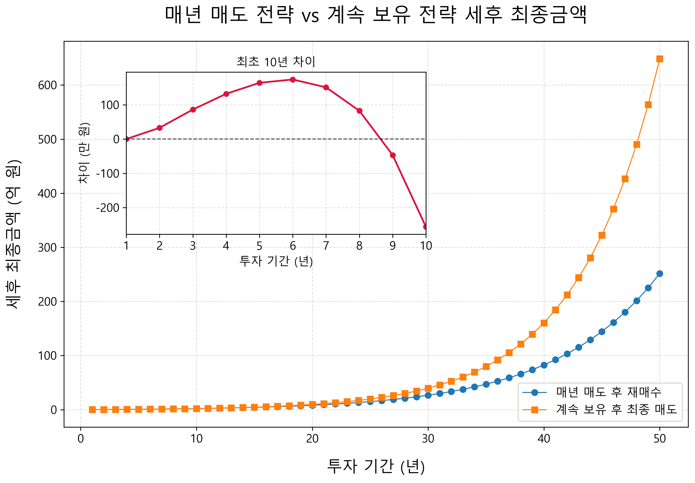
위 그래프는 그 결과를 보여준다. 그래프를 보면 초반에는 매년 매도 후 재매수하는 전략이 유리한 구간이 있다. 특히 투자 초기에는 수익 규모가 크지 않기 때문에 250만 원 기본공제의 효과가 크게 나타난다. 매년 수익을 실현해도 세금이 거의 없거나 적게 발생하고, 그 덕분에 계속 보유 전략보다 세후 금액이 더 높게 나타날 수 있다. 만약 수익률이 더 낮다면 이 유리한 기간은 더 길어질 수도 있다. 수익이 천천히 쌓일수록 매년 250만 원 공제를 활용하는 효과가 더 오래 유지되기 때문이다.
하지만 시간이 길어질수록 상황은 달라진다. 장기적으로는 계속 보유 전략이 더 유리해진다. 이유는 간단하다. 매년 매도 전략은 세금을 조금씩 미리 낸다. 세금을 낸 돈은 더 이상 투자되지 못한다. 즉 세금으로 빠져나간 금액은 다음 해부터 복리로 불어날 기회를 잃는다.
반면 계속 보유 전략은 중간에 세금을 내지 않는다. 물론 마지막에 한 번에 팔면 세금은 크게 나온다. 장기간 쌓인 수익 전체에 대해 세금을 내야 하므로 마지막 세금만 보면 부담스러워 보일 수 있다. 하지만 중요한 것은 그동안 내지 않은 세금도 계속 투자되어 함께 불어났다는 점이다. 세금을 뒤로 미룬 덕분에 그 돈까지 복리로 굴러간 것이다.
물론 혹자는 전량 매도가 아니라 부분 매도를 통해 250만 원 기본공제 한도만 활용하면 되지 않느냐고 말할지도 모른다. 맞는 말이다. 하지만 이 시뮬레이션은 단순화를 위해 다른 많은 변수 또한 계산에 넣지 않았다. 예를 들어 실제 투자에서는 매년 수익률이 일정하지 않고, 매번 어느 정도의 수익을 실현해야 기본공제를 효율적으로 활용할 수 있는지 계산해야 한다. 또한 매도와 재매수 과정에서 발생하는 거래 수수료, 환전 비용, 매매 시점의 가격 차이까지 고려해야 한다. 이런 요소들을 모두 감안하면 매년 주식을 사고파는 일이 생각만큼 수지타산에 맞지 않을 수 있다. 게다가 한국 증권사를 통한 거래의 경우, 미국 내 거주자에게 적용되는 장기보유 양도세율 혜택을 받을 수 있는 것도 아니다. 결국 절세를 위해 매매를 반복하는 전략은 이론적으로는 가능하지만, 실제로는 계산과 실행이 번거롭고 그 과정에서 추가 비용과 실수가 발생할 수 있다.
이것이 장기 투자에서 매우 중요한 개념이다. 세금을 줄이는 것도 중요하지만, 세금을 언제 내느냐도 중요하다. 같은 세금이라도 빨리 내는 것과 나중에 내는 것은 결과가 다르다. 오늘 세금으로 낸 100만 원은 더 이상 투자될 수 없지만, 20년 뒤에 내는 100만 원은 그동안 계속 투자되어 더 큰 자산을 만드는 데 기여할 수 있다. 세금을 나중으로 미루는 것은 그 자체로 일종의 무이자 대출을 받는 것과 비슷한 효과를 낼 수 있다.
그래프의 흐름도 이를 보여준다. 초반에는 매년 매도 전략이 앞서거나 비슷하게 가지만, 시간이 길어질수록 계속 보유 전략이 더 빠르게 커진다. 특히 복리의 힘이 본격적으로 작동하는 장기 구간에서는 차이가 벌어진다. 마지막에 세금을 한 번에 많이 내더라도, 그전까지 세금을 내지 않고 굴린 효과가 더 크기 때문이다.
물론 모든 사람에게 같은 답이 적용되지는 않는다. 투자 규모, 수익률, 필요한 현금흐름, 보유 기간, 다른 손실 종목의 존재 여부에 따라 최적의 선택은 달라질 수 있다. 그러나 다시 한번 복잡한 투자법이 항상 더 좋은 결과를 만드는 것을 확인했다. 오히려 단순함이 이길 때가 많다. 매년 팔고 다시 사고, 세금을 계산하고, 공제 한도를 맞추는 전략은 똑똑해 보일 수 있다. 하지만 장기적으로는 좋은 자산을 조용히 보유하는 것이 더 나은 결과를 만들 수 있다.
투자에서 중요한 것은 자주 움직이는 것이 아니라, 오래 살아남는 것이듯이 세금에서도 이는 그대로 적용된다. 불필요하게 팔지 않는 단순한 전략이야말로 장기 투자자에게 가장 강력한 절세 전략이 될 수 있다.
한국에서 자산을 자녀에게 물려줄 때는 세금을 생각하지 않을 수 없다. 열심히 모은 돈을 자녀에게 주고 싶은 마음은 자연스럽지만, 일정 금액을 넘으면 증여세가 발생한다. 특히 한국의 증여세와 상속세는 세계적으로 보아도 부담이 큰 편에 속한다. 그래서 자산이 어느 정도 커지기 시작하면 "얼마를 벌 것인가"만큼이나 "어떻게 물려줄 것인가"도 중요해진다.
한국의 증여세는 누진 구조다. 증여받는 금액이 커질수록 세율도 높아진다. 매 10년간 공제금액은 5천만 원이며, 과세표준이 1억 원 이하일 때는 10퍼센트지만, 30억 원을 초과하면 최고 50퍼센트까지 올라간다. 물론 실제 세금은 공제와 누진공제, 가족관계, 과거 증여 내역 등에 따라 달라진다. 하지만 큰 틀에서 보면 한국은 자산 이전에 대해 매우 높은 세금을 매기는 나라라고 할 수 있다.
주요국과 비교해보아도 한국의 부담은 높은 편이다. 특히 미국의 경우 한국과 같이 누진 구조를 가지고 있지만, 2026년 기준으로 생전 증여와 사후 상속을 합산해 1인당 1,500만 달러까지 공제할 수 있다. 한국 돈으로는 약 230억 원 정도이고, 부부가 함께 계획한다면 공제 규모는 약 460억 원까지 올라간다. 또한 수증자 1인당 1만 9천 달러(약 3천만 원)까지는 별도의 증여세 신고 없이 증여할 수 있다.
따라서 미국에서는 매우 큰 규모의 자산가가 아니라면 연방 상속·증여세를 실제로 부담하지 않는 경우가 많다. 반면 한국은 최고세율도 높고, 공제 한도도 미국에 비해 훨씬 작기 때문에 자산이 많지 않음에도 상속세와 증여세를 현실적인 문제로 느끼는 사람이 많다. 그렇기에 무엇보다 절세가 필요하다. 여기서 말하는 절세는 탈세가 아니다. 법이 허용하는 범위 안에서 미리 계획하고, 불필요하게 큰 세금을 내지 않도록 준비하는 것이다. 자녀에게 자산을 물려줄 생각이 있다면 가장 좋은 방법 중 하나는 시간을 활용하는 것이다. 한 번에 큰돈을 주는 것이 아니라, 가능한 한 일찍부터 자녀 명의로 조금씩 증여하고, 그 돈을 장기 투자하는 방식이다.
한국에서 부모가 자녀에게 증여할 때는 일정 금액까지 공제가 된다. 일반적으로 직계존속이 자녀에게 증여하는 경우, 성년 자녀는 10년 동안 5천만 원까지, 미성년 자녀는 10년 동안 2천만 원까지 증여재산공제를 받을 수 있다. 다만 이 한도는 증여자별로 단순히 따로 계산되는 것이 아니라, 부모처럼 같은 직계존속으로부터 받은 금액이 합산될 수 있으므로 주의해야 한다. 또한 필요한 때에, 필요한 용도로, 사회통념상 인정되는 범위 안에서는 비과세 증여재산으로 규정하고 있으니 평소에 꾸준히 주는 적은 금액 또한 비과세라고 볼 수 있다.
이 제도를 활용하는 가장 단순한 방법은 자녀 명의의 주식 계좌를 열어주고, 자녀 이름으로 ETF를 모아주는 것이다. 자녀가 어렸을 때부터, 자녀의 이름으로 된 주식계좌에 S&P500 ETF나 나스닥100 ETF를 추종하는 레버리지 투자 자산을 사준다. 자녀에게는 상대적으로 시간이 더 많기 때문에 레버리지의 변동성을 충분히 감당할 수 있다. 매달 20만 원씩 20년간 QLD에 넣었다면 원금은 약 5천만 원이지만 이 금액은 약 3억 원이 될 수 있다. 이 방법으로 3억 원을 한 번에 증여할 때 발생할 수 있는 세금 부담을 줄일 수 있다. (공제 5천만 원 제외, 10% 세율 적용 시 2500만 원)
이것이 미리 증여하고 장기 투자하는 전략의 핵심이다. 큰 자산이 된 뒤에 넘기려 하지 말고, 아직 작을 때 넘겨서 자녀의 시간으로 키우는 것이다. 부모가 자녀에게 줄 수 있는 가장 큰 선물은 단순히 돈의 크기가 아닐 수 있다. 자녀 또한 당신으로부터 장기 투자의 철학을 배울 수 있다는 점 또한 빼놓을 수 없다.
자녀 명의 계좌는 일찍 만들 수 있다. 일반적으로 부모의 신분증, 가족관계증명서, 자녀 기준 기본증명서 같은 서류가 필요하다. 요즘은 증권사에 따라 비대면으로 자녀 계좌를 개설할 수 있는 경우도 많다. 실무적으로는 아이가 태어나 출생신고가 되고, 가족관계증명서와 기본증명서 같은 서류를 발급받을 수 있다면 자녀 명의 계좌 개설을 준비할 수 있다고 보면 된다.
세금은 피할 수 없지만, 준비할 수는 있다. 그리고 투자에서 가장 강력한 무기인 시간은 아이들에게 가장 많이 남아 있다. 자녀에게 주식을 증여한다는 것은 단순히 돈을 주는 일이 아니다. 시간을 주는 일이고, 복리를 주는 일이며, 장기 투자와 자본주의에 대해 직간접적인 배움의 경험을 주는 일이다. 이를 통해 자녀들은 사회의 일원으로서 굳건히 일어설 수 있는 단단한 토대를 마련하게 된다. 바로 사회가 부모에게 기대하는 일 말이다.
7장에서는 투자에서 피할 수 없는 현실, 세금에 대해 살펴보았다. 투자를 처음 시작할 때는 수익률만 눈에 들어온다. 어떤 ETF가 더 많이 오를지, 어떤 주식이 더 큰 수익을 줄지 고민한다. 하지만 시간이 지나 자산이 커질수록 세금은 점점 더 중요한 문제가 된다. 결국 우리에게 중요한 것은 세전 수익률이 아니라 실제로 내 손에 남는 세후 수익률이기 때문이다.
국내 주식과 미국 주식은 세금 구조가 다르다. 국내 상장주식은 일반적인 소액주주라면 매매 차익에 대한 세금 부담이 상대적으로 작다. 반면 미국 ETF를 포함한 미국 주식은 연간 양도차익이 250만 원을 넘으면 초과분에 대해 세금을 내야 한다. 그래서 미국 주식에 투자한다면 단순히 높은 수익률만 볼 것이 아니라, 언제 팔 것인지, 얼마나 오래 보유할 것인지도 함께 생각해야 한다.
절세 전략도 살펴보았다. 매년 250만 원 기본공제를 활용하기 위해 일부러 팔았다가 다시 사는 방법은 초반에는 유리할 수 있다. 하지만 장기적으로는 오히려 계속 보유하는 편이 더 나을 수 있다. 팔면 세금이 확정되고, 세금으로 빠져나간 돈은 더 이상 복리로 굴러가지 못하기 때문이다. 장기 투자자에게 가장 강력한 절세 전략은 의외로 단순하다. 좋은 자산을 사고, 불필요하게 팔지 않는 것이다.
한국은 증여세와 상속세 부담이 큰 편이기 때문에, 자녀에게 자산을 물려줄 생각이 있다면 가능한 미리 준비해야 한다. 큰돈을 한 번에 넘기기보다, 자녀 명의 계좌를 만들어 공제 한도 안에서 조금씩 증여하고, 그 돈으로 ETF를 장기 투자하게 하는 방식은 절세와 투자 교육을 동시에 할 수 있는 방법이다.
나에게도 세금은 어렵고 재미없는 주제다. 하지만 세금을 모르면 애써 얻은 수익 중 일부를 불필요하게 잃을 수 있다. 반대로 세금을 이해하면 같은 수익률에서도 더 많은 돈을 지킬 수 있다. 우리에게서 돈을 가져가고 싶은 건 사기꾼만이 아니다 국가 또한 여러 이유로 우리의 돈을 세금이라는 명목으로 가져가려 한다. 투자에서 중요한 것은 많이 버는 것만이 아니다. 번 돈을 지키는 것도 그만큼 중요하다.
결국 7장에서 말하고 싶은 핵심은 단순하다. 세금을 두려워할 필요는 없지만, 무시해서도 안 된다. 세금은 투자 수익을 갉아먹는 비용이 될 수도 있고, 잘 이해하면 장기 투자 전략을 더 단단하게 만들어주는 기준이 될 수도 있다. 좋은 자산을 오래 보유하고, 불필요한 매매를 줄이며, 가족의 미래까지 미리 준비하는 것. 이것이 세금과 현실을 고려한 현명한 자세다.
그저 돈이 많은 사람이 부자라고 하기에는 뭔가 부족하다. 그렇다고 돈이 별로 없는 사람이 스스로를 위로하기 위해 만든 말만으로 부자를 정의할 수도 없다. 부자에 대한 기준은 사람마다 다르지만, 적어도 한 가지는 분명하다고 생각한다. 부자는 소비가 아니라 자산으로 증명되어야 한다는 점이다. 비싼 차를 몰고 비싼 음식을 먹는 사람이 반드시 부자인 것은 아니다.
우리는 이렇게 겉으로만 화려한 사람들을 소셜미디어에서 쉽게 찾아볼 수 있다. 모두가 그런 건 아니지만 화려한 그들의 게시글 뒤로 내면은 텅 비어있을 수 있다. 반면, 겉으로는 소박하게 살아도 충분한 현금흐름이 있고, 자신의 시간을 스스로 선택할 수 있는 사람이 내가 생각하는 부자에 가깝다.
부자에 대한 나만의 정의를 내리는 데 여러 책의 영향을 받았지만, 특히 로버트 기요사키의 ≪부자 아빠 가난한 아빠≫에서 많은 영감을 받았다. 이 책은 돈을 위해 사는 사람이 되지 말고, 돈이 나를 위해 일하게 만들어야 한다는 관점을 여러 차례 강조한다. 이러한 관점에서 나는 시간을 통제할 수 있는 사람을 부자라고 정의한다. 내가 해야 하는 일을 충분히 할 수 있는 자산이 있고, 그 자산 덕분에 내 시간을 나를 위해 사용할 수 있는 사람. 그것이 내가 생각하는 부자다.
이 정의는 "얼마가 있어야 부자인가"라는 결과론적 기준과 조금 다르다. 오히려 과정에 가깝다. 당장 충분히 먹고, 공부하고, 일하며, 자신의 시간을 자신을 위해 쓸 수 있다면 이미 과정론적 부자에 해당한다. 반대로 돈은 많더라도 여전히 돈과 시간에 끌려다닌다면 내 기준에서는 진정한 부자라고 보기 어렵다. 과정이 중요한 이유는 간단하다. 시간을 통제할 줄 아는 사람은 앞으로 더 많은 자산을 만들 가능성이 높고, 설령 큰돈을 갖게 되더라도 그것을 지키고 키울 가능성이 높기 때문이다.
이 글을 읽는 여러분 중에는 내가 아직 엄청난 부자가 아니기 때문에 정신승리의 일환으로 이런 정의를 내린다고 생각할 수도 있다. 하지만 나는 확신한다. 나는 내가 중요하다고 믿는 가치를 좇으며 자산을 만들고 있고, 그 과정 자체가 이미 부자의 방향이라고 믿는다. 시간이 지나 여러분이 다시 나를 찾는다면, 그때는 결과로도 이 생각을 더 분명히 증명하고 싶다.
여러분이 군인이든 아니든 이러한 부자가 될 수 있다. 다만 방법은 각자가 처한 상황과 환경에 따라 다르다. 내가 모든 사람에게 맞는 답을 일일이 알려줄 수는 없다. 각자가 부자의 방향으로 가는 방법은 교과서에 쓰여 있지도 않고, 대부분의 어른들이 쉽게 건네는 조언 안에 있지도 않다. 그러니 책을 읽어야 한다. 영감을 얻고, 내 상황을 파악하고, 작은 행동으로 옮겨야 한다. 이 책은 그 과정에서 최소한의 방향을 잡을 수 있도록 돕는 이정표가 되었으면 한다.
박웅현 작가의 ≪여덟단어≫에서 처음 접한 말 중에 '돈오점수(頓悟漸修)'라는 말을 좋아한다. 불교 선종의 핵심 수행 방법으로 문득 깨닫고, 그 깨달음을 오래 수행해가는 태도다. 투자도 마찬가지다. 한 번의 깨달음만으로 완성되지 않는다. 좋은 원칙을 이해했다면, 그다음에는 오래 반복해야 한다. 반복을 통해 여러분의 삶에 깨달음이 점차 녹아들도록 해야 한다. 이 책도 여러분에게 그런 작은 계기가 되었으면 한다.
군인이라면 군인공제회를 한 번쯤 들어보았을 것이다. 임관하거나 임용된 뒤 주변 선배나 동기에게 "군인공제는 꼭 들어라"는 말을 들은 사람도 많을 것이다. 실제로 군인공제회는 군인과 군무원을 위한 여러 금융·복지 서비스를 제공한다. 대표적으로 회원퇴직급여저축, 목돈수탁, 회원대여, 각종 회원복지 제도가 있다.
겉으로 보면 꽤 좋아 보인다. 월급에서 일정 금액을 공제해 장기간 저축하고, 일반 은행보다 비교적 높은 이율을 받을 수 있으며, 필요할 때는 내가 납입한 금액을 바탕으로 대여도 받을 수 있다. 바쁜 군인에게는 편리한 제도다. 직접 은행을 찾아다니며 금리를 비교하지 않아도 되고, 월급에서 자동으로 빠져나가니 강제 저축 효과도 있다. 돈을 모으는 습관이 아직 잡히지 않은 초급 간부에게는 분명 도움이 될 수 있다.
군인공제회의 대표적인 상품은 회원퇴직급여저축이다. 재직기간 중 매월 일정 금액을 납부하고, 전역이나 퇴직 시 이를 일시금 또는 연금처럼 나누어 받을 수 있는 구조다. 쉽게 말하면 군인과 군무원을 위한 장기 저축 상품이다. 일정 구좌를 정해 매달 납입하고, 공제회가 정한 이율에 따라 이자가 붙는다. 회원퇴직급여저축이 적금과 비슷하다면 목돈수탁은 예금과 비슷한 성격을 가진 상품이다. 일정 금액 이상을 맡기고, 6개월, 1년, 2년 같은 기간 동안 운용한 뒤 이자를 받는 구조다.
회원대여도 군인공제회의 특징적인 제도다. 내가 회원퇴직급여저축으로 쌓아둔 원금을 바탕으로 일정 비율까지 돈을 빌릴 수 있다. 이런 구조만 보면 꽤 매력적으로 느껴질 수 있다. 내가 저축한 돈은 이자를 받고, 그 돈을 담보로 비교적 낮은 금리에 돈을 빌릴 수 있기 때문이다. 시기와 가입 조건에 따라 다르지만 출산보조금 등을 지원하는 회원복지 제도도 있다.
여기까지만 보면 군인공제회는 꽤 괜찮은 제도처럼 보인다. 실제로 나쁜 제도라고만 말할 수는 없다. 저축 습관이 없는 사람에게는 강제 저축 수단이 될 수 있고, 안정적인 이자를 원하는 사람에게는 마음 편한 선택지가 될 수도 있다. 바쁜 군인이 별다른 공부 없이 돈을 모으기에는 나름의 장점이 있다.
하지만 이 책에서 계속 이야기한 기준으로 보면, 군인공제회에는 분명한 한계도 있다. 가장 큰 한계는 수익률과 중도 해약 시 전역할 때까지 이자를 찾지 못한다는 점이다. 군인공제에서는 세금 정산 문제로 원금만 지급하고 이자는 복리로 계속 적립 후 탈퇴나 전역 시 지급한다고 설명하고 있다. 이러한 특성상 군인공제회 퇴직급여저축은 장기 저축에 가까운 성격을 가진다. 이율은 시기마다 다르지만, 시중 은행보다 아주 조금 높은 정도이다. 하지만 장기 투자 관점에서 보면 이 수익률은 그리 높지 않다. 특히 우리가 앞에서 살펴본 미국 시장 전체 ETF나 레버리지 ETF의 장기 수익률과 비교하면 차이는 훨씬 커진다.
금융지식이 없는 군인들이 군인공제를 너무 당연하게 받아들인다. "군인이면 군인공제는 해야지"라는 말은 익숙하지만, 그 말이 항상 정답은 아니다. 어떤 금융 상품이든 가입하기 전에 질문해야 한다. 이 상품의 기대수익률은 얼마인가. 내 돈은 언제 자유롭게 찾을 수 있는가. 중도 해지하면 어떤 불이익이 있는가. 세금은 어떻게 처리되는가. 같은 돈을 ETF에 투자했을 때와 비교하면 어떤 차이가 있는가. 이런 질문 없이 단지 선배들이 하니까, 주변에서 좋다고 하니까 가입하는 것은 위험하다.
이제 막 군생활을 시작한 군인이라면 투자 기간이 길다. 군생활 또는 전역한다면 사회생활을 포함하여 여전히 20년 이상 남겨두고 있다. 이 긴 시간은 최고의 무기다. 이 시간을 군인공제만 믿고 묶어두는 것은 너무 아깝다. 시장 전체 ETF에 장기 투자하거나, 자신의 위험 감수 능력에 맞게 레버리지 ETF를 활용한다면 훨씬 더 큰 자산 형성의 기회를 얻을 수 있다.
군인은 특수한 직업이다. 안정적인 월급이라는 큰 장점은 있지만, 무거운 책임을 짊어지고 바쁘게 살며, 본인이 노력하지 않는다면 정보를 얻기 어려운 환경에서 근무한다. 그렇기에 더욱이 이 책에 있는 내용을 잘 이해하고 실천했으면 한다. 개개인의 상황은 다 다르겠지만, 대부분의 경우 복지 혜택을 누릴 수 있는 20구좌, 즉 10만 원만 하는 걸 추천한다.
유교 경전인 ≪대학≫에는 '수신제가치국평천하(修身齊家治國平天下)'라는 말이 있다. 돈이 없으면 나부터 무너진다. 나라를 지키는 여러분이 스스로도 굳건히 서있기를 간절히 바란다.
일반적인 직장인이라면 투자 자산으로서의 가치 외에도 결혼, 출퇴근, 자녀 교육, 직장과의 거리 같은 문제 때문에 자연스럽게 집의 필요성을 느낀다. 하지만 군인은 그렇지 않은 경우가 많다. 관사나 독신자 숙소가 제공되기도 하고, 몇 년마다 부대를 옮기며, 내가 어디에서 오래 살지 예측하기도 어렵다. 그러다 보니 "굳이 집이 필요할까"라는 생각을 하기 쉽다. 그래서 집을 삶의 필수품으로 느끼기보다, 언젠가 전역할 때쯤 생각해도 되는 문제로 미루기 쉽다. 하지만 바로 이 지점에서 군인은 중요한 자산 형성 기회를 놓칠 수 있다.
리치비의 ≪군인은 어떻게 부자가 되었나≫에서도 비슷한 문제의식을 볼 수 있다. 군인은 비교적 이른 나이에 안정적인 소득을 얻기 시작하고, 같은 나이의 일반 사회초년생보다 소득이 높은 경우도 적지 않다. 그럼에도 자가 보유 비율은 기대보다 낮다는 것이다. 이것은 단순히 집이 필요 없어서 생기는 문제가 아니다. 군인이라는 직업 특성 때문에 부동산을 "내가 거주할 집"으로만 생각하고, "자산을 형성하는 도구"로 보지 못하는 데서 오는 문제이다.
부동산을 반드시 내가 들어가 살 집으로만 볼 필요는 없다. 집은 거주 공간이기도 하지만 동시에 투자 자산이기도 하다. 내가 그 집에 살지 않더라도, 좋은 입지의 부동산을 매수하고 임대를 놓을 수 있다. 월세를 받을 수도 있고, 전세를 활용할 수도 있다. 부대와 거리가 있어 당장 실거주가 어렵더라도 자산으로서 부동산을 보유하는 선택은 가능하다.
물론 아무 집이나 사라는 뜻은 아니다. 부동산은 주식보다 훨씬 큰돈이 들어가고, 거래 비용도 크며, 지역 선택의 영향도 크다. 대출을 이용하는 경우 금리 부담도 생각해야 한다. 세입자 관리, 공실, 수리비, 세금도 고려해야 한다. 그래서 부동산은 쉽게 접근해서는 안 된다. 하지만 군인이라는 이유로 부동산을 아예 생각하지 않는 것도 좋은 선택은 아니다. 오히려 군인이 가진 특수한 조건을 잘 활용하면 부동산은 강력한 자산 형성 수단이 될 수 있다.
그 핵심은 레버리지다. 부동산은 개인이 비교적 큰 금액을 빌려 투자할 수 있는 대표적인 자산이다. 주식에 투자하기 위해 은행에서 큰돈을 빌리는 것은 쉽지 않고 위험도 크다. 하지만 주택을 구입할 때는 그 주택을 담보고 큰 금액의 대출을 활용할 수 있다. 자기 돈이 전부 없어도 일정한 자기자본과 대출을 결합해 더 큰 자산을 보유할 수 있다. 이것이 부동산이 가진 강력한 힘이다.
앞선 4.5장에서도 우리는 부동산과 S&P500 ETF의 예상 수익을 비교해보았다. 10억 원짜리 주택을 살 때 자기자본 4억 원을 넣고, 나머지 6억 원을 대출로 조달한다고 가정했다. 그리고 서울 주택은 연 6퍼센트 상승하고, S&P500 ETF는 연 10퍼센트 상승한다고 단순화했다. 이 비교에서 초반에는 부동산의 순자산 증가 속도가 상당히 빠르게 나타났다. 이유는 명확하다. 내 돈은 4억 원이지만, 집값 상승은 10억 원짜리 자산 전체에 적용되기 때문이다. 여기에 시간이 지나며 대출 원금이 줄어드는 효과까지 더해진다.
군인은 이 구조를 잘 이해할 필요가 있다. 군인은 집을 구입하더라도 군에서 관사를 지원하기에 그 집에 직접 거주할 필요가 없다. 따라서 그 집에 세를 내어주고 해당 월세로 이자와 원금을 갚아나가면 된다. 30년 후 상환이 끝나면, 그 집은 온전히 당신 소유의 집이 된다. 대출을 60퍼센트 받았다면 그 60퍼센트의 돈은 한 푼도 내지 않은채 말이다. 해당 집의 가치가 시간에 따라 상승한 것 또한 덤이다.
하지만 많은 군인이 이 강점을 제대로 활용하지 못한다. 관사에 살 수 있으니 집을 사지 않아도 된다고 생각하고, 부대 이동이 많으니 부동산은 나중 일이라고 생각한다. 그러나 관사에 사는 것은 소비를 줄이는 데 도움이 될 수 있지만, 그 자체로 자산을 만들어주지는 않는다. 주거비를 아꼈다면 그만큼 투자해야 한다. 관사 덕분에 생활비가 줄었다면 그 돈은 ETF가 되었든, 부동산이 되었든, 자산으로 바뀌어야 한다.
척박한 아프리카에서 인류가 탄생한 것도 환경이 매우 혹독했기 때문이라고 한다. 그렇기에 민간인들은 거주지 확보에 사활을 걸고 이를 쟁취한다. 하지만 군인은 군에서 제공하는 군관사에 안주하는 경향이 있다. 그래서 주택을 소유하기 더 좋은 환경에 놓여 있음에도 안정적인 노후를 위한 주택을 보유하고 있는 사람은 더 적다.
우리가 경계해야 할 것은 '환경'이 아니라 '타성'이다. 민간인이 거친 폭풍우 속에서 맨몸으로 집이라는 비바람 막이를 지어 올릴 때, 군인은 이미 튼튼한 요새 안에서 전투를 시작하는 셈이다. 이 압도적인 우위를 알아야 한다. 굳이 혹독한 시련을 자처하지 않더라도, 관사가 주는 안정감 속에서 남들보다 한발 앞서 투자 지도를 넓혀가면 그만이다.
제 책을 선택해주시고 지금까지 이 책의 내용을 따라와주셔서 감사합니다. 이 책의 실천을 따라 하면 여러분은 제가 여러 책을 읽으며 체득한 투자 철학을 대부분 적용하고 있는 셈입니다. 저 또한 이 책에 서술한 내용 외에 더 많이 아는 내용은 그리 많지 않습니다. 그저 제가 책에서 읽은 내용을 믿었고, 이를 실천하고, 기다렸을 뿐입니다.
최대한 많은 것을 전하려고 하다 보니 책이 생각보다 길어진 것도 사실입니다. 이 부분에 대해 고민을 많이 했습니다. 길게 쓰자니 설명이 너무 장황해지고, 너무 짧게 쓰자니 제 주장에 대한 뒷받침이 부족해질까 걱정되었습니다. 그래서 최대한 중복되는 내용이 없도록 다듬었지만, 여전히 분량이 조금 긴 점은 양해를 부탁드립니다.
책이 조금 길어졌음에도 이 책에서 전하지 못한 내용도 분명 많습니다. 이 책의 목표는 금융과 관련된 최소한의 기본 소양을 제공하고, 너무 많은 선택지 앞에서 고민하는 이들에게 쉽고 실천 가능한 방법을 소개하는 것입니다. 이 책을 토대 삼아 소양을 더 넓혀가시길 바랍니다. 더 세부적인 내용이 궁금하시다면 제가 이 책을 쓰는데 영감을 얻었거나 도움이 되었던 책들은 말의 말미에 수록해 놓았으니 읽어보시면 좋겠습니다.
또한 제가 사용한 자료들의 출처는 책 말미 "데이터 소스"에 수록해 놓았습니다. 그리고 제가 그래프를 그릴 때 사용한 파이썬 코드와 데이터는 제 깃허브에 오픈소스로 올려놓았으니, 직접 코드를 실행해 보시거나 변수를 바꿔서 다른 테스트를 해보고 싶은 분들은 참고하시면 좋겠습니다.
https://github.com/jay-nuclear-phd/leverage-etf
제 경험상 재정적으로 여유있는 사람들이 일도 더 유연하게 잘 합니다. 여유가 생기면 그만큼 시야가 넓어지고, 눈앞의 작은 성과나 당장의 평판에 일희일비하지 않기 때문입니다. 경제적 든든함이 바탕이 된 사람은 부당한 지시나 갑작스러운 악재 앞에서도 유연하고 대범하게 대처할 수 있는 '심리적 체력'을 갖게 됩니다. 아이러니하게도 진급에 매달려 전전긍긍하는 사람보다, 굳이 진급이 아니어도 기댈 곳이 있는 사람의 태도에서 프로의 여유와 당당함이 묻어나고, 조직은 바로 그 여유로운 유능함에 더 높은 점수를 주기 때문입니다.
마지막으로 돈이 행복을 보장해주지는 않지만, 돈이 없으면 높은 확률로 불행해진다는 말을 잊지 않으셨으면 합니다. 여러분이 돈 때문에 본업에 지장을 받지 않길 바랍니다. 오히려 돈 덕분에 자본주의 시스템 안에서 진정한 자유를 누리시길 바랍니다.
아래 책들은 제가 이 책을 쓰면서 참고하였고 저만의 금융 지식과 투자 철학을 확립하는 데 도움이 되었던 책들입니다. 돈과 투자뿐만 아니라, 자본주의의 구조, 제도와 권력, 그리고 개인의 판단과 태도를 함께 이해하는 데 도움이 되는 책들도 수록하였습니다.
망설임을 줄이고 바로 행동하는 습관을 만드는 데 도움이 되는 책입니다.
불확실한 세상 속에서 타인의 평가에 흔들리지 않고, 스스로의 원칙과 판단에 따라 앞으로 나아가는 태도를 생각해 볼 수 있습니다.
개인의 이익만 추구하는 상황에서도 협력이 어떻게 생겨나고 유지되는지 설명합니다. 이 책을 쓰는 데 철학적으로 가장 영향을 많이 준 책입니다.
국가의 번영과 쇠퇴를 제도와 권력 구조의 관점에서 이해하는 데 좋은 책입니다.
부패와 경제성장이 반드시 단순한 반대 관계만은 아니라는 점을 중국 사례를 통해 보여줍니다.
부동산이 단순한 자산을 넘어 정치·경제적 권력과 어떻게 연결되는지 살펴볼 수 있습니다.
금융, 소비, 자본주의의 기본 구조를 쉽게 이해할 수 있는 입문서입니다.
부가 특정 계층에 집중되는 구조와 자산 격차의 원인을 생각해 볼 수 있습니다.
돈과 투자, 위험을 대하는 사고방식의 차이를 이해하는 데 도움이 됩니다.
자산과 부채의 차이, 현금흐름의 중요성을 대중적으로 설명한 책입니다.
돈을 대하는 태도, 자산을 지키고 키우는 관점에 대해 생각해 볼 수 있습니다.
시간, 자본, 시스템을 활용해 더 큰 결과를 만드는 방식에 대해 다룹니다.
낮은 비용, 분산투자, 장기투자의 중요성을 이해하는 데 도움이 됩니다.
시장 전체를 보유하는 인덱스 투자의 철학을 가장 잘 보여주는 책입니다.
평범한 직장인에서 ETF 투자를 통해 파이어족(경제적 자유)이 된 저자의 실전형 장기 ETF 지침서입니다.
달러원환율: https://www.index.go.kr/unity/potal/main.do
빅맥지수: https://statbase.org/data/kor-bigmac-price/
예금: https://kosis.kr/edu/index/index.do?sso=ok
지니계수: https://ourworldindata.org/grapher/economic-inequality-gini-index
2024년 연말 S&P Indices Versus Active 미국 스코어카드: https://www.spglobal.com/spdji/en/documents/spiva/spiva-us-year-end-2024.pdf
KB부동산 데이터허브 (KB통계): https://data.kbland.kr/
yfinance (Yahoo Finance): https://finance.yahoo.com/
FRED 나스닥 종합지수 페이지: https://fred.stlouisfed.org/series/NASDAQCOM
상속세 및 증여세법: https://www.law.go.kr/법령/상속세및증여세법/제4조의2